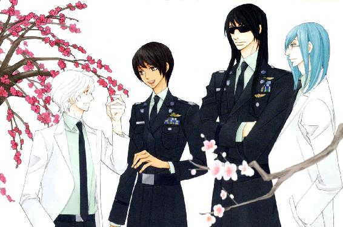
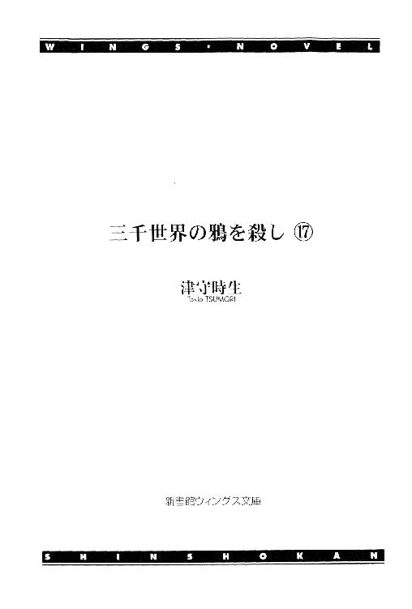
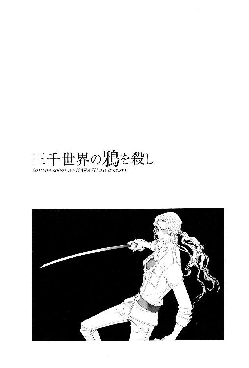
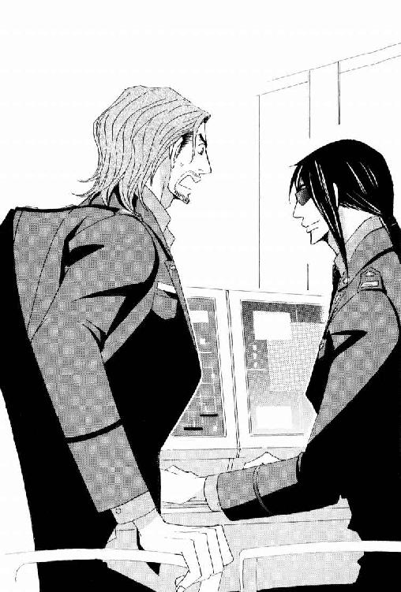
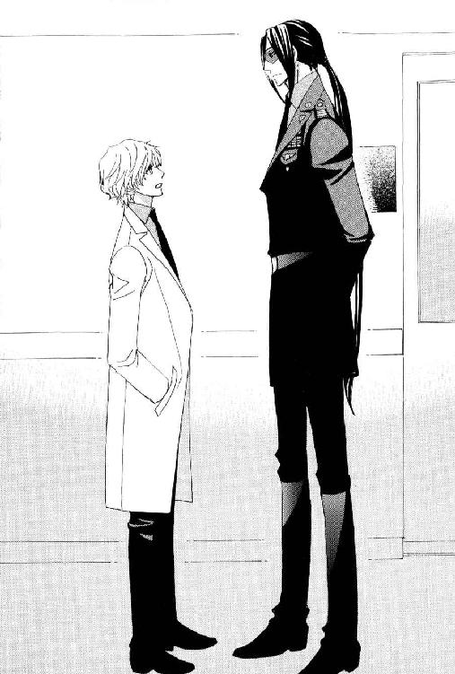
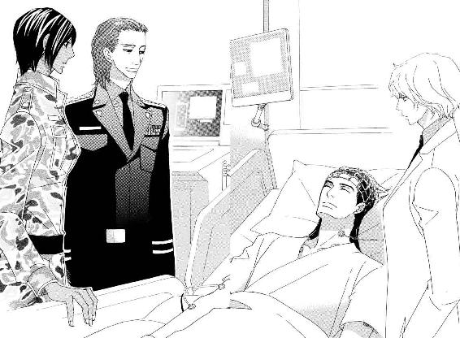
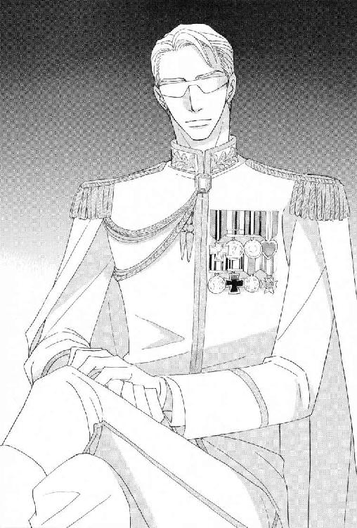
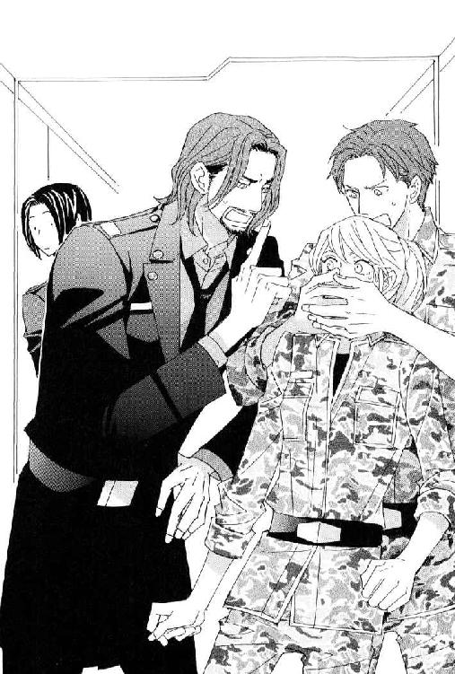

| 三千世界の鴉を殺し(17) (ウィングス・ノヴェル) | |
| 津守時生 | |




１
銀河連邦宇宙軍バーミリオン星カーマイン駐屯基地に所属する兵士で構成された部隊は、惑星軍エメラルド・フォレスト基地に対し、未明に強襲作戦を開始した。
最大の目的は、惑星軍基地に配備されている大陸間弾道ミサイルの無力化。
そして、強襲作戦の正当性を証明する存在になる地下武器庫の制圧。
宇宙軍の惑星軍基地強襲の名目は、惑星軍上層部によるクーデターの阻止だった。
惑星軍が惑星外から密輸入した多量の武器をその証拠として押さえ、ジャングルの地下に作った武器庫に隠匿していたことを惑星政府に通告する。
地下武器庫の存在から推測して〈イヴル〉は、惑星軍上層部を完全に掌握していると思われる。従ってカーマイン基地は、いつ大陸間弾道ミサイルで攻撃されるかわからない。
エメラルド・フォレスト基地を武装解除する作戦は大胆なものだったが、事前に基地のコンピュータへのハッキングで内部を充分調べ上げた末の決行であり、無謀なものではなかった。
輸送機からジャングルに降下したライラ・キムの指揮するＡＦＳ隊は、地下武器庫に通じる縦型管路の入り口をふさいだ土砂の撤去を開始した。
資材運搬や掘削などの土木作業用ロボットの研究から枝分かれし、兵器として開発されたＡＦＳなので、非常に効率よく速やかに撤去は終了する。
高温多湿の土地の土が関節部分に入り込み、あとで整備兵たちから苦情がくるだろう。
整備兵の苦情は、彼らに目の仇にされているルシファードが、すべて引き受けることになっている。
ＡＦＳの操縦席に座るライラは、その光景を想像して束の間苦笑した。
すぐに表情を引き締め、メイン・モニターに映る金属製の頑丈な出入り口を確認し、衛星回線を通じてプロジェクト分室に待機するガーディアンたちに連絡する。
「クラブからダイヤへ。撤去終了」
『こちら、ダイヤ。了解。ただちにゲートを開く』
地下武器庫の管理コンピュータをハッキング中のガーディアン・ブルーが応答する。
足下のゲートが開くまでに多少の時間を要した。
縦型管路には何層ものゲートがあり、内側から順番に開いていく。
この管路は、輸送用ＶＴＯＬ発着のために作られた。武装した兵士を乗せて出撃するクーデター決行の日まで、使われる予定はないはずのものだった。
ＡＦＳを安全に降下させるために必要な機体同士の距離を考えると、一度に降下できるのは一機がやっと。
先発した機体が武器庫の床に着地し、移動して場所を空けるのを待ってから、次の機体が降下するのでは時間がかかりすぎて、奇襲にならない。
ライラのチームは、仮想現実のシミュレーション装置でＡＦＳの操縦技術に優れていると判定された兵士を選抜して構成した。
もちろん仮想現実と実戦には大きな差がある。日常の訓練でＡＦＳを操縦する機会が極端に少ない以上、ぶっつけ本番で作戦に臨むしかない。
それに、たとえ今回の作戦のためにＡＦＳが自由に使用できたとしても、ＡＦＳを使った特別訓練は非常に目立つ。
カーマイン基地内のどこで〈イヴル〉の構成員が監視しているかもわからない現状で、この武器庫内部を想定した訓練を行なうのは好ましくない。
作戦内容までは察知されなくとも、過剰な警戒を招く危険は充分ある。
その他にＡＦＳの機体がかなり古いため、降下の衝撃を吸収する装置への信頼性が低い。
衝撃を吸収しきれなかった場合に機体の関節部分が耐えられるかどうか。
懸念材料は色々あったものの、ライラの部下たちは誰一人横転することなく、輸送機からジャングルへの降下を無事やり遂げた。
今度の降下は熱帯雨林の木々が生い茂っている場所より、遙かに足場はいい。
無線回線で部下たちに命じる。
「私が最初に行く。パーカー伍長はこの場に待機。残りは十秒間隔であとに続け」
『アイアイ・マム！』
指揮官が先頭を切って敵地に乗り込むのはリスクが大きく、賢明な判断とは言い難い。
状況に即応し的確な指示を出せるように訓練を積んだ指揮官を失うと、戦場に残された部隊は混乱し、その間の行動の遅れが部隊を全滅させる恐れもある。
だが、危険が待つと承知で突入する時、それを命じる指揮官が安全な後方にいるか、率先して突入するかで部隊の士気は大きく変わる。
地下武器庫全体の構造を知っているのは、事前に監視装置のハッキングで得た映像を見ているライラだけだった。
地下武器倉庫で警備兵が万全の迎撃態勢で待ち構えているなら、現在もハッキングで後方支援するガーディアンたちが、そうと知らせてくれる。
従ってライラはためらわず、眼前の深淵に向かって機体を跳躍させた。
出力の大きな輸送艇のエンジンの稼働音は、小さくしようとして静音装置をつけても限界がある。
ＶＴＯＬ輸送機のエンジン音は、エメラルド・フォレスト基地で歩哨に立つ惑星軍兵士の耳に届いていた。
レーダー監視装置のある管制室に問い合わせた兵士は、レーダーに何も映っていないという管制官の返事に耳を疑った。
寝ぼけて夢でも見たのだろうと当直の兵士にからかわれているあいだも、基地に接近する機体のエンジン音は大きくなっていく。
歩哨の兵士はレーダー装置の故障と判断し、それ以上管制室との無駄なやり取りに時間を費やさなかった。
非常事態を告げるサイレンのスイッチを押す。
大音響の連続音が、惑星軍基地中に鳴り響いた。
それと前後して、低空飛行で基地上空に達した輸送機から、パラシュートを装着した兵士たちが降下し始める。
ガーディアンたちは惑星軍基地のコンピュータもハッキングし、すべての操作を支配下に置いていたが、何事にも限界はある。歩哨に発見されるのは想定済みだった。
就寝中の兵士たちはサイレンに飛び起きたものの、建物の通路の各要所に設けられた防火シャッターが下りて、進路を阻まれる。
さらに照明が消え、暗闇の中で彼らは混乱に陥った。
ドミニク・バンカーは、惑星軍側が迎撃態勢を整える前に基地を制圧することを目的としていたが、その際、極力死傷者を出さないよう部下に命じていた。
ガーディアンたちが一人でも多くの兵士を足止めし、時間稼ぎをしているうちに、宇宙軍の部隊がネットワークに接続していないコンピュータの管理下にある場所を襲う。
ドミニクの部下の兵士たちが降下したあと、ライラたちのＡＦＳを搭載していた輸送機は、惑星軍基地専用飛行場の滑走路に着陸した。
巨大な輸送機は、着陸するや否や機体後部を全開にする。
機内に残っていたＡＦＳ二機が、無人の滑走路に素早く降り立つ。
彼らの使命は、対空砲やミサイル発射装置の一部を破壊し、使用不能にすることだった。
配備されたそれらの位置は事前に調べてある。
バーミリオン惑星軍は、カーマイン基地を上回る貧乏基地なだけに大した数ではない。
地下武器庫には相当数の重火器を隠し持っていても、見える場所は乏しい予算に見合った装備になっている。
たとえ流民街の出身者でも、一般兵士は〈イヴル〉と無関係なものが多いだろう。
流民街出身者でも、定められた期間を惑星軍の兵役に就けば、バーミリオン星の正式な市民権を家族を含めて得られる。市民権目当ての彼らには、自分が惑星政府に対するクーデターに参加するなどとんでもない話だった。
惑星軍上層部を占める〈イヴル〉の構成員たちは、外部のものだけでなく、基地にいる一般兵士の目もあざむかなくてはならない。
もともと上官命令に従うよう訓練されている一般兵士たちは、クーデター決行の時にも疑問を感じつつ命令に従う。命令を拒否する一般兵士は銃で脅せばいい。
クーデターを未然に防ぐ宇宙軍の行動は、一般兵士には有難いことのはずだが、現時点でそれを理解しろと言うのは無理な話だった。
惑星軍兵士たちの本格的な抵抗が始まる前に基地を無力化しなければならない。
ミサイル発射装置は高台にあり、飛行場から多少距離がある。
短時間に使用不能にするためにはＡＦＳを利用するのが最も適しているという理由で、二機がこちらに回された。
彼らには修理すれば使えるように壊せという、少々面倒で士気の上がらない中途半端な命令が出ていた。
完全に破壊すると、後日惑星政府から請求書を回される恐れがある。
それはカーマイン基地司令官のブレッチャー大佐の激烈な怒りを招くため、極力回避したい事態だった。
ＡＦＳ二機が飛行場の敷地からまだ出ないうちに、ドミニクの乗った輸送機がＡＦＳ用輸送機の近くに着陸した。
兵員輸送用のそれは、巨大なＡＦＳ用輸送機と大きさを比較すると四分の一程度。
戦艦勤務からカーマイン基地に左遷されたのみならず、片目の負傷を理由に需品科の事務職へと配置転換されたドミニクにとって、久しぶりの実戦だった。
ボナム少尉とアダン曹長が突入部隊と一緒に降下し、現場で指揮を執っている。
ドミニクは指揮官として輸送機の中で待機し、部下たちの報告を待つべきところだが、機外に出てＡＦＳの輸送機へと走った。
選抜した兵士の中には、イヴルの構成員や協力者が紛れ込んでいる可能性もある。
しかし、今回の任務は必ず成功させなければならない。
従って極秘任務に就く兵士は少数精鋭となり、指揮官の彼女も後方支援の名目で動く。
彼女は、制圧に向かった兵士全員が携行する軽機関銃の代わりに、鋼鉄の塊さえ一刀両断する合金刀を持っていた。
輸送機で隣に座ったボナム少尉から、それをどういう状況で使うつもりなのかと尋ねられ、彼女はお守りだと答えた。
跳弾による同士討ちの危険、精密機械や爆発物などが近くにある場合など、銃が使用できない状況は戦艦内での戦闘以外にもある。
合金刀はナイフよりリーチが長いという長所があり、金属の重さは六芒人の血を引く彼女にとって欠点と呼ぶほど大きな負担にはならない。
彼女の筋力が生み出す速さと、大半のものを切断できる合金刀の組み合わせは、早く事態を決着させるのに役立つ。
もちろん、使わないに越したことはないが。
まだ彼女が若く階級の低かった頃、とある惑星の内戦に介入する任務に就いた。
共に前線で戦ったその惑星の義勇兵が、あんたなら使いこなせるだろうと言って、勝利の記念にくれたのがその合金刀だった。
以来、夫のブライアン・バンカーより長く一緒にいる。
ＡＦＳを全機降ろした輸送機の貨物室近くに、一台の装甲車が彼女を待っていた。
中年の整備兵が、ＡＦＳと一緒に搭載してきた装甲車の運転席に座っている。隻眼の少佐を助手席に迎え入れると、すぐに出発した。
惑星軍基地を制圧し武装解除をさせた後、基地司令官と会って事情を説明するのがドミニク・バンカーの役目だった。
ナビゲート装置の画面に触れてコンピュータを起動させ、少人数に分かれた兵士たちの位置を確認していると、左耳に付けたままの通信装置にライラから連絡が入る。
『クラブからスペードへ。制圧完了。武装解除した警備兵は、一室に集めて拘束』
「こちら、スペード。了解した。そのまま待機せよ」
ドミニクがワイヤーマイクを口元に伸ばし応答していると、通信装置は別の通信が入っていることを振動で伝えた。
惑星軍基地の対空砲とミサイルを使用不能にするべく向かったＡＦＳの一機からだった。
チャンネルを切り替えて応答する。
「バンカー少佐だ」
『リーアム伍長です。今、大陸間弾道ミサイルが二基、発射準備に入りましたっ！』
聞いた瞬間、血の気が引く。
ＡＦＳに搭乗している兵士も事態の深刻さを理解している。報告する声は悲鳴に近い。
「そちらの機で発射台を破壊できないのか？」
『高台に設置された発射台なので、現在位置から攻撃はできません。攻撃可能な位置までの移動中に、発射される恐れもありますっ。大至急ミサイル管制室を制圧し、発射の阻止をお願い致します！』
「了解した。すでに部隊は向かっている。そちらは発射阻止のために全力を挙げてくれ」
『アイアイ・マム！』
「以上だ」
通信を切ったドミニクは、運転を担当する整備兵にミサイル管制室へ全速力で向かうように指示する。
――これでは本末転倒になる......っ。
ルシファード・オスカーシュタインは、宇宙軍が流民街地下の秘密に気づく以前から惑星軍基地に地下武器庫が作られていたことから、いずれ〈イヴル〉はクーデターを起こすつもりだと推測していた。
流民街地下に埋まった宇宙船から外宇宙文明のテクノロジーを持ち出したくても、現在の状況では惑星政府に知られず行なえることではない。
惑星政府だけでなく報道機関まで意のままになる状況を作り出すには、武力によるクーデターを起こし、新たな独裁政権を樹立するのが一番簡単な方法だった。
惑星外から見れば、流民街マフィアと兵士に流民街出身が多い惑星軍が結びついて生じたクーデターであり、背景には流民街に住む不法移民の強い不満があったと分析されるだろう。
軍事独裁政権が長期に続く必要はない。
〈イヴル〉の構成員には政治家や経済界の人間もいる。
軍事政権が長期化すれば、政治家は存在意義を失い、惑星の経済活動にも支障をきたす。
独裁政権ならではの強権を発動して流民街を再開発し、その過程で出土した古い宇宙船の残骸を調査の名目で汎銀河系複合企業体ＦＲＣ傘下の企業もしくは研究機関に渡す。
それは結局ただの古い移民船だったという結論が下り、その調査報告書を惑星政府として正式に承認する。
とりあえず、そこまで保てばいい。
流民街を再開発し不法移民に市民権を与えたあと、当初の目的を果たしたとして軍事政権から民主政権に移行するのが最良のシナリオだろう。
それがうまくいかずに新たな武力衝突が生じたり、経済の混乱が長引いても、ＦＲＣは何も痛痒を感じない。
そのクーデター計画最大の障害は、もちろん首都防衛を任務として駐屯する銀河連邦宇宙軍カーマイン基地だった。
クーデター計画の実行開始と同時に大陸間弾道ミサイルを発射し、真っ先にカーマイン基地を消滅させ障害を排除する。
だからこそ、ルシファードたちは惑星軍基地を迅速に無力化する必要があった。
地下武器庫の存在や惑星軍上層部が〈イヴル〉に取り込まれていることを、宇宙軍側が察知したと〈イヴル〉側に気づかせてはならない。
気づいていないと思わせて先手を打つ。
それがルシファード・オスカーシュタインの作戦だった。
地下武器庫という証拠を突きつけて惑星政府を動かし、惑星軍からイヴル構成員をできる限り排除させる。
できれば大陸間弾道ミサイルの廃棄にまで持ち込みたい。
それなのに、今発射されてはすべてが敵の思い通りになってしまう。
ドミニクは、作戦では真っ先にミサイル管制室を制圧することになっているボナム少尉のチームに連絡を取った。
『ボナム少尉です』
「現在の状況は？」
『ミサイル管制室を制圧後、第二ステージに移行中です』
すでに次の目標に向かっているという答えに唇を嚙む。
「二基のミサイルが発射準備に入った」
『そんなバカなっ！ ......失礼。当直兵は二名とも手足を縛って物置に放り込み、ご命令通り操作卓には銃弾を撃ち込んで、使用不能にしてあります』
この辺境惑星で仮想敵を求めるなら、惑星大統領の指揮下にない軍隊――つまり銀河連邦宇宙軍のカーマイン基地ということになる。
大陸間弾道ミサイル設置をめぐっては、首都を射程圏内におくことの是非が惑星議会議員のあいだで論議されたらしいが、宇宙軍基地への抑止力として別の大陸に惑星軍があるなら、武器は必要だという意見が通った。
惑星大統領の元夫で、現在失踪中の与党オナー党党首ジェラルド・フェアファックスが、設置すべきだと強く主張したそうなので、おそらく惑星軍上層部を掌握している〈イヴル〉の意向が裏で働いたのだろう。
ドミニクは、もっとも気になることを尋ねた。
「管制室に基地司令官はいなかったのか？」
『イエス・マム。当直兵二名のみでした。何か？』
「首都を攻撃可能なミサイルの発射が、基地司令官抜きで可能だとは思えないのだが」
『おっしゃる通りです』
「アダン曹長に連絡を取るので、一旦切るぞ」
相手の返事を待たずに通話を切り、アダン曹長を呼び出す。
曹長が率いる部隊は惑星軍基地司令官ジェフリー・キューザック少将の身柄を押さえるため、自宅に向かっていた。
エメラルド・フォレスト基地の指揮権を持つ男を捕らえ、基地の全兵士に向けて降伏宣言をし、抵抗を禁止する命令を出させなければ、惑星軍基地を少人数で短時間に制圧する作戦は失敗する。
地下武器庫を制圧し、大陸間弾道ミサイル発射装置を破壊できれば目的は果たせたも同然なのだが、ミサイルを発射されては元も子もない。
最悪の事態だった。
『アダン曹長です。基地司令官自宅に突入致しましたが、キューザック少将は家族を残して地下室に立てこもり、身柄を確保できていません。現在の戦力で扉の破壊は不可能です』
「了解。家族全員の身柄を確保し、見張り二名を残して次の作戦にかかれ。私が基地司令官自宅に行き、地下室から司令官を引きずり出す」
『アイアイ・マム』
即座に状況を説明した曹長は口調こそ落ち着いていたものの、最初の任務を達成できなかった無念さが声ににじんでいた。
ドミニクの通信を隣の運転席で聞く整備兵は、彼女の命令を待たずにキューザック少将の自宅へと進路を変更する。
そして、自分の推論を述べた。
「司令官が立てこもっている地下室にも、ミサイル発射装置があったのではないでしょうか」
「私も今それを考えていた。恐ろしい私物化だな」
「共犯者が山ほどいなければ、到底不可能でしょう。銀河連邦宇宙軍では考えられません」
「基地の無力化を図るものは、真っ先にミサイル管制室を占拠し封鎖する。本物の管制室を囮にしたのだろう。普段使用していない自宅の地下室など、共犯者以外の人間は誰も注意を払わない」
司令官の自宅周辺は警備装置の監視カメラが撮影している。
ルシファードは一応チェックしただろうが、プライバシーの問題で自宅内部は監視対象外だった。
まさか地下室にミサイル発射装置がもう一つあるとは、彼も考えなかっただろう。
都市警察のガーディアンたちがいかに優秀なハッカーでも、基地のコンピュータ・ネットワークを含め、外部と繫がっていないコンピュータでは乗っ取りようがない。
奇襲したはずが裏をかかれた。
このままでは、自分たちの帰投する場所がなくなる。
――焦るな。まだミサイルは発射されたわけじゃない......！
ドミニクは心の中で自分に強く言い聞かせる。
司令官自宅に到着するまでの時間を利用し、ドミニクはミサイル発射台の近くにいるＡＦＳのリーアム伍長と突入部隊のボナム少尉を呼び出して現状を説明した。
そして、後方支援でカーマイン基地に残っているリーダーのルシファード・オスカーシュタインに連絡をする。
「スペードからハートへ――」
カーマイン基地本部ビル内のプロジェクト・ルームは、ドミニクから緊急事態の報告を受けた後、しばし重苦しい沈黙が降りた。
最初に口を開いたのはマルチェロ・アリオーニだった。
「なぁ。どうして俺たちがハートなんだ？」
聞かれたルシファードはパソコンに向かい、猛烈な勢いでキーボードを打ち始める。この状況で一番気にするのはソコ？ という当然の突っ込みもない。
無視された形のマルチェロは、なおも食い下がった。
「何でだ。俺は納得できないぞ」
「何でって......。確かスペードは剣で、クラブは棍棒を象徴するマークだろ。Ｄは本当に合金刀を持って出撃していったし、ライラの拳は最強の棍棒だもんな。動く危険物のお姉さま方にピッタリじゃん」
コンピュータを操作しながら、黒髪の男はププッと小さく吹く。
そもそもトランプのマークを使った呼称の使用を決めたのは、今回の奇襲作戦を計画したドミニクであり、ルシファードに苦情を申し立てるのはお門違いだった。
「奇襲作戦の実行部隊だから、意味からしてそっちを選択するのは仕方がない。だけど、何で分室の坊主たちじゃなくて、俺たちがハートなんだよ」
「サンバでルンバな愛の狩人がいるからだろ」
「それを言うなら、あの牝狼どもに愛されているお前がいるからじゃないのかっ？ 俺を巻き添えにするなっ！」

無精ヒゲの憲兵隊隊長は、ハートをトレードマークになどされたら一生の恥だと思うマッチョ主義者だった。
「ただの識別記号だろうが。赤いハート柄の迷彩服を着ろと言われているワケじゃなし、そこまでムキになるほどのことか？」
「赤いハート柄なんて、どんな場所に行けば迷彩効果があるんだ？ 今度はそっちのほうが気になるぞ。――ところで、さっきから何をしている」
「ミサイルの大まかなコースを予想をして、近くを通る航空機があったら迂回するよう警告しようかと」
「ああ、早朝の離発着便があるもんな。というか、惑星大統領閣下に報告して緊急避難命令を出してもらわなくていいのか？ まだ発射されていないそうだが、カウントダウンは始まっているんだろう？」
深刻なセリフとは逆に、マルチェロはルシファードの買ってきた夜食のサンドイッチを袋から取り出して、のんびり頰張る。
「いや。こんな夜中だ。緊急避難命令の伝達手段も限られる。たとえ昼間だったとしても、どれだけの市民が本気で避難すると思う？ バーミリオン市民には身内の惑星軍が、惑星の反対側からミサイルを撃ってくるなんて、即座に信じろと言うほうが無理だ」
「まして今は夜中、まさしく寝耳に水ってヤツ。正確な弾道計算もできない状況じゃ、逃げる方向も指示できないしな。一部にパニックを起こすだけなら、知らせる必要もないか。一応、確実に起きている惑星大統領閣下には、面目丸潰れを覚悟で報告しておくか？」
「面目丸潰れどころの話じゃねえよ。気づかないフリして放っておけば何もなかったかもしれないのに、惑星軍基地を急襲して制圧に失敗し、大陸間弾道ミサイルを二基も発射させちゃいました。カーマイン基地と首都中枢が壊滅します――って報告を聞いて、あんたが惑星大統領だったらどうする？」
ルシファードは淡々と話しながら机の引き出しを開け、コンピュータの短いケーブルを何本も取り出す。
マルチェロは仮定の話に顔を歪め、即座に宣言した。
「お前をこの手でブッ殺す」
「そーだよねー？ 俺としても親父の元愛人なんぞに、親父の名に泥を塗る出来損ない息子とか呼ばれたくねーのよ」
「は？ Ｏ２の元愛人って誰のことだ？ 俺、そんな面白コワイ話をお前から聞いてないぞ。......おい。今度はほかのコンピュータを片端から自分のコンピュータに繫いで、何を始めるつもりだ」
「今回の事態は想定内だ。惑星軍のクソ外道司令官に出し抜かれただなんてコトは、銀河連邦宇宙軍の名誉に賭けてあり得ない。ミサイルは俺が始末する」
真面目な口調で言い切ったルシファードに、マルチェロは驚く。
「できるのか？ 迎撃ミサイルなしで」
バーミリオン惑星議会が、惑星軍エメラルド・フォレスト基地に大陸間弾道ミサイルを配備することを決めた時、仮想敵として攻撃目標にされたのはカーマイン基地だった。
それを知ったカーマイン基地の兵士たちが、激怒したのは想像に難くない。
カーマイン基地に駐屯する将兵は、銀河連邦議会の承認を受け、加盟惑星の首都防衛を主な任務として銀河連邦宇宙軍から派遣されている。
銀河連邦宇宙軍は、一惑星や特定種族の利益を超越し銀河系全体の繁栄と安定のために存在すると銀河連邦法に定められ、その理念が兵士たちの誇りだった。
いくら内部では最悪の左遷場所、兵士のゴミ溜めなどと言われていても、誇り高き銀河連邦軍を仮想敵とみなす侮辱的な扱いに憤らないほど堕落していない。
宇宙軍に誇りも愛もないなら、退屈な辺境惑星の基地などにしがみつかず、とっくに除隊している。
連隊長たちが駐屯する兵士すべての総意として、基地にミサイル迎撃装置を導入すべきだと主張したのは、基地の記録にも残っているので間違いない。
だが、当時の司令官はヴァンダイク方面軍総司令本部から送り込まれた男だった。
基地を弱体化を目的として着任していた司令官が、それに応じるはずもない。
その男は弁を弄して部下たちをなだめた。
曰く、カーマイン基地を攻撃するのは、銀河連邦宇宙軍全体を敵に回すことになる。
辺境惑星の惑星軍が、そんな勝ち目のない無謀な戦いを挑むとは到底思えない。
惑星軍に充分な予算を回さず、乏しい装備のままにしておく方便として、一点豪華主義的に弾道ミサイルを配備したのだろう。頭上から狙い撃つ攻撃衛星にしないだけ配慮を感じる。
予算の乏しいカーマイン基地が、使う見込みのないミサイル迎撃装置など導入するのは、非現実的な提案である等々――。
そんな身勝手な方便で、連邦宇宙軍を侮辱するなど言語道断だという反論は当然あったが、司令官が迎撃装置配備を了承しなければ、すべてはそこで終わってしまう。
かくて、現在もカーマイン基地に迎撃装置は存在しない。
そして不愉快な方便に利用された宇宙軍基地のみならず、惑星軍への弾道ミサイル配備を許可した惑星政府も議会も今、共に消滅の危機にさらされていた。
ルシファードはあっさり言ってのける。
「ミサイルを破壊できるなら、迎撃ミサイルでなくともいいんだし」
「そりゃそうだが、探知レーダーに映らないステルス機能付きで、飛行経路を予測させないように自分で進路の揺らぎを生み出すという、いやらしいヤツをどうやって破壊する？」
「自分で重心を移動してフラフラする分、隣の弾頭にぶつかって自滅する危険があるから、多弾頭ミサイルの弾頭数が抑えめになるのは、迎撃する側として大助かりだ。まぁ、どちらにしても増える前に叩く方がいいのは、ゴキブリと一緒だな」
「一緒じゃないだろ」
マルチェロは即座に否定した。
ルシファードはスクリーン・グラスを外し、故障したブレイン・ギアの代用品として自分が改造した戦闘機パイロット用のヘルメットをかぶる。
「確かにゴキブリは爆発しないけどー」
「爆発するゴキブリ......ッ！ いやだ......イヤ過ぎる！」
そっちかよと突っ込むより早く、ゴキブリの体が飛び散る光景を想像してしまった憲兵隊隊長は、おぞましさに身震いした。
多弾頭ミサイルは迎撃ミサイルに対抗して造り出され、一発のミサイルの中に複数の弾頭を搭載している。
大陸間弾道ミサイルの軌道は大きな放物線を描く。発射されて一度大気圏を越え、放物線の頂点を過ぎて大気圏に再突入する。
その時にミサイルが分解し、搭載された弾頭が一つずつ切り離されて、地上へと落下する仕組みだった。
多弾頭にすることで命中精度が上がり、迎撃されることなく全弾命中すれば総合的に威力も大きくなるため、大陸をまたぐような長距離ミサイルだけでなく、中距離弾道ミサイルにも多弾頭が多い。
バイザーを下ろして目元を覆ったルシファードは、コンピュータのような感情のない声で言った。
「エメラルド・フォレスト基地より、大陸間弾道ミサイル第一弾・第二弾発射」
マルチェロの近くにあるコンピュータに、ガーディアンたちがハッキングした惑星軍基地の管理コンピュータから転送されてきた映像が映っている。
飛行場の管制塔に取り付けられた、外部監視カメラのものらしい。
早朝のもやがかかった空気を吹き払い、二基の巨大なミサイルが火を噴いて上昇していく。
弾頭部分が大気圏外まで上昇するのに必要な固体燃料を搭載したロケットは、燃料を使い切るごとに切り離される。
憲兵隊隊長はうめいた。
エメラルド・フォレスト基地司令官の自宅前に装甲車が止まり、助手席からドミニクが降りるとほぼ同時に、気配で気づいた兵士が玄関から飛び出してきた。
ドアは爆破され、わずかに残骸が残っているのみ。
「少佐殿！ 地下室にご案内しますっ」
アダン曹長が残した突入部隊の一人だった。
二人は余計な会話を交わさず、惑星軍基地司令官が立てこもる地下室へと向かう。
地下室というと、日用品の買い置きや非常時用に備蓄する食料を入れておいたり、スポーツ用具の保管場所といったイメージが強い。
階段を下りたそこは、廊下に面していくつかの部屋がある地下一階だった。
廊下の突き当たりにある部屋が、問題の一室だとは一目で分かった。
他の部屋の扉と異なり、明らかに籠城する場合も考慮した厚い金属で扉が作られている。
扉の脇の壁に穴が開けられ、扉を開閉する配線をいじろうとしたあとがあった。
案内役の兵士が小声で、ドミニクに通信で報告したあとの経緯を説明する。
「アダン曹長殿が家族に事情を話しました。ミサイル発射を中止して出てくるよう、家族からも室内通話で基地司令官に呼びかけてもらいましたが、聞き入れません」
「わかった。私がドアを切断する。閃光弾の用意をして、向こうに下がれ」
「アイアイ・マム」
ドミニクは剣の柄に手をかける。鞘を握った左手を後ろに引きながら、右手で長い刀身を抜き放つ。
鞘を足下に落とし、両手で剣の柄を握り直すと大きく振りかぶった。
縦に二度切り下ろす。続けて横に二度。
凄まじい速さが、風を切る音を一つに繫げる。
閃光弾を握って床に片膝をつく兵士は、彼女の動きを目で追えなかった。
姿勢を戻したドミニクが、抜き身の剣を下げたままドアを蹴りつけた。
四角に切断されたドアの一部が、室内側に吹き飛ぶ。
兵士は閃光弾を投げ入れて、目をかばいながら床に伏せた。
閃光弾は室内で強烈な光を放つと共に、衝撃波を発生させ室内にいる人間を麻痺させる。
壁に背をつけ、光が完全に消えるのを待ったドミニクは、床から鞘を拾って合金刀を収めた。
念のため軽機関銃を構えた兵士が、室内に突入する。
「一名確保！ 基地司令官です！」
「了解した」
兵士に続いて室内に入ろうとした彼女の足を、通信の呼び出し音が止めた。
悪い予感がする。
それは大陸間弾道ミサイルの発射台に向かったＡＦＳの兵士からだった。
最悪の事態の報告をする兵士の声は震えていた。
『少佐殿......間に合いませんでした。たった今、目の前で二基のミサイルが発射されました』
「了解。作戦を続行せよ」
『ノー・マム！ 作戦は失敗ですっ。基地が......戻るところがなくなってしまうのに、こんなことをして何になると――』
「上官命令に従え、バカモノッ！ 泣き言をほざくのは作戦終了後にしろ！」
パニックに陥りかけた兵士はドミニク・バンカーの大喝を受けて、気を取り直す。
『アイアイ・マム。次の作戦行動に移ります。以上――』
命令に従って動いているあいだは、何も考えなくてすむ。
たとえドミニク自身がどれほど動揺していようと、この作戦が終了するまでに、彼女は部下たちに対し与える次の命令を考えておかねばならない。
カーマイン基地が失われても、銀河連邦宇宙軍は存在する。応援が到着するまで、連邦宇宙軍兵士として取るべき態度、やるべき行動があった。
突入した兵士が、後ろ手に縛り上げた初老の男の巨軀を引きずって出てきた。
閃光によって奪われた視力がまだ回復しない男は、固く目を閉じて痛みにうめいている。
廊下に転がされた巨漢は、歩哨のサイレンによって就寝中にたたき起こされたらしく、夜着のままだった。
ドミニクは膝をついて、男に話しかける。
「惑星軍基地司令官ジェフリー・キューザック少将殿ですね。私は銀河連邦宇宙軍カーマイン基地所属ドミニク・バンカー少佐です。エメラルド・フォレストの地下武器庫における多量の武器不正輸入、流民街マフィアが違法に設立した地下銀行にあるあなた名義の口座の不正蓄財など、いくつかの容疑により、あなたを拘束します。銀河連邦宇宙軍軍法に従い、あなたを直ちに連行したのち、しかるべき司法機関に引き渡します」
「......しかるべき司法機関......？ もうそんなものは存在しない。私を裁けるものなどいないのに......お前たち、銀河連邦宇宙軍に私を拘束する権利はない！」
「我々がこの場に存在する限り、銀河連邦法は執行されます。主権を持つ惑星政府が存在しなければ、臨時政府が樹立されるのを待って、あなたの身柄を引き渡します」
「そんなものより先に......組織が私たちを解放にくる！ 貴様ら宇宙軍の生き残りなど皆殺しだ！ だが、せっかく生き延びた命だ。今すぐ私の拘束を解いてジャングルに逃げ込むなら、放っておいてやってもいいぞ」
事務的な口調で無表情に言い渡す女性将校に対し、反対に少将は優位に立つものとして傲慢な態度を取る。
ドミニクの唇が皮肉な笑いに歪む。
「おめでたい男だな。惑星軍兵士たちは、駒としてまだ使えるから残すだろうが、お前は口封じのために間違いなく殺されるぞ。イヴルの背後にいる汎銀河系複合企業体が、大量殺戮者の汚名をあえてかぶると思うか？ 惑星軍基地という小さな王国の狂った暴君が、被害妄想の末に私した大陸間弾道ミサイルのスイッチを押したという筋書きだろうな」
「そんなことをさせてたまるか。私はちゃんと証拠と証人を別の惑星に残してある。私に何かあれば表に出ることになっているっ」
悪事によって結びついた仲間を信じ切れないのは、悪党の悲しい性だった。
「コングロマリットを甘く見るな。連中は豊富な資金で、銀河連邦宇宙軍上層部の一部も抱き込んでいる。連中が細菌兵器の人体実験をしていた客船を救助したばかりに、上官と私はこの惑星に左遷された。一個人のあがきなど、簡単にひねり潰される。お前の身を守るはずの証拠も証人も、すでに消されている可能性だってあるな」
嘲笑するドミニクの言葉には説得力があった。
キューザック基地司令官は反論しようとして口を開くが、血の気が失せた唇は震えるだけで言葉を発することはなかった。
自分が取り引きした組織は、将来障害になる人間はひそかに監視し、用済みとなれば冷徹に抹殺計画を実行するような連中だと、改めて思ったのだろう。
司令官の胸ぐらを摑んだドミニクは、片手で軽々と引きずり立たせ、追い打ちをかける。
「私たち銀河連邦宇宙軍は、お前とお前の家族を命懸けで守ってやるつもりはない。私たち自身がお前のやったことの証人なんだからな。お前が助けを期待する組織とやらが先にやってきたら、お言葉通りお前を放り出して、ジャングルに逃げ込ませてもらう。仕事柄サバイバルは得意だ」
「......たとえそうなったとしても、娘たちは何も知らない。孫もまだ幼い。お前たちなどに守ってもらわずとも――......」
部屋から惑星軍基地司令官を引きずり出してきた兵士は、今まで黙って聞いていた。
そのセリフを聞いて我慢できなくなったのか、いきなり無言で強烈な拳の一撃を相手の顎に炸裂させる。
後ろ手に縛られていた巨漢は、脇からの不意打ちにたまらず廊下に倒れた。
怒りに震える拳を握りしめ、宇宙軍の一兵士はどこまでも身勝手な男を怒鳴りつける。
「何も知らなければ死なずに済むとでも言うのか！ ついさっき、あんたがスイッチを押した弾道ミサイルは、カーマイン市に住む多くの子供たちの命も奪うんだぞ！ あんたの孫より幼い赤ん坊だっているだろう。あんたが平然と赤ん坊を殺すのに、あんたを始末しにきた連中はあんたの孫を見逃すと思っているのか？ あんたの仲間だ。あんたと同じように子供の命なんか何とも思っていないだろうよ......っ！」
怒りにまかせて一気に思いを吐き出した兵士は、ドミニクに向き直り頭を垂れる。
「申し訳ありません、少佐殿。感情的になって捕虜を暴行しました」
「君が殴らなかったら私がやった。私が殴ると顔面の陥没骨折になっていただろうから、君が先に手を出してくれて反対に助かったよ」
抵抗できない捕虜に対する暴行は、軍法で禁じられている。
処罰を覚悟している兵士にドミニクは優しく声をかけた。
カーマイン基地のことは口にしなかったが、目の前にいる兵士は子供が何人かいてもおかしくない年恰好だった。
もし基地に家族を残していたとしたら、目の前で弾道ミサイルの発射ボタンを押され、気も狂わんばかりに取り乱しても不思議ではない。
逆によくぞ感情を抑えたと思う。
ドミニクは指揮官の口調に戻って命じた。
「このクズを装甲車に連行しろ。私はこの男の家族と話をしてから行く」
「アイアイ・マム」
脳震盪を起こしたのか足下のおぼつかないキューザック少将を、兵士は半ば引きずり上げるようにして階段を上らせていった。
一人残ったドミニクは重く沈みがちな気持ちを叱咤し、カーマイン基地との通信を試みる。
通信のチャンネルを合わせながら深呼吸し、最後まで軍人らしく冷静でいろと自分に言い聞かせた。
「スペードからハートへ。こちら、ドミニク・バンカー少佐」
『ハートからスペードへ。ルシファード・オスカーシュタイン大尉です』
妙にクリアな音声で、即座に応答があった。
ドミニクは左手に持った合金刀を強く握る。
「ミサイルが二基発射されてしまった。奇襲作戦は失敗よ」
あと何時間かでカーマイン基地は地上から消滅し、ルシファードも死ぬ。
ドミニクはただその時をなすすべもなく、待つしかない。
彼女に残された使命は、愚かな惑星軍基地司令官に自分が言った通り、必ず生き延びることだった。
いつかバーミリオン星に現れる銀河連邦軍と合流し、何があったのかを証言する。
カーマイン基地と共に証拠の大半は消されてしまうが、銀河連邦軍の到着がコングロマリットの派遣した発掘隊より早ければ、地下に埋まった宇宙船という一番重要な証拠は残る。
たとえコングロマリットに空間転移装置が運び出されてしまったあとでも、何かしらの痕跡は見つけ出せるだろう。
ルシファードが信頼して任せてくれた任務を成功させられなかったことが、何より辛い。
『いいえ、想定範囲内です。ミサイル二基はこちらで処理します』
「本当に......っ？ どうやって？」
『説明している余裕はありません。俺を信頼して下さい、Ｄ。このプロジェクトの責任者として、最後は俺が帳尻を合わせますから』
カーマイン基地で後方支援に当たる男は、何の気負いもなく言い切った。
かつて半分眠りに落ちながら彼が言った言葉を思い出す。
〝Ｄ。俺がボスだから、文句を言うなと言っているんじゃないんです。俺がボスだから全責任は俺が取る、と――そういう意味なんですよ〟
ドミニクはこみ上げる思いに胸を熱くする。
軍隊に限らず、高い地位の特権を享受しながら、いざ事が起きると責任逃れに終始する卑劣な輩は多い。
キューザック少将のように与えられた地位の高さに酔い、自分は特別な存在だと勘違いした挙げ句、他人を塵芥の如きものと見下す人間もよく見かける。
それなのにルシファードはいつも飄然として、重い責任を事もなげに引き受けるのだ。
「......基地に戻ったら、みんなで祝杯を上げましょう」
『極秘任務ですからねぇ。派手なことはできませんよ。――それでは、また基地で。以上』
本当はこんな呑気な会話をしている暇などないだろうに、一度は絶望した彼女の動揺を静めるために付き合ってくれた。
本当に憎たらしい。これで惚れるなというほうが無理だ。
ドミニクは階段を上がり、もう一人残っている兵士に聞こえるように声を張り上げた。
「拘束した家族のいる部屋はどこだ？」
「こちらです、少佐殿！」
奥から答える声がある。
発射されてしまったミサイルのことはルシファードを信頼して任せ、今は自分のなすべき務めを果たす。
惑星軍基地司令官の家族にキューザック少将を連行する理由を説明するため、ドミニクはそちらの方向に足を向けた。
エメラルド・フォレスト惑星軍基地にいるドミニク・バンカー少佐とルシファードとの通信を、彼のすぐそばの椅子に座っている憲兵隊隊長が聞くことはなかった。
ルシファードの意識はすでに電脳空間にあり、プロジェクト・ルームのコンピュータに限らず、多くのコンピュータをその意思の下に置いていた。
何が進行しているのかわからないマルチェロのために、彼の正面にあるコンピュータのディスプレイが、現在の状況をわかりやすく表示してくれる――とはいえ、今後ミサイルにどう対処するのかというルシファードの説明はない。
説明はミサイルを迎撃したあとで、ゆっくり聞けばいい。
画面左下にエメラルド・フォレスト基地という表示があり、大陸間弾道ミサイルの発射後にたどった軌跡が、重なり合った一本の線で描かれていた。
その先は点線で予測経路を表しているようだが、どちらがカーマイン基地を攻撃するミサイルなのか、今はまだ判然としない。
表示画面の上のほうでは、左から右へといくつもの光点がさまざまな速度で過ぎていく。光点が画面を横切る角度もそれぞれに違う。
移動する光点が何種類かに色分けされている意味を考えたマルチェロは、程なく光点一つが人工衛星で、色がその種類を表すものだと気づいた。
人工衛星は大別すると科学探査が目的の科学衛星、衛星通信を担う通信衛星、気象予報や研究に役立つ気象衛星、飛行機や船舶の安全な航行に必要な航行衛星、地形の調査に利用される測地衛星、そして軍事目的の偵察や攻撃などに使用される軍事衛星などがある。
軍事目的に打ち上げられたものではなくても、気象衛星や測地衛星などは軍事作戦に転用が可能だった。
ルシファードが流民街に現れた所属不明の中古パワード・スーツをレーザー砲で攻撃した際、利用したのが気象観測衛星と〈イヴル〉が秘密裏に打ち上げていた違法な攻撃衛星五基。
しかし、コンピュータのパスワードを書き換えて、ルシファードの管理下に置いたその五基は、何者かによってすべて破壊されてしまった。
攻撃衛星に自爆装置があったとしてもパスワードの書き換えによって作動しないため、外部からの攻撃――おそらく邪魔になる衛星の破壊を目的に〈イヴル〉が打ち上げた迎撃衛星の仕業と思われる。
――畜生。あの攻撃衛星が今でもあったら、楽にミサイルを迎撃できたのに。
今更と思いつつ、憲兵隊隊長は考えずにいられない。
――ん？ 迎撃......？ そうか、迎撃衛星を使うのか......！
今回、大陸間弾道ミサイルを打ち上げるロケットの噴射を赤外線で探知したのは、早期警戒衛星だった。
民間利用の人工衛星と同様に軍事衛星も何種類か存在し、それぞれ目的によって機能が全く異なる。
偵察衛星や航行衛星、通信衛星などは民間の測地衛星と同じ目的で使用されているが、遙かに精度は高い。
そして、民間にはなく軍事衛星ならではのものが、パワード・スーツをレーザー砲で破壊した攻撃衛星と迎撃衛星だった。
迎撃衛星はキラー衛星とも呼ばれ、敵勢力の打ち上げた軍事衛星に近づいて攻撃し、破壊することを目的としている。
攻撃対象は同じ宇宙空間に存在する人工衛星なので、レーザーを拡散する大気を考慮する必要がなく、攻撃衛星のような大出力のレーザー砲は備えていない。
大陸間弾道ミサイルはロケットによって打ち上げられ、軌道は放物線を描く。
燃料を使い果たした用済みのロケット部分を切り離しながら、大気圏脱出速度を得て、大気圏外に一度出る。それが放物線のピークだった。
ミサイルの弾頭自体は自己推進装置を持たない。多弾頭ミサイルの場合は大気圏再突入後、落下しながら一つずつ弾頭を切り離す。
各弾頭は、内蔵した慣性誘導装置に従って落下方向を調整するしくみだった。
惑星の周回軌道上を巡る人工衛星は、宇宙空間にある。
迎撃衛星のレーザー砲では、大気に拡散されて威力が落ちるため、大気圏内のものを攻撃対象にできない。
だが、迎撃衛星に軌道を変更させ、大気圏外にミサイルが出たところを近くから狙い撃つなら、破壊できる可能性はある。
ルシファードは〈イヴル〉が打ち上げた迎撃衛星を利用するつもりなのだ。
問題は攻撃するタイミングだった。
個々に速度は違うものの、一日に惑星を二十周するような衛星を使うような場合、好機は一度しかないことも考えられる。
その計算のためにコンピュータが使われている。
迎撃衛星が何基存在するのか、高速の移動によってめまぐるしく入れ替わる表示からは読み取れない。
弾道ミサイルは二基。目標がカーマイン基地にせよ、パープル・タウンにせよ、一基も撃ち漏らしは許されない。
ディスプレイに表示されるミサイルが、一つの線から二つに分かれた。
その先の点線通りに飛んだ先に、多くの人々の命がある。
気がつくと、かなりの時間が経過していた。
もうすぐミサイルの弾頭は、大気圏外に達する。
マルチェロはただ見ているしかない現状に飽き始めていた。
だからといって他の仕事を始めても、気になって集中できるわけがない。
「急速に接近しているこれは......ひょっとして迎撃衛星か？」
期待が思わずひとりごとになる。
ディスプレイの枠外から急角度で侵入してきた光点があった。このまま行くと弾道の予測経路と交わる。
惑星バーミリオンを楕円軌道で回る人工衛星――おそらくマルチェロが予想した通り、かつて〈イヴル〉のものだった迎撃衛星だろう。
電脳世界での作業に没頭するあまり人間らしさを失っている男は、別の方向を向いたまま無言でかたわらのコンピュータ・ディスプレイを指差した。
今まで使われていなかった画面に光が宿り、青と白で占められた映像を映し出す。
人工衛星の一つが、宇宙空間から撮影しているバーミリオン星だった。
撮影している映像の左側に別の人工衛星が入ってくると同時に、中央奥から斜め左に向かって黒い物体が飛んでくる。
三角錐に似た形状のそれは、弾道ミサイルの弾頭だと思われた。
左端にある人工衛星の全形が、画面に入るかどうかの距離まで近づいた時、弾頭が光を発した。
強い光に画面がホワイトアウトし、次の瞬間、今度は映像が途絶えてブラックアウト。
「やった......っ！」
一連の映像の意味を理解した憲兵隊隊長は、一人で歓声を上げ、拳を握って小さなガッツポーズを作る。
左側から画面に入ってきた迎撃衛星が、、搭載した小型のレーザー砲で接近中の弾道ミサイルを破壊したのだ。
その時に生じた爆発の光で画面がホワイトアウトした。
続いてブラックアウトしたのは、撮影中のカメラか撮影する人工衛星本体が、ミサイルの破片を浴びて壊れたのだろう。
大気圏外なので、空気がない場所に爆風は生じない。
「もう一発はどうなった？」
その言葉に応えて、再び同じディスプレイに光が復活した。
映し出される光景はバーミリオン星が画面の大半を占めている点で同じだが、先程のものと角度が大きく異なっている。
かなり斜めの角度から撮影されたバーミリオン星が、少しずつせり上がってくる。
別の人工衛星から撮影しているのだと即座にわかったが、第二の弾道ミサイルがどこに映っているのか、なかなか見つけられない。
一体化していた背景の宇宙空間から抜け出した弾頭の黒い影が、惑星の青と白の映像に重なって、ようやく位置と形がはっきりした。
だが、弾頭が大気圏に再突入をしようとしているのに、近くに迎撃衛星らしきものは見あたらない。
撮影中の人工衛星は逆にミサイルから遠ざかる方向に移動していた。
一体どうするのだとマルチェロが内心焦っていると、画面の上部から大きな物体が、のしかかるような圧迫感を伴って視界に入ってきた。
凄まじい速度で通り過ぎ、弾道ミサイルに向かって行く。
その形状と表面の塗装に強い既視感があった。
「おい......まさか、シャトルかっ！ お前、宇宙ステーションから無断で引っ張り出してきたシャトルを、ミサイルに体当たりさせる気か......っ！」
先程マルチェロは、急角度で侵入してきた光点を迎撃衛星だと勘違いしていた。
あの目立つ動きの光点は、第二の弾頭を破壊するべくルシファードが呼び寄せたシャトルの一機だった。
当然、コンピュータに侵入して操縦しているのだろう。
宇宙ステーションとカーマイン基地を結ぶシャトルは合計で三機あるが、点検修理のことを考えると必要ギリギリの数だった。
そのうちの一機を弾道ミサイルの弾頭に衝突させる。
事後承諾で知らされる関係者は、怒り狂うに違いない。
あまりにも意外なシャトルの利用法に驚いているうちに画面がホワイトアウトした。
第二弾も破壊成功。
今度は破片を浴びずにすんだようで映像は回復した。
弾道ミサイルを処分できた今、マルチェロの興味はバーミリオン星の映像からカーマイン基地を消滅の危機から救ったルシファードに移る。
パソコンを次々に終了させて、ヘルメットを脱いだ黒髪の男は、机の引き出しを開けて痛み止めのシートを取り出す。
意識が電脳世界から生身の肉体に戻ったばかりで、指が強張ってうまく動かないようだ。
もどかしげに中身の錠剤を手のひらに取り出し、一度に全部口に入れる。音を立てて歯で嚙み砕きながら、遠くに置いていたコーヒーのカップに手を伸ばす。
マルチェロは用量を無視した鎮痛剤の飲み方に顔をしかめた。好ましくない飲み方をとがめるよりも、それほどの痛みに襲われている相手を気遣う。
「頭痛、ひどいのか？」
「......それほどでもない。母親の封印が弱くなっている証拠でもあるな。どちらかというと、急に発熱したせいで別の頭痛がする。知恵熱ってヤツ？」
「こんな時にくだらないボケをかますな。バイオ・コンピュータの熱暴走と言え」
「上手い」
小さく拍手したものの、明らかに具合の悪そうなルシファードは机に突っ伏した。
心配になったマルチェロは席を立ち、そばでようすを見ながら話しかける。
「大丈夫か？ またドクター・ニザリに往診を頼むか？」
「......とんでもない。強制入院させられたら困る」
それほど体調が悪いと自覚している男に対し、だったら入院して当分仕事を休めと本気で言ってやれないのがつらい。
マルチェロは、プロジェクト・ルームを一度出て飲料ディスペンサーに向かう。
三重にしたビニール袋に氷と水を入れて口を固く縛り、即席氷囊を造って戻った彼は、後ろを束ねた黒髪の頭にそれを載せる。
「熱暴走は冷やすのが一番だ。解熱剤を兼ねた痛み止めが効くまで、そいつを載せていろ」
「......有難う」
「あとのことは全部俺が代行するから休んでいろ。動けるようになったら自室に戻れ」
憲兵隊隊長は自分の仕事を心得ていた。
エメラルド・フォレスト基地を制圧したドミニクたちの部隊と連絡を取った後、ラクロワ中佐に報告して正式に惑星大統領と折衝してもらう。
今度は情報漏れを恐れて隠密行動を取る必要がないので、本格的にカーマイン基地の兵士を動かし、惑星軍基地に駐屯部隊を送り込むことになる。――地下武器庫の武器の強奪、もとい証拠品の押収も行なわねばならない。
ルシファード以外の人間でもできる仕事は、自分を含めた他の人間に割り振って、少しでも彼の負担を軽くする。
それが、このプロジェクトで彼の副官を務めるマルチェロの役目だった。
「よろしく頼む......」
類い稀な異能で多くの命を救った男は、優秀な憲兵隊隊長に甘えることにした。
少し間を置いてマルチェロは言う。
「美事だった」
短い賞賛に込められたさまざまな思いを、ルシファードは察することができたのだろうか。
返事の代わりに軽く拳を握った片手を上げ、親指を立てた。
２
背もたれになるよう上半分を起こしたベッドに半身を預け、グラディウス・ベルは膝の上に載せたタブレット端末を操作していた。
彼女の髪は手術したために剃られ、頭に白い包帯が巻かれている。
表示された画面に指を走らせている最中、何度か指が激しく痙攣したり硬直して、思った通りに動かせなくなる。
そのたびに強い苛立ちの表情を浮かべていた彼女は、それを幾度となくくり返した末、短いうなり声を上げてタブレット端末を膝から足元に払いのけた。
立てた膝を抱えて顔を埋め、しばらくその姿勢を変えずに考え込む。
やがて、大きなため息をついて顔を上げた。
そこで初めて、病室の出入り口近くに立つ長身の人影に気づく。
「............っ！」
一瞬顔を輝かせたグラディウスの表情が、すぐに凍り付いた。
自分の上官である彼の名前がどうしても出てこない。
黒い制服姿の男は、彼女のベッドのそばまで大股でゆっくりと歩み寄る。
「入室ブザーの返事がなかったから、寝ているのかと思った」
「寝ているかと思ったのに......乙女の病室に入るんですか？」
意識を取り戻してから、すでに二度ほど見舞いを受けている彼女は、無断で入った男を口調で遠回しにとがめた。
男はにっこり笑って答える。
「安心しろ。グラディウスの寝顔はとても可愛いぞ」
「輝くような美形だからって、爽やかに笑って言ってもダメですよ。その答えのどこに乙女が安心できるんですか。ってゆーか、すでに侵入済みですか！」
「医師の許可をもらってな。お前の家族も一緒だった」
「......ご心配をおかけして......すみません」
沈んだ彼女の声音に苦笑した上官は、彼女の足元にあった薄くて軽いタブレット端末を拾い上げて言った。
「任務遂行中の負傷だ。謝るなと言っているだろう。負傷した部下の身を気遣うのは当たり前のことだ。――ドクター・アラムートから、現在の状態の説明を受けたのか。スキャン映像を見せられるより、こうして色分けしてＣＧ化してもらったほうが、わかりやすいな」
手にした電子機器を軽いタッチで操作しながら、グラディウスが先程まで見ていた画像の感想を述べる。
カルテや検査結果を統括管理する軍病院のメイン・コンピュータから提供されるデータは、患者本人に貸し出されたタブレット端末でいつでも閲覧可能になっていた。
治療方法や薬、過去の症例なども調べることができる。
「......アタシ、負傷除隊ですか？」
「それはない」
彼女の家庭の事情を知る上官は、即座に否定した。
母子家庭であるグラディウスの家族は、彼女の給料で生活している。
彼女が連邦宇宙軍を辞めると、唯一の収入源を失うだけでなく、家賃無料で光熱費も安い基地内の自宅から退去しなければならない。
その上、まだ幼い妹や弟の学費や医療費免除の特典もなくなる。
「だけど......っ！ 指が思うように動かなければ、銃を扱えませんっ。それに......それに、アタシ......大尉殿の名前さえ思い出せないんです......っ。もともと大して頭は良くなかったけど......大好きな人の名前さえわからないなんて......」
グラディウスは今の自分の状態を告白し、途中で声を詰まらせた。
シーツの上に大粒の涙が落ちる。
上官はベッドの縁に浅く腰を下ろすと、シーツを握りしめて震えている拳に自然な動きで自分の手を重ねた。
「焦るな。瀕死の重傷から、短期間のうちにここまで回復したことだけでも奇跡だと、主治医のドクター・アラムートからも言われているだろう。父親から受け継いだ六芒人の血が、お前を守ってくれた。回復はこれからだ。亡き父親の遺した力がお前を必ず救う。それを信じて、絶対に治るんだという気持ちを強く持て」
魅力的な低い声が、ゆっくりと誠実に語りかける。
グラディウスは上官の温かな手と言葉に励まされた。
現金なもので、全身が温かくなって力がわいてくるような錯覚まで覚える。
良い上官に恵まれた幸せを嚙みしめている彼女が、その時に視線を上げていれば、上官の全身が淡い光に包まれているのが見えたかもしれない。
それは流民街で瀕死の重傷を負った彼女を救った光でもあった。
真剣に部下を励ましながらも、スクリーン・グラスに隠された男の視線は、時折何かを確認するため、自分の膝に置いたタブレット端末へと走る。
やがて、グラディウスは片手で涙をぬぐい、意識的に笑顔を作って上官に礼を言う。
「......有難うございます。アタシって単純だから、大尉殿にそう言って頂くと何だかソノ気になってきました」
「人間の場合、切断された脳の回路は時間の経過と共に修復が可能だ。神経細胞の修復を促進する薬も投与されている。もちろん損傷の状態によって限界はあるが、地球人を遙かに上回る回復力を持つ六芒人なら、かなり期待が持てるぞ」
「六芒人は頑丈で、肉体の回復力も地球人の比じゃないのは確かですけど......いくらアタシが頭悪くても、さすがに頭の中はそんな簡単に治りませんよー」
慰めてくれる上官の優しさには感謝しつつ、そこまで楽観的になれないと、グラディウスは片手を振った。
「同じ人間の細胞だろうが。回路さえつながれば、体のほうで何とか調整するさ」
「励ますにしても、そんな乱暴なまとめ方をしないでくださいよぉ。オスカーシュタイン大尉殿らしく――......あっ！」
思い出せないと言った上官の名前が口から飛び出し、グラディウスは驚く。
ルシファード・オスカーシュタインは唇の端を引き上げ、得意げな顔をして言う。
「ほら見ろ。リハビリもしないうちから行く末を悲観して、メソメソしていた自分が恥ずかしくなっただろう」
「メッ......メソメソなんかしてません！ お腹が空いて......ちょっと切なくなっているだけです。病院の食事は内容も量も全然足りなくて......ただでさえ運動不足なのに、余計体力が落ちちゃいますよぉ」
「我慢しろ。投与している薬の効果を高めるためだ。地球人なら、まだ集中治療室にいる頃だぞ。それなのにお前ときたら個室とはいえ、面会が許されるまでに回復した自分を誇るどころか――」
「すみませんすみません。入院するほどのケガや病気をしたことがなかったから、治るかどうかもわからないんですーっ。でも、死にかけたほどの大ケガだったんだから、少しくらい悲劇のヒロイン気分になってもいいじゃないですか」
弱気になったことを上官にからかわれたグラディウスは、拳を握って懸命に訴える。
美貌で有能なこの男に、ベッドの中にいるのは死神に連れ去られかけた、うら若き乙女なのだと思い出してもらいたい。
髪の毛を完全に剃られてしまったのは非常に不本意だが、包帯が痛々しさを演出しているので、多少はプラス効果もあるはず。
彼女の願いが通じたのか、ルシファードはグラディウスの強靱な心臓が動悸を速めるほど、優しい笑顔を見せて言った。
「ああ、よくやった。最後までマーベリック少佐をよく護衛し、命じられた任務を果たした。上官としてだけではなく、彼の友人として深く感謝する」
「あ、有難うございますっ。......ですが、少佐殿を最後までお守りすることができず、誠に申し訳ありません」
「最後の相手が悪すぎた。それでも二人とも生きている。グラディが頑張ってくれたお陰だ。――これからも時々、見舞いに来るから」
「大尉殿......」
これがきっかけで二人は恋愛モードに、などと甘い夢想にウットリしていたお年頃の女軍曹に向かって、上官は爽やかに宣言した。
「主治医の許可が出たら、お前の好きな食べ物を何でも山ほど差し入れてやる。今から何が食べたいか考えておけ。酒は病院内持ち込み厳禁だからダメだからな」
「それは......えっとー......正直言って凄く嬉しいです。遠慮なんてしません。......でも、その、もうちょっとこう......気分的に甘いものも欲しいかなって......」
「ああ。もちろんスイーツも忘れないで用意する。腐りやすいものは量が限られるが、保存のきくものと組み合わせて、見舞いに来ない時も不自由しないように考える。期待していいぞ」
至れり尽くせりの気遣いは、グラディウスの望む方向とますますかけ離れていく。
――そうだった......。この人、鈍いんだっけ。
そして、超絶美形のくせに身持ちも堅い。
食事制限をされた空きっ腹で、さらに力が抜ける。
最初に色気より食い気の発言をしたのは自分なので、彼ばかりを責めることはできない。
――でも折角助かった命だもん。二人きりの病室なんだし、死ぬ気で口説いてみようっ！
グラディウスが何とか立ち直り、闘志をかき立てているあいだに、立ち上がった上官は部屋のすみにある見舞客用の椅子を取りに行った。
ベッドの脇に置いて腰を下ろす。
「本当はお前の回復のようすを見ながら、もっとあとに話すつもりだったんだが、一人の時に色々考え込んで落ち込まれるのもまずいから、今話しておく」
「快気祝いの飲み会――とか、そーゆー話の雰囲気じゃないですね......？」
「そっちはお前の部下たちがサプライズを計画している。ちゃんと驚いて、思い切り喜んでやれよ。ちなみに、そのスポンサーは俺だがな」
「あはは......。あいつら、ちゃっかりしてるぅ。大尉殿も参加してくれますよね？」
一度だけ、そろって見舞いに来てくれた部下たちの顔を思い浮かべ、グラディウスは手を叩いて喜ぶ。
「無論だ。ライラも参加する。だから、早く元気になれ」
「アイ・サー！ 有難うございます」
「話というのは、お前の将来のことだ。ライラとも話し合ったんだが、ケガが完治したら士官学校に入学しないか？ 士官学校在学中に必要なものはすべて支給されるが、奨学金が得られるように俺が推薦状を書く。お前は養わなくてはいけない家族がいるからな」
「それって......もう部下として、アタシはいらないって......そういうことですか？」
ショックを受けて硬直し、半泣きで声を震わせる女軍曹に対し、優しくなだめながら話すほど上官も甘くない。
病人を気遣う紳士的な口調から、部下を叱る時の乱暴なそれに変化する。
「はぁ？ お前は耳に妙な変換装置をつけているな。いらない部下に奨学金の推薦状を書くなんて、ンな面倒臭ぇコトを誰がするか。そこまでして士官にすべき優秀な兵士だと、推薦しようという俺になんつー暴言を吐きやがる」
「え、あ、でも......でもアタシ頭悪いし」
「お前は頭が悪いと思い込んで逃げているだけだ。分厚いマニュアルを読むのがイヤで、見よう見まねで動かしながら覚えるタイプだしな。すでに動かし方を知っているものなら、あとから授業で説明されても理解できるだろう。実技は申し分ない。入隊時の適性検査の記録を見たが、その時点で士官学校は楽に合格できた」
簡単に論破され、論理的に話を進められるのを、グラディウスは必死にさえぎった。
「待って......っ。勝手に決められても困ります。アタシの気持ちはどうなるんですか！」
「困ると言う以上、俺の部下のままでいいということか？」
「もちろんですっ！ こんなゴミ溜め基地で、初めて入隊して良かったって心から思える充実感をくれたのが大尉殿です。だから、アタシはどこまでも大尉殿について行きます！ 部下として、大尉殿の指揮で戦いたいんです」
「言っておくが、俺がこの基地から転任しても、お前を連れて行くことは認められない。この惑星の問題が片付いたら、俺はまた別の任地に飛ばされる。俺がいなくても、お前はここにいるしかない。それでいいのか？」
「でも......そんな短い間なら、なおのこと一緒に――」
「お前の感傷は聞いていない。その若さで、能力があるのにゴミとして一生を終わっていいのかと聞いている。一時の感傷で失うものの大きさをよく考えてから判断しろ」
自分の気持ちを感傷だと断罪され、女軍曹は目をしばたたいて涙を何とかこらえた。
長い足を組んだ男は、感情に囚われている部下とは対照的に淡々と説明を始める。
「任務でグラディウスが死んだ場合、銀河連邦宇宙軍の規定に従い、遺族には――グラディの場合は母親になる――一時的な弔慰金と毎月の遺族年金が支払われる。だが給料より安い上、支給額がアップすることのない遺族年金だけで母子三人がずっと暮らしていくのは難しい。兄妹が成長するに従って、必要な金額は大きくなるし、カーマイン市にある大学に行くならもっと必要になる」
「それについては、アタシも今回考えて冷や汗をかきました。弟や妹が大学に行くことになっても、大学の奨学金をもらうことができれば足りない分をアルバイトで補って、何とかアタシなしでやっていけるかな......とか。――下士官と士官の遺族年金は、やっぱり額が全然違いますよね？」
「そもそも計算のもとになる給料の額が違うからな。階級の区別なく軍歴は支給額に反映されるが、残念ながら若いお前はその点でも評価が低い」
「将軍も下士官も命は一つしかないんですよ！ 下士官のほうが最前線に出て、戦死する確率も高いのに......！」
ただ訓練に明け暮れるだけで、今までは実戦のなかったカーマイン基地だから、士官と下士官の待遇の違いを不条理だと憤ることもなかった。
士官を育てるのには時間と労力、かなりの費用がかかり、かつ誰もが士官になれるわけではない点が、代わりは幾らでもいると言われる一般の兵士との違いだった。
「そして何故か士官は、部下を戦場で死なせるほど勲章が増えていくシステムになっている。当然、勝ち戦に限るが」
「そんなひどいコト、言わないで下さいっ。アタシ、大尉殿が嫌いになっちゃう......っ！」
「それが感傷だと言っている。好きでも嫌いでも、お前は上官の命令に従うしかない。戦って死ねと命令されてもな」
グラディウスは非情な指摘を続ける上官をにらみつけた。
「アタシたちだって、頭は悪くてもバカじゃない。同じ自分の命をかけるなら、信頼できる上官の命令のほうがいい。あなたが信頼できる人だから、死んでも納得できるんです。だからあなたの部下でいたいって――」
「カーマイン基地のゴミにも人間としてのプライドがあると主張したいなら、それを知ってるお前が信頼される士官になれ。今なら俺がその機会を与えてやれる。能力があり機会もあるのに、それを無駄にするなら、俺に対するお前の好意や尊敬は、ただのくだらん感傷だとみなす。俺を尊敬し、信頼できる上官だと言うなら、俺のあとを全力で追ってこい」
「大尉殿......っ！」
ようやく、グラディウスはルシファードの言葉に含まれる多くのことが理解できた。
一兵士の命の重さ、人間としての尊厳、家族の生活、グラディウスの才能と未来――。
すべてを考えて、最良の道を示している。
カーマイン基地は兵士のゴミ溜めと言われるだけあって、部下たちの目から見ても、もらっている給料と階級に値しない士官が山ほどいる。
この基地に左遷される前、ルシファードは連隊長たちや副司令官と同じ中佐だったと聞いたが、それは決して若い彼に過ぎた階級だったとは思わない。
――この人は、この基地にいるべき人じゃない。
自分でも言ったように、いずれ別の任地に去っていく。
だが、その前にこの基地を壊すだろう。
この基地だけでなくバーミリオン星も壊して、人々の考え方も変えてしまう。否応なく変わらざるを得ない。
今のグラディウスのように。
女軍曹は目を伏せた拍子に涙をこぼす。

変わる怖さに尻込みをして現在の境遇を嘆いても、それはその境遇を自分が暗に望んでいるのも同然だった。
居心地のいい今の居場所を捨てて、変わろうとするのは辛いし苦しい。
失敗したら取り返しがつかないなら、なおさら。
だが、ここで変わらなければ、いずれもっと悪くなる。
ルシファードが作戦を考え、突撃を命じたのなら、グラディウスはためらわずに戦うべきなのだ。
自分のやり方で戦って目的を果たし、生きて戻るのが彼女の役目だった。
――何だ、今と全然変わらないんだ。
そう思ったら気が軽くなった。
「――わかりました。大尉殿がアタシ個人のために立てて下さった作戦。全力で挑みたいと思います」
寝台の上で姿勢を正し、上官の顔を見て言い切る。
男は今までの態度を変えず、軽くうなずいて言った。
「了解した。それでは、まず体を治すことを最優先しろ。リハビリに励め」
「アイ・サー」
「食事制限がなくなったら、差し入れを持ってまたくる」
暇なはずはないのに、当然のように言って立ち上がる上官を見上げ、グラディウスは改めて礼を述べる。
「大尉殿。色々本当に......本当に有難うございました」
「適材適所を考えるのも上官の仕事のうちだ」
冗談めかして軽く言う。正面から真面目に礼を言われたくないのだろう。
グラディウスは彼に合わせた。
「アタシの部下たちに見舞いの日時を知られないようにして下さいね。自由時間に差し入れを狙って見舞いに来られたら、あっという間に食べ尽くされちゃいますから」
「見舞いの事実自体を言わないでおく。お前は隠す箱でも家族に作ってもらえ。着替えと書いてあれば、連中も手を出さないだろう」
「下着が入っていると思ったら、逆に開けるに決まっているじゃないですか。大尉殿みたいな紳士がアタシの部下にいるワケないです」
「......もし開けられたら俺に言え。ハレンチな連中にふさわしい懲罰をくれてやる」
「え～？ ちなみにどんな？」
剣呑な低い声で宣言する上官に、グラディウスはわくわくしながら尋ねる。
この男が考え出す独創的なお仕置きは実に楽しい。
「はいていた自分の下着を頭にかぶって、練兵場十周。脱いだズボンはベルトでウエストにくくりつけ、走っているうちに裾が土についたらプラス五周」
「きゃはははは......っ！ 見たいっ、ソレすっごく見たいっ......アイタタタタ......」
天井を仰いで爆笑した女軍曹は、笑いすぎて傷に響き、包帯を巻いた頭を抱える。
病室のドアが開き、外科のナースが顔をのぞかせた。
「病室で騒いじゃダメですよー。あ、超絶美形生体兵器発見」
「ミズ・バーレイ。俺の名前はルシファード・オスカーシュタインだ。妙な単語で呼んでも、絶対返事をしないからな」
「あだ名ですから、本人の意志なんて関係ありませーん」
「......相変わらず明るく元気にひでぇコト言うよ」
「先程は差し入れを有難うございました。早速、みんなで食べてまーす。それから、手術室から戻ってきたドクター・アラムートが、大尉にお話があるそうなので、お帰りの際は主任室までいらして下さいとのことです」
ルシファードは小さく舌打ちした。
「手術中だと聞いて、会わずに済むと思ったんだが......甘かったか」
「あれ？ いつもラブラブ仲良しなのに、喧嘩でもなさったんですか？」
「多分お説教だろう。心当たりもある。――捕まっちまったモンはしようがねえ、行くか。主任室だな？」
「はい。仕事が溜まっているので、ほどほどで病棟に戻って欲しいと先生に伝えて下さいね」
ルシファードはグラディウスに別れを告げて出て行った。
ハーブ・ティーのカップを訪問者の前に置きながら、サラディンは穏やかな口調で遠回しに注意した。
「脳神経科のドクターが不審がっていますよ。取り寄せた六芒人のデータから推測する回復速度より、あなたの部下は倍......もしくは三倍は速いのではないかと」
「グラディは混合種だからな。混合種は時に、体質や能力で純血種に勝る特質を獲得することがある」
紅茶用のカップは縁が優美に外側へカーブし、フォルムが実に美しい。
カップに描かれた精緻な花鳥画を鑑賞するルシファードは全体論ではぐらかす。
「あなたがお見舞いに来るたび、飛躍的に回復していくのは、あなたがその力で彼女の傷を癒しているせいなのは、わかっています。手足の傷なら結構なことだと見逃してもいいと思いますが、脳は特殊な器官です。無理に回復を速めた結果、問題が起きて取り返しがつかない事態になったら、どうします？」
「一度に全部治るなら無理もあるだろうが、多少治りが速い程度なら体も感覚もすぐ慣れるだろう。どちらかというと、長引いて症状が膠着状態になるほうがまずいだろ。リハビリも長くかかるわりに効果が上がらなくなる」
「あなた自身が結果を知らない行為で、部下を実験動物にしているのですよ。最初は部下の身を案じてのことなのと、現場を押さえていないので、見逃す形になりましたが、外科主任として、これ以上は看過できません。あなたの面会には立会人を付けます」
たとえルシファードが治癒能力で行なったことでも、すべてはサラディンの責任になる。
グラディウスはサラディンが執刀した手術で一命を取り留めたものの、ルシファードの超能力がなければ流民街で確実に死んでいた命なので、今までは黙認していた。
だが、他の科も受診して治療計画を立てるようになり、違法な治療行為が発覚すれば、外科だけの問題では済まない。
外科主任の本気を感じ取った男は肩をすくめる。
「了解した。本人には大きな目標を持たせたから、前向きにリハビリに励むだろう。これで、アル＝ジャアファルの野郎に一矢報いてやったと思うことにする」
「ベル軍曹とマーベリック少佐の命を救ったことで、充分ではないのですか？」
「奴は二人が俺と親しいから、選んで襲ったとぬかしやがった」
「それは......何ともタチが悪い」
「ああ、まったくだ。――ニコルは一向に記憶を取り戻せない。グラディまで後遺症で再起できなかったら、俺は優秀な部下を一人失うことになる。それでは、殺されたのと変わらないだろ？ 助けたつもりなのに結局、奴の思い通りになったなんて冗談じゃねえ。俺がニコルにしてやれることはもう何もない。だからグラディには俺のできる限りのことをする。それだけは絶対に譲れない」
「なるほど、あなたの意地ですか。お気持ちはわかります。ですが、これ以上はもう踏み込んではいけません。あなたにも、できないことがあるのです。責任を感じているからと言って、すべてあなたが背負い込んでいたら、今度はあなたが潰れてしまいます。あなたは心身共にタフな方ですが、誰にでも限界はあります。そして、もうその限界は来ているでしょう。自覚はありますね？ カジャから話は聞いていますよ」
「限界だとは思わないが、無理はしている自覚はある」
「無理をする時点で限界が来たと言うのです」
慎重に言葉を選んで答えた男に対し、サラディンは冷ややかに切って捨てた。
「俺だって自分が万能だとは思っていないよ。今は一度に全部押し寄せただけで、あともう少しで楽になるはずだ」
「全部押し寄せた？」
「しなければいけないこと、できること、できる可能性のあること」
「しなければいけないことは義務ですから、すべきでしょう。できることは、選択して行ないましょう。できる可能性は可能性のままにしておきなさい。今のあなたは可能性を試している余裕はありません。あなたは全部やらねばならないと思っているようですが、物事には優先順位というものがあります。そんなこともわからないのですか？ キム中尉が日頃から言っているように、無駄に知能指数だけが高い人ですね」
最後のくだりは、けなしているのか褒めているのか微妙な言葉だったが、だけという部分を強調して言ったので、多分かなりひどいことを言っている。
「俺だってできることは選んでいるよ。だから報告書を書いたり、報告や謝罪に行くのはマルチェロに頼んでいるし」
「それは、しなければいけないことのように聞こえますが？ 私の知る限り、あなたは確かプロジェクトのリーダーだったはず」
「マルっちで足りるんだから、マルっちでもいいじゃん。俺。忙しいしー」
「あなたの前に、アリオーニ大尉が過労で倒れなければよろしいのですが」
「そのへんは、生かさず殺さず絶妙にコントロールして」
「前言撤回します。一度死になさい、大尉」
互いに冗談と本気が半々なやり取りを交わしたあと、ルシファードは自分が無理をする理由を打ち明けた。
「できる可能性を追究するのは、時には命にかかわるからだ。自分の治癒能力が、目の前にいる瀕死の人間をどこまでの状態なら助けられるのか、その限界を知っておく必要がある。戦闘中でそこに自分しかいない場合、応急処置をしたあとすぐ病院に運ぶ措置をとるか、助からないとあきらめて戦いに専念するか。その程度を知るのは大事なことだろう？」
「脳の損傷をどの程度治せるか知っておきたいのですね？ 取りあえず応急処置をして、戦闘の状況次第で本格的な治癒を施すかどうかを判断すればよろしいと思います。医師がすべての患者の命を救えないように、あなたの治癒能力も万能ではないというだけのこと。まして、あなたは兵士であって医師ではありません。周囲の人間の負傷に対し、応急処置の範囲を超えて治癒する義務も責任もありません」
「もちろん、俺も誰彼構わず治したいとは思っていないよ。正直なところ、俺の都合を無視してアテにされたら困るんだ。ドクターの言うとおり俺は軍人なんでね。ただ、どうしても命を救わなければならない人間がいて、俺の治癒能力が役に立つなら、どれだけのことができるのか知っておきたいのは当然のことだろ？ せっかくあるんだから使わないと」
ぬけぬけと身勝手なことをほざく男に外科医は苦笑する。
とはいえ、こればかりはルシファードの考え方が正解だと言わざるを得ない。
神秘の力でケガを治す奇跡の癒し手などと呼ばれるようになったら、ろくでもない事態になるのは火を見るよりも明らかだった。
「目の前で大切な人に死なれたくはないのは、誰でも同じですからね」
「取りあえず傷の位置と規模が正確にわかれば、脳に対しても回復を速める程度のことはできるようだ」
「簡易ＣＴスキャンの画像があれば治癒は可能ですか？」
ルシファードは片手を振って否定する。
「俺は医者じゃないんだから、あの画像じゃ何が何だかわからねえよ。ＣＧ化して立体的かつ正確に傷の位置を示してくれないと」
「三次元スキャナーの画像が必要なら、応急処置には使えませんね。――つまりあなたは関係者への説明用に外科で作成したＣＧ画像を利用し、ベル軍曹で治癒能力の効果を試してみたというわけですか。患者の利益になることとはいえ、医師に無断で......」
フレームレス眼鏡の奥で、琥珀色の双眸が剣呑な光を放つ。
「もう致しません。静かに怒らないでっ。怖いです！」
「怒りと言うより嫉妬ですね。あなたの治癒能力がもたらす効果は、執刀医の私を始め多くの医療関係者の努力によってなされた治療を、短時間で簡単に上回ってしまう。麻痺の残る患者に寄り添って、辛抱強くリハビリを続けている療法士たちも泣きます」
「そんなに便利なものでもないぜ。手足や臓器を再生するのは楽だが、脳の傷は大雑把に治せないせいか、かなり疲れる。力を使うのは数分くらいが限度だな」
血管と神経細胞だけでも、ただ念じて再生できるのだから神に等しい力だった。手足や臓器は大雑把に治すという感覚もすごい。
サラディンはルシファードの話を複雑な思いで聞いた。
蓬萊人として大雑把に治すという感覚が非常によくわかる。そして、脳は再生できないだろうという感覚も。
ルシファードが自身を再生する時もそう感じたからの表現であり、その点で同じ体験をしてきたサラディンは、誰よりも彼の超能力者としての言葉を理解できた。
しかし、蓬萊人の秘密を守るために、たとえ相手が信頼できる男であっても、それを告げることは許されない。
「脳は生命維持機能の中枢というだけでなく、記憶を蓄積することで個人の人格を形成している重要な器官です。他者の思うようにならないのも、仕方のないことかもしれません。今は小型コンピュータを脳内に組み込んで、失われた機能を補うインプラントもありますから」
「ああ、レッド以外のガーディアンたちも、脳細胞を破壊するオグニ・ウイルスに感染したことで、補助脳を埋め込んだそうだ。だけど補助脳は使用開始の初期に、外部からのハッキングで操られたり、コンピュータ・ウイルスに感染して問題を起こしただろ。それが悪いイメージになって、一般人はインプラント・イコール非合法で危険だと思っている。偏見が強くて、合法な医療用インプラントでさえ、就職するのが大変だという話だ」
「知っています。その偏見のお陰で、先日もオグニ・ウイルス感染者の家族と長々と話し合いをする羽目になりました。命を救うために補助脳を埋め込むのは仕方がないが、補助脳が外部からの干渉を一切受け付けないように処置して欲しいと言われました」
「つまり外部から補助脳の存在がわからないように、後頭部に開口部を設けないで完全に独立させろということか？ でも、開口部がないと補助脳の定期検診やアップデートができないよな。俺はそのほうが危険だと思うが」
「ええ。定期的にチェックができないと、たとえ何も異常はなくても三年から五年に一度、プログラムの変更や部品の交換のために開頭手術をする必要があります。当然ながら、肉体への負担ははかり知れません。現在、後頭部にあるインプラント開口部にはパスワード式の遮蔽カバーがついていて、通常は外部からの干渉を完全に遮断しているにも関わらず、ですよ。全くばかげています」
「ばかげた偏見におびえて暮らす人間もいれば、ハッカー連中のように違法な手術を受けてまで補助脳を埋め込み、自らの肉体の電脳化を目指す過激な連中もいる。考え方一つで正反対な人生だな」
パソコン・オタクではあっても、コンピュータと一体化したいという願望は全然ない男は、各自の考え方一つだと簡単に片付けてしまう。
残念ながら天才外科医のほうには、宇宙軍士官のように切り捨てられない事情があった。
サラディンは、結局断り切れなかった教え子からの依頼を思い出し、ため息をつく。
「まさにその問題に直面している患者二名が、これから私の手術を受けるため、バーミリオン星に搬送されてくる予定です。特に一人の容態はかなり深刻です」
「そう言えば以前にそんな話を聞いたっけ。わざわざドクターのところまで連れてくるのは、インプラントが嫌だから手術で何とかしてくれという話なんだろ？」
「事故に遭ってすぐに連れてきてくれたのなら、まだ成功の確率は高かったのですが......」
「確かドクターが学都で教鞭をとっていた当時の教え子が、現在教授になっていて、その教え子たちを手術して欲しいとか......。本来関係ないドクターにプレッシャーをかけるような、治療費を巡るいやらしい取り引きの話までして、ずいぶん無理を言うと思った。やっぱり引き受けるのか」
「重症の患者は、私が引き受けなければ、おそらく助かりません」
「ああ......そいつは痛いところを突かれたなぁ。治療費の問題は突っぱねられても、医師として患者の命を見殺しにするのかと言われると、その通りだと言えるわけもないし」
「彼女の依頼でさえなければ、私でも助けられないと答えていたでしょう」
サラディンは表情を曇らせる。
莫大な金額を負担しても理想の治療にこだわる強い意志と財力を持つ人間が、患者の関係者にいるというのは、あまり良い兆候ではない。
そんな人間は、手術が成功しても失敗しても、多くの人間に治療を受けるまでの経緯と主治医の話を事細かに語るものだ。
その話を直接もしくは間接的に聞いた者の中から、特徴のある外見と雰囲気で、執刀した医師は蓬萊人かもしれないと疑う人間が出る可能性がある。
遙か昔に絶滅した種族。
本来ならば種族の特徴どころか存在さえ誰も知るはずがないのに、何故か〝狩るもの〟たちは人々のうわさ話に残る痕跡を嗅ぎつけて、執念深く追ってくる。
それほど人間の不老不死への渇望は大きく、奇跡をもたらす蓬萊人の血の価値は計り知れないということか。
サラディンの浮かないようすをルシファードが誤解する。
「ドクター。いつも自信に溢れているあんたが、そんな顔をするほど条件の悪い手術なら、やめちまえよ。もともと無理な手術なんだろ。結果だけでドクターの責任にされたら、冗談じゃないぜ」
「ご心配おかけして、すみません。条件をつけられた患者はデータを拝見した限り、これほど悪化している状態で手術しても成功の確率はかなり低いので、手術中に不測の事態が起こったら、即座に補助脳の埋め込み手術に切り替えさせてもらう――と、先方には伝えてあります。それを承知して頂けないなら、本当に命の保証はできません」
「それならいい。だけど、ドクター・アラムートがそこまで言うような状態で、その患者はよく生きていられるよな。学都の外科の教授たちが手術しても、補助脳を埋め込むしか選択肢がないんだろう？」
「始めの頃は、ほかの方々も五分五分の成功率か......もう少し悪い数字を答えたと思います。私に最初に連絡してきてから程なく、二人とも容態が急変して、手術できるレベルに安定するまで時間がかかったそうです。特に重篤な患者は絶対安静で生命維持装置につながれ、時間がたつほどどんどん弱っていく。現在、治療ポッドに入っているとあっては猶予もなりません。インプラントですら助けられなくなるので、迷った末に仕方なく引き受けました。患者は冷凍睡眠状態でバーミリオン星に運ばれてきます」
「すげえ大事だなぁ。――ところでどうしてドクター・アラムートが、学都でサイコ・ドクターズ養成講座を持つことになったんだ？ それはもしや、銀河系征服計画の一環？」
「普通の医学部教授です。銀河系征服などと面倒臭いことを誰がしますか。労多くして功少なし。ろくなメリットのない面倒は願い下げです」
「メリットねぇ......。好きな人間を罰せられることなく、いくらでも解剖できる、とかいうのはどう？」
ルシファードの軽口にサラディンの超然とした表情が動く。
「そ、それは......大きなメリット！」
「揺らがないでっ。そんなコトで簡単に揺らがないでよ、ドクター。今、ちょっといいかもとか思っちゃったでしょー。ンでもって、解剖できる好きな人間のリストに俺の名前載ってたでしょー！ しかも、筆頭あたりに～っ」
「いえ。銀河系征服などしなくても、この基地を征服する程度で可能だなと思っただけですよ。面倒なのでやりませんが」
「そうやって、何でも面倒がるわりに学生を教育する立場にいただなんて、かなり意外な過去だな。しかも学都とは本格的」
ふざけて終わるのかと思ったが、サラディンの過去には興味を持ったらしい。
「ヘタに注目を集め、好奇心旺盛な学生たちにプライバシーの侵害をされるのはイヤでしたから、極力地味に控えめにしていましたよ。髪の毛を黒く染め、丸いフレームの黒めがねで目元を隠し、着ているものはシワだらけの古着と白衣。講義中は無駄口をたたかず、レポートの採点も厳しい。あまり生徒に好感を持たれないタイプの教師としてふるまいました。かといって人間の命に関わる学問ですから、適当な授業をするわけにもいきません。真面目に教えましたが、学部長と約束した四年を務めるのが限界でした」
「人間嫌いのドクターが、学生たちに関心を持たれたくない気持ちはわかるけど、そこまで無理をして長続きするはずがないよ。あんたみたいに優雅で美貌と教養と恐怖を周囲にダダ漏れさせている人間が、よくもまぁ四年もダサイ教師のフリをしていられたもんだ」
「必要に迫られれば変装でも偽装でもします」
ルシファードは、どうしてサラディンが学都などという彼にとって危険な環境で生活することになったのかを考えていた。
銀河連邦から滅亡認定されている種族の遺伝子が入手できたら、学都の研究機関は大喜びするのは間違いない。
蓬萊人のように知能が高く、誰もがずば抜けて美しいと感じる種族なら、なおのこと。
デザイナーチャイルド――遺伝子を設計して、理想の人類を造り出したいという野望を抱く研究者は必ずいる。
そうやって生み出された男の息子としては、サラディンが非常に危険な賭けをしたようにしか思えない。
変装して極力目立たないように振る舞っても、勘の鋭いものには不自然さを見抜かれる。
特に学都の医学部など、勘も観察眼も鋭い若い女性がいる最悪な環境だった。
緊張と抑制の続く生活を四年間も送れたのは、強靱な精神力を持つサラディン・アラムートだから可能なことだったのだと思う。
そして、おそらくそれ以上に強かったのは、学都でそんな生活を送ったほうがましだという危機感。
――〝狩るもの〟から逃げ切るために......なんだろうな。
見当はついたが、ルシファードの立場ではして当然の質問を口にする。
「何故そんな無理をしてまで教授職を引き受けたんだ？」
「学部長と別の惑星で知り合い、旅券を紛失して困っているところを助けて頂きました。以前に私が発表した論文を読んで興味を持ち、執刀する手術を見学されたことがあったとかで、欠員が出た大学の教授に是非にと強く要請されました」
「恩人の頼みじゃ断れないよなぁ。おまけに学都の教授だろ。悪魔に魂を売ってでもなりたいという連中は、色々な惑星の大学に山ほどいる。そんなポストを断ったら、相手が納得するまで理由を聞かれ続けるだろうな」
「確かに素晴らしい環境だったと思います。学生たちもみんな優秀で向学心があり、教え甲斐がありました。四年間担当した生徒の中には、情が移ってしまったものもいます。今回の依頼をしてきた彼女のように」
一外科医から学都の教授就任という降ってわいた幸運な話に対し、ルシファードは疑問を抱くようすもなく納得してくれたので、サラディンはひそかに安堵した。
詳細を聞かれると困るのだが、患者の付き添いでやってくる教え子とルシファードが、偶然外科病棟で会う機会がないとは言えない。
その場で言い繕うより、あらかじめ話して納得してもらったほうが、安心して教え子たちを迎え入れられる。
自身のみならず、他人の肉体まで再生できる力を持つ男が、蓬萊人の血を求めて〝狩るもの〟になるとは思わない。
それでも、自分たちの関係が変わってしまう気がして、知られたくなかった。
「情が移る、か。言葉を話せない犬や猫だって、人恋しげに寄ってこられると可愛くて撫でちゃうもんなぁ」
もふもふのワンコやニャンコにまみれた自分を想像し、しばしうっとりする宇宙軍士官に外科医が問いかける。
「大尉も部下たちが可愛いでしょう」
「それはない。鬱陶しいだけ」
「即座に否定ですか。あなたを相当崇拝しているようなのに」
「ドクターはナースや外科のお医者さんたちが、自分を尊敬してくれるのを可愛いと思う？」
「まさか。ですが、仕事に必要な方々ですから、鬱陶しいだなどとは思いませんよ。新米が困ったことをやらかしてくれた時は、数秒ほど心臓を止めてやろうかなとは思いますが」
半眼になった外科医の殺気溢れる述懐を聞き、さもあらんと宇宙軍士官もうなずく。
命のかかる戦場で、不注意な新兵に銃の暴発などされた日には、敵が撃つ前に俺が撃ち殺してくれると上官は思うものだ。
「ドクターからすれば、いくら学都でも未熟な医学生は犬猫と大差なかっただろ？」
「そうでしたね。言葉が話せて、プライドが高いだけの生意気な犬猫でした。解剖もしたことのない頭でっかちな連中のプライドを、あの手この手で粉微塵に砕いてやりましたとも」
「あー、意地悪はどんな場合でもデフォルトなんだー」
「自分が無知で無力なのだと思い知ってもらわねば、早々に医療ミスで患者を殺します。人間の体はもろく、人間の命ははかない。手術室ではスタッフの協力の下、冷静かつ正確に頭と手を動かし続けることで、やっとつなぎ止められる命も多い」
「学都の医学生たちが、そーゆー天才外科医の謙虚な言葉を聞いて育ったのなら、いいお医者さんになっただろうねー。解剖大好きなドクター・サイコの暗黒面を見習っていたら、ちょっと笑えないコトになっていそうだけど」
「どちらを選ぶかは本人次第です。私は彼らの人生の四年間にだけ関わったに過ぎません」
極端な二面性があってのサラディン・アラムートだった。
ルシファードはそれを糾弾しないし、考えを改めろとも言わない。
陰陽どちらの面もあって、初めて人間は完全になる。闇を否定して光ばかり追っていけば、自分の見えない場所に闇は深く濃く育っていく。
やがて、闇は本人でも制御できない力を持って暴れ出す。
闇もまた自分なのだと認め、闇を飼い慣らすことだ。状況に応じて使い分け、使い方を間違わなければいい。
「四年間だけなのに、どうしてドクターがこの基地にいると知っていたんだ？」
「学都時代の私の教え子は、軍にいる友人から私の話を聞いたと言っていました」
「ああ、それで......。しかるべき理由があれば、組織に所属する軍人の検索くらいはしてくれるだろうが――その人物の所在を軍関係者以外の人間に教えるというのは、おかしいと思う。人命救助の特例か？」
ルシファードが半ばひとりごちて首をひねった時、制服の胸ポケットで携帯端末が鳴った。
「失礼、ドクター。――オスカーシュタイン大尉だ。......どうした？ ......ああ、それで？ ......何？ アホタレどもが......俺は今、外科主任室にいる。......わかった、すぐ行く」
話している途中も、あきれたような響きの短い罵倒が混ざったが、最後はあきらめと疲労の色濃い調子で通話を切る。
「ドクター・アラムート。誠に申し訳ないが、これから内科病棟に行かねばならない用事ができた」
「部下のどなたかが問題を起こしたようですね。しかし、内科の入院病棟とは......食あたりでしょうか？」
「近い。ガーディアン・レッドが栄養失調で倒れたそうだ」
携帯端末をしまい、あわただしい雰囲気で立ち上がった男につられて、仕事が山積している外科主任も席を立つ。
「栄養失調？」
「プロジェクト分室の坊主どもは、目立つせいで外の店に食べに行けなかったんだ。自炊は面倒だし、ミツガシラ少尉くらいしか食事を作れないという有様で、毎食デリバリーで済ませていたらしい。その結果、肉の消化機能がないレッドが倒れた。ジャンクフードのサイドメニューにあるサラダなんか、ろくに量もなくて鮮度も低い。食べたうちに入らないっつーの」
「ジャンクフード......ハンバーガーの類ですか。若い人たちは栄養バランスを考えず、好きなものばかり食べようとしますからね。取りあえず空腹が満たされればいい、食事の内容など適当でいい。果ては、やりたいことの時間を奪われるので、食事が面倒臭いなどと驚くべきことを言う人もいます。周囲の大人が、子供のうちに正しい食習慣を身につけさせ、食事の価値を教育しないといけません」
「俺は幼稚園の先生じゃねえ......！」
低い声のつぶやきに、笑いを嚙み殺したサラディンはうなずく。
「お気持ちはわかります。彼らも普通の大人のお説教など聞き流すだけでしょう。子供はおろかで未熟なくせに、プライドが高くて自分勝手で頑固なものです。しかし、あなたの言うことなら耳を傾けると思います。これが、彼らの人生を変える唯一の機会かもしれませんよ」
「ドクターが学都でやったみたいに？ 俺は連中の教官じゃないし、奴らの人生に責任がある立場でもないが？」
「あなただって、一人でここまで成長してきたわけではないでしょう。年長者の忍耐と指導があって、一人前の士官になったはずです。この私ですら、新米医師が役に立つレベルになるまでは補助していますよ」
ドアの近くに立ったまま、ルシファードは限りなく説教に近い提案をされていた。
二百歳以上年長者で、意外にも医師としてのプロ意識は大変高いところなど、ルシファードはサラディンを尊敬していた。
「わかったよ。都市警察のウンセットの親父に、貧乏基地はガーディアンたちを栄養失調にして帰したなんぞと言われたら、銀河連邦宇宙軍の名誉にもかかわるからな」
相変わらず、仕事に費やすはずの時間をどんどん別件で奪われていく。
惑星軍基地を強襲し、大陸間弾道ミサイルを封印したところで、流民街の地下に埋まっている巨大宇宙船に近づけたわけではない。
敵を刺激したことで新たな動きがあったとしても、今の自分の状況で即座に対処できるだろうかと、らしくもなく不安を感じるルシファードだった。
内科病棟のナースたちから、とげとげしい視線を浴びつつガーディアン・レッドこと、ツインメーア・デ・エラ・レッドの病室に向かったルシファードは、途中の廊下で内科主任のカジャ・ニザリと出くわした。
「早かったな。アリオーニ大尉が連絡したのか？」
「ああ。丁度外科病棟に入院している部下の見舞いに来ていたんだ。――ドクターがレッドを？」
「ああ。大したことはない。今、そこの病室で点滴を打っている最中だ。それが終わったら連れ帰っていい。栄養剤の処方を出すから、帰りに薬局で受け取れ」
レッドは水麗人という、銀河連邦から絶滅認定をされている特殊な種族なので、簡単な治療でも薬剤が体質に会わないこともあるため、細心の注意を必要とする。
一度被弾のショックで入院したレッドを担当したカジャが、今回も担当したのはそれを考慮してのことだろう。
「忙しい主任のあんたに手間をかけさせてすまない。子供じゃないんだから、体調管理くらいしてくれないと困るよな」
「仕方がないだろう。環境が全然違う場所に連れてこられて、緊張を強いられる仕事をしているんだ。もともと食が細いところにさまざまな要因のストレスも加わって、多少拒食気味だったらしい。リラックスした環境で楽しく食事ができるといいのだが......無理なようだな」
「......いや、善処する。都市警察の連中同士で何とか上手くやって欲しいと思うんだが、できないからドクターに面倒をかけたんだもんな。何とかするのが管理職の俺の仕事だ」
十五歳程度の外見をした白氏は、オレンジ色の大きな目で長身の男を見上げて言った。

「お前、疲れているな。無理もないと思うが」
「有難う。仕事に追われて食事をする暇もないドクターに気遣われるほどじゃないが、忙しさのわりに仕事が全然進まないので、ちょっと焦っているところ」
「憲兵隊長も、レッドに付き添ってきたミツガシラ少尉に説教をしていた。惑星軍基地強襲の後始末に忙殺されている上官をこれ以上わずらわせるなと。――惑星軍側から情報が漏れたせいでマスコミは騒ぐし、惑星議会は紛糾し、大統領不信任決議案を出すの、議会解散で惑星議会議員選挙をするだのしないだの、一気に騒然としてきたな。まぁバーミリオン星市民ではない我々には、何の関係もない話だが。君が惑星大統領に頻繁に呼び出されるのは迷惑な話だ」
「議会の公聴会にラクロワ副司令官が出席して下さったのは助かった。俺が出たら、例のやらせスキャンダル・ネタまで復活して更に面倒なことになっていたと思う」
ブレッチャー司令官は全部副官に押しつけて、知らぬ顔を決め込んだ。
惑星軍のクーデターを未然に防いだことが賞賛される場なら、司令官も進んで出席しただろうが、今のところマスコミは批判的な論調だった。
ルシファードからすれば、作戦の詳細をわかっていない司令官に公式の場で失言されるほうが遙かにまずいので、貫禄があり肝が据わっているラクロワ中佐の出席は願ってもない。
エメラルド・フォレスト基地にあった地下武器庫は、厳しい報道規制を敷いている間に武器を運び出し、森の中にあった出入り口はカモフラージュを施した。
惑星軍の中で地下武器庫の存在を知っていたのは、上層部と警備に当たった兵士たちだけだったので、上層部を一斉逮捕した現時点では、秘密保持ができている。
惑星軍はバーミリオン星の反対側に基地があるのをいいことに色々な小細工を弄し、カーマイン基地が管理する宇宙港を通さず、多量の武器を密輸入していた、ということにしてある。
惑星政府側も、特殊な思想の持ち主だった惑星軍基地司令官が暴走し、その思想に共鳴した惑星軍基地上層部がクーデターを計画していたが、首都防衛を目的に駐屯している銀河連邦宇宙軍の知るところとなり、未然に阻止されたと発表していた。
流民街マフィアが惑星軍を乗っ取りかけていたのが真相だとなれば、政府が流民街を長年放置していた責任を問われる上、大量の不法移民問題という、解決するには極めて難しい課題に手を付けなければならなくなる。
重要な地位にあるとはいえ、一個人の思想的偏向をチェックするのは人権問題にかかわるため、惑星政府に重大な管理責任があったとまでは言えない――というのが、野党の攻撃に対する政府側の主張だった。
「選挙のあるほうが都合はいいな。そのあいだにこちらに不利な証拠は消せる。惑星大統領の任期はまだ三年残っているから、連邦宇宙軍に敵対的な惑星大統領が就任する心配もない。武器庫が潤ったことで、ブレッチャー司令官もまあまあ機嫌がいい。この忙しさは議会解散までだろう」
「そこまで考えていたのか？」
「可能性の一つとしてはね。惑星大統領の旦那だった与党党首のスキャンダルもあるから、選挙になると与党は惨敗するだろう。惑星大統領としては、野党の勢力が強い議会になるとやりにくいから、当然選挙は避けたいよな。おかげで惑星軍基地強襲を事後承諾させた俺に対する当たりがキツイのなんの」
「一応、君は彼女の恩人ではなかったのか？」
ルシファードは苦笑して肩をすくめる。
「そんな過去のことは忘れたんじゃないのか？ あそこまで自己本位だと、こちらも気持ち良く自分の都合を押し通せるからお互いさまだ」
彼が不敵に言い放った時、病室の扉が開いてマルチェロ・アリオーニが現れた。
プロジェクト・リーダーの姿を見つけて声をかけてくる。
「何だ、ドクターと立ち話をしていたのか。近くにいるはずなのに遅いから、どうしたのかと思った」
「ああ、すまない。――それじゃ、また。世話になった」
カジャ・ニザリは感心しながら軍服の広い背中を見送った。
一つの惑星の政治を混乱させて動じないどころか、その状況を利用し計算を働かせる。
確かに宇宙軍の英雄は戦い上手だった。
３
引きつり気味の愛想笑いを浮かべた通信科の士官によって、サラディン・アラムートは亜空間通信機の一人用ブースに案内された。
うながされるまま専用の椅子に座り、操作卓の簡単な説明を受ける。
亜空間専用通信衛星との複雑な調整は、カーマイン基地通信科のメイン・コンピュータが行なうため、個々のブースでの操作はパソコン通信のそれと大差ない。
サラディンはすぐに操作方法を覚え、緊張で声がうわずる士官に礼を言って案内役から解放した。
ドクター・サイコと通信ブースで二人きりという恐怖に耐えた兵士は、最後まで上級者に対する敬意を失わない態度で敬礼し、落ち着いた足取りで去っていった。
某ゴシップ雑誌の編集者が多く在籍し、プライバシー侵害の盗聴疑惑が常に囁かれる問題部署ではあるが、さすがに基地司令官と同じ階級の大佐であるサラディンに対して、無礼な応対はできない。
この基地に着任して四十年。
基地の通信室に入ったのは初めてのことだった。
〝狩るもの〟に追跡されないよう、常に注意深く消息を絶ってきた蓬萊人として、はるか昔の知己に居場所を探し当てられ、通信で呼び出されるのは、極めて不本意な状況と言える。
辺境惑星の宇宙軍基地は、サラディンにとって安心して暮らせる砦のようなものだった。
銀河連邦宇宙軍の発行するＩＤは最も信用度の高い身分証明書の一つとされ、軍に所属するものたちは誰もサラディンが何者であるか、改めて疑問に思ったりはしない。
そして宇宙軍には、非戦闘員である軍医の身の安全を保証する義務がある。
だが、ほぼ銀河系全体を活動宙域とする巨大な組織に所属するのは諸刃の剣であり、軍の関係者がサラディンの現在の居場所を突き止めることは容易になった。
宇宙軍の軍医になる時、迷わなかったわけではない。
信用度が高いだけに学都と銀河連邦宇宙軍では、身分証明書発行の際に厳しい審査が行なわれる。
偽医者を雇ったりしたら多方面に支障を生じ、信用の失墜も計り知れないものがあるので、医師の共通ライセンスを提示するのは当然のことだった。
蓬萊人の肉体の秘密を知られた場合、捕らえられて研究所で一生実験動物扱いされる恐れもある。
それでも逃げ続けることに疲れて、その危険と背中合わせで得られる安全を選んだ。
四十年間、平穏な生活を送れたのだから、あの時の選択は間違っていなかったと思う。
問題なのはこれから先――。
関係のあるなしに関わらず、いつも〝狩る者〟につながる危険はひやりとする出来事から始まる。
たとえば学都時代の教え子に探し出されるようなこと。
自身の勘は、すでに一日でも早くこの惑星を去るべきだと主張している。
ここでの暮らしと周囲の人間に対する愛着が、すべてを捨てて逃げる決心を鈍らせ、日々の忙しさが優柔不断な自分を許してしまう。
――綾香が殺された時にも予兆はあった。穏やかな暮らしを失いたくない私のためらいが、出発の準備を先送りしたばかりに......。
操作卓を見るとはなしに眺め、苦い思いに浸っていると、約束の時間通りに亜空間通信が送られてきた。
教えられた通りスイッチを押して待つこと数秒。
正面のディスプレイに一人の女性の姿が映し出される。
若干緊張の面持ちだった初老の女性は、通信機の向こうにいる恩師の姿を画面で認めると、ふわりと春の日だまりのような温かい笑顔になった。
『お久しぶりです、アラムート教授』
「元教授ですよ、ミズ・シオ。今はあなたが教授でしょう。バーミリオン星まで患者の付き添いで長旅になりますが、体調はいかがですか？」
『お気遣い有難うございます。今のところは何も異常なく過ごしております。宇宙船も患者の医療用ポッドを運ぶために専用機を用意しましたので、肉体への負担は非常に少ない楽な旅になることでしょう』
「それは良かった。寄港地の多い客船で長距離を移動する場合は、どうしても短時間にワープをくり返します。人工重力やワープは、慣れないと大きなストレスになりますからね」
惑星で長期間生活している人間が宇宙船で移動する際、人工重力に肉体が慣れるまで多少のストレスがある。そのストレスがなくならないうちにワープをくり返すと体調を崩したり、精神的に不安定になりやすい。
ワープ酔いと言われる症状だった。
異質な空間への適性は個人差が大きく、どういう人間が要注意かは一概に言えないが、もともと体調を崩している人間が長時間の移動に耐えられないのは、惑星上での旅行でも同じことだった。
「ところで、わざわざ亜空間通信を使わなくても、お互いに何度かやり取りしたディスク・レターで充分礼儀は尽くして頂いていると思いますが」
『いいえ。私が教え子たちを助けたいばかりに、教授――先生にとても難しい手術の執刀を強要してしまって......。私がかつての教え子でなければ、お断りになったのでしょう？』
「はい。インプラント差別主義者の実業家が、娘にどのような治療を希望していようと私には全然興味のない話です。インプラント手術を受ける費用もなく、そのまま死亡したり重い障害の残る患者が沢山いる中、非常に贅沢な悩みです。もう一人の――より重傷のお嬢さんに対しても違いはありません。あなたの頼みでなければ即座にお断りしていました」
サラディンは率直に自分の本心を告げる。
『申し訳ありません』
「あなたが謝る必要は全くありません。単なる私のえこひいきですから。昔も今も、ね」
『有難うございます。......やっぱりアラムート教授、大好き』
目を潤ませたオルガ・シオは、学生時代そのままの笑顔と口調で言った。
母方の姓を名乗る彼女は学生当時、父親が犯した罪を他人に知られることを極度に恐れていた。
かつて彼女の父親が職務上やむなく下した決断によって多くの人命が失われ、後日の検証でその判断は誤りだったとされた。時間と情報が限られた中での決断だったのに、父親は凄まじい非難を浴びた。
サラディンが彼女の秘密を知ったのは偶然に過ぎない。
その秘密を脅迫のネタにして、学都の総務課の職員某が彼女を強姦しようとした現場にサラディンが通りがかり、そのやり取りを耳にした。
いくら人間嫌いでも、サラディンは教え子が下劣な男に乱暴されるのを看過するような人でなしではない。
躊躇なくその男を叩きのめし、その場から直接学長に報告した。
連絡を受けた学長が、その後どう対処したのか知らないが、その男は学都から姿を消し、オルガ・シオの秘密は守られた。
サラディンはオルガに言った。
自分は彼女の父親が関わった事件について、詳細を知らないので何かを語る立場にないし、興味もない。過去の出来事を調べる時間があったら次の授業の準備を優先する。
しかし、判断ミスをして多くの犠牲者を出した人間の娘というだけで、彼女が不利益を被るのは大変不公平な話だと思う。
事情をよく知らないくせに正義の立場に立つ人間によって不利益がもたらされるなら、同様に事情をよく知らない自分は、彼女の利益をもたらす立場に立つ、と。
多少なりとも公平にするべく、彼女をえこひいきすると本人に宣言した。
それは同情や正義感、秘密をかかえる者の同族意識などという大袈裟なものではない。
無責任な多数派である世間に反発する、へそ曲がりな男の気まぐれだった。
学都の教授職を辞してからオルガを思い出すことはなかったし、彼女の父親の話もすぐに忘れたのだが――。
一番長く記憶に残っていたのは、この優しい笑顔。
「今、あなたは幸せですか？」
『はい、とても』
「結構。その言葉を聞けただけでも、この再会は有意義だったと思います。あとは、この手術のスポンサーが不愉快な人物でなければ、何も言うことはありません」
『あ～......それはちょっとぉ......アラムート先生とは相性が良くないかもぉ......』
「なるほど。心しておきましょう。――到着間近になりましたら、連絡をお願い致します」
『はい。どうぞよろしくお願い致します。お忙しい中、お呼び立てして申し訳ありませんでした。失礼致します』
短いながらも、互いに率直な言葉を交わした亜空間通信が終わる。
儀礼的な通信は恩師を煩わせるだけだと承知しながら、オルガが直接の会話にこだわった気持ちはわからないでもない。
平均百二十年程度の寿命しかない地球人にとって、七十年という歳月は長く重い。
恩師が優れた外科医の能力を維持できているのか、銀河連邦宇宙軍を通じて調べるだけでなく、直接話すことで今も自分の知っている人物かどうかを確認したかったのだろう。
患者が軍病院に到着次第緊急手術に入るため、悠長な会話を交わす余裕がないのは双方共にわかっている。
それにしても準備をして待つこちら側は少々困ったことになった。定期航路の客船を利用しないとなると、到着までの日数が逆算できない。
医療用ポッドごと患者を運んでくる宇宙船の性能や航路の選択次第で、所要日数は大幅に変わってくる。
宇宙船から亜空間通信で到着予定日を連絡してもらうのが一番確実だが、不測の事態に備えておくに越したことはない。
取りあえず七日先あたりから、手術室と集中治療室二人分をいつ到着しても使用可能なように空けておくべきだろう。
日頃のサラディンを知る人間は、オルガに対する厚遇が純粋な好意から発したものだと告げられたら、あまりにも彼らしくない行動だと驚くだろう。
過去を切り捨て逃げ続けてきたサラディンは、現在の居場所以外の場所での記憶を誰かと共有したことがない。
学都・玲藍で過ごした四年間が、オルガ・シオと共に甦る。
〝狩る者〟を呼び寄せる危険な前兆だと予感しながら、懐かしい日々の思い出を切り捨てることはできなかった。
「お前さー、こんな使い走りの雑用までやっていたら、体が幾つあっても足りないぞ」
リニアカーの助手席に座るマルチェロ・アリオーニが、運転席の友人に言う。
「しようがねえだろ。俺自身で住宅街まで部品を届けろというＤ――ドミニク・バンカー少佐殿の命令なんだから」
「あの雌狼は、部品の受け渡しを口実にしてお前の顔を見たかっただけだろ。例の惑星大統領閣下からもしつこく呼び出されたり、モテる男は本当に大変だな」
「基地で一、二を争うプレイボーイの憲兵隊長から、そんな白々しいセリフを聞かされても、鬱陶しいだけなんだけど。そもそも、どうして使い走りの俺にくっついてくるんだよ」
「俺にだって息抜きは必要だ。野郎ばかりのプロジェクト・ルームで仕事に明け暮れているから、すっかり世の中が灰色に見えてきた」
「それで、可憐な副官に会って薔薇色の世界に浸ろうというワケか」
ルシファードはさらっと言ってのけた。
二人は、住宅街の家を借りて設けられたプロジェクト・ルーム分室に向かう途中だった。
ガーディアン・レッドの栄養失調騒ぎを機に、カットした材料を入れ調味料のタンクをセットすれば、ほとんど自動的に料理ができ上がる自動調理機を分室に導入した。
年若い部下たちの好みに任せると、ジャンクフードのデリバリーで食事をすませてしまう。
自炊が面倒ならば、機械に調理させるしかない。
しかし、今度は選択するメニューがかたよる結果になった。好きなものばかりをくり返し作らせ、使われない食材を腐らせてしまう。
これはもはや大人の監督が必要だということになった。
憲兵隊が毎日の見回りのついでに食材の補充をし、人気のない食材を優先的に使ったメニューで料理をオーダーする。
その料理を残さず食べたら、他の二食は好きなメニューを選択していいと許されたので、偏食気味な都市警察のガーディアンたちも黙って従った。
何よりも、これ以上食事で手間をかけさせるなら、全員プロジェクトから外すとリーダーが言い渡したことで、若者たちも食の問題と真面目に向き合う気になったらしい。
ようやく仕事に没頭できる環境になったと安堵したとたん、自動調理機が故障した。
学都卒の優秀なメカニック、マコト・ミツガシラ少尉が機械を点検し、一つの部品が摩耗していたことを突き止めた。
需品科を通じて納入業者や製造メーカーに連絡を取ったところ、中古品のため部品の在庫はないとのこと。保証期間は当然ながら過ぎている。
兵士たちの家庭に提供するものまで、予算を低く抑えるブレッチャー司令官の節約の徹底ぶりはいっそ見事だった。
そこで需品科の倉庫に保管されている同じ型の自動調理機から、一番傷みの目立つ機械を廃棄扱いにし、必要な部品を流用することで欠品の解決を図った。
「俺は憲兵隊長だ。副官から仕事の報告を直接受けるだけで、お前にそんな口をきかれる覚えはない」
「ふーん。コールドマン中尉はフリーなんだー」
「......おい。リンジーは憲兵隊の宝だ。手を出したら即座に殺す。お前は需品科の雌狼に大人しく喰われていろ」
「思春期の娘を持った父親みたいなセリフを吐くな。まさか本命は大事すぎて口説けないなんて、ウブな寝言をほざくんじゃねーだろうな？ 指差して笑って欲しいならそう言え」
ルシファードは嘲笑の言葉を淡々とした口調で言う。
彼が何を考えているのかわからないマルチェロは顔をしかめた。
だが、副官のとの仲をたきつけられているような気がする。
狭い車中で二人きりという気安い状況に後押しされ、マルチェロは今まで誰にも言わなかった思いを告白した。
「俺は彼女にふさわしくない」
「客観的に言って、そんなことはないと思うけど。もちろん彼女からすると、サンバでルンバなあんたの行状は論外だろうが、今後は本命一人に絞ればいいだけの話だし」
「......俺が裁判に巻き込んだせいで、大ケガをした彼女は、今も後遺症に苦しんでいる」
マルチェロの声にはずっと抱えてきた痛みがあった。
かつて無法地帯だった基地を軍法の下に正した自分の行動は、今も誇りに思っている。
だが、リンゼイ・コールドマン中尉の脳内に残された爆発物の小さな破片は、いつ血管を傷つけて彼女を死に追いやるかわからない。
頭痛薬の手放せない彼女の日常が、法務科の士官として正義を求めた結果だとしたら、あまりにも理不尽な話だった。
「法務科の彼女も任務中だった。あんたに一切責任はないし、彼女もあんたを責めたとは到底思えない。そんな考え方は不健全だ。負い目として彼女を口説けない言い訳にするな。反対に自分が一生守って幸せにしようという、積極的なアプローチも考えられるだろ。その程度のコトを頭のいいあんたが、気づいてないわけねえよな？ 他の男に手出しされたくないほど好きなのに、ずっと憲兵隊長と副官という関係に甘んじているのは何故だ？」
ルシファードは論理的に容赦なく相手の逃げ道をふさぐ。
初めてできた同性の友人に無遠慮な物言いで問い詰められ、マルチェロは本音を言うしかなかった。
「どうやって口説けばいいって言うんだ、あんな妖精みたいな女を......っ！」
「......はい？」
「かすみ草みたいにフワフワの髪をしていて、吸い込まれそうな大きな目をしていて、どこもかしこも華奢で、今にも空に浮かびそうな......ウエストなんか、こんなだぞ、こんな！」
両手で輪を作った憲兵隊隊長は、運転席に身を乗り出してどれほどコールドマン中尉のウエストが細いかを訴える。
窓側に顔を背けたルシファードは、片手を上げて相手の熱弁を制した。
「......わかった。充分わかったから、もうやめて。恥ずかしくて死んじゃう」
「恥ずかしいとはなんだ。人に告白を迫っておいて」
マルチェロは憤然とする。
ライラがこの場にいたら、男ってバカ......と、つぶやくのは確実だった。
今まで付き合ってきた女性たちと全く異なるタイプの女性と出会い、カルチャー・ショックのようなものもあるのだろう。
華奢な容姿から大切に守るべきだと思った女性に、取り返しのつかないケガをさせてしまったという負い目が、告白の妨げになっているのも確かなようだ。
だが、恋愛感情を理解できないルシファードですらマルチェロの屈託に気づいたのに、仕事で身近に接していて、こんな恋心が周囲に悟られないはずはない。
他の部下より接する時間の多い副官の女性が、恋愛対象にされて迷惑な男のそばにずっといるだろうか。
ルシファードは、正常な思考能力を失うほど純情なプレイボーイに自分ができる唯一の助言をした。
「マルっち。そんなに好きなら勇気を出して告白しろよ。頭と下半身が別人格にもほどがあるんじゃねえ？」
「無理無理無理無理絶対に無理っっっ！ 他人事だと思って簡単に言うなコノヤロ」
「......視覚の暴力......っ」
猛烈な勢いで恥じらうひげ面の男から再び顔を背け、ルシファードはうめいた。
――恋バナで盛り上がる思春期の少女か、俺ら。
「何だと！ そもそもお前が――......」
不本意にも羞恥プレイを強いられた反動から、向かっ腹を立てた憲兵隊隊長が友人の胸ぐらを摑んだ時――。
前方で爆発音が轟いた。
少し遅れて届いた爆風が、走行中の車体を大きく煽る。
走りながら大きく傾いた車内で、シートベルトが二人の体に食い込んだ。
緊急姿勢制御装置が働いた車体は平衡を取り戻し、埋設された軌道から外れることなく停止する。
車はすでに兵士たちの家族が住む住宅街エリアに入っていた。
道路に隣接する家から、今の轟音は何事かと女性や子供たちが出てくる。
「まさか、分室か？」
マルチェロが顔色を変えて見遣った方向から、一台のリニアカーが自動走行ではあり得ない異常なスピードで走ってきた。
男が二人乗っているが、軍服や戦闘服は着ていない。
まだ緊急姿勢制御装置が働いていたために、横転するようなことはなかったが、すれ違った瞬間の風圧には危機感さえ覚えた。
タイミング的に爆発と無関係だとは思えない。
ルシファードはマニュアル走行に切り替えながら、助手席のドアを開けた。
「マルチ、爆発地点の確認を頼む。俺は今の車を追う」
「了解」
すでにシートベルトを解除していた憲兵隊隊長は、短く答えると車外に飛び出す。
爆発があったとおぼしき方向に向かおうとする野次馬たちに向かって、危険だから屋内に入るようにと注意しつつ走っていく。
ルシファードは扉が完全に閉まるのを待たず車をスタートさせる。
本来Ｕターンできない道だが、進行方向に働く慣性を利用してハンドルを切り、強引なやり方で反対車線に移った。
即座に加速し、性能の限界までスピードを上げる。
搭載コンピュータが注意喚起の警戒音を発し、すぐに音声で速度を安全走行レベルに落とすよう警告し始めた。
だが、彼が追っている車も爆発に関係し逃走を図っているなら、逃げ切るまで限界速度で走るに違いない。
どこかで曲がる時には速度を落とすだろうが、こちらは追跡開始までのタイムラグで、先行車の進路変更に気づかないまま通り過ぎて見失う可能性があった。
気づいたとしても、減速が間に合わずに曲がり角を通り過ぎてから、また戻ることになればさらに距離が開いてしまう。
同じリニア・システムを利用している限り追いつけない。
「しようがねえ」
低くひとりごちたルシファードは、右手で運転しながらささやかな念動力を使い、左手の袖に自分の長髪の一房を巻き付ける。
傍目には、黒髪が生きものの如く器用に袖をまくり上げ、ワイシャツのカフスを外して装着しているサイキック・コントロール・リングをむき出しにしたようにしか見えない。
最大値が超Ａ級になる彼の場合、髪の毛を通じて発動する念動力程度ではＰＣリングも反応しないため、電撃の不快な洗礼は浴びずに済む。
しかし、さすがにこれから先は危険だった。
白い筒状のＰＣリング全体に黒髪を巻き付け、本来は監視者であるライラしか知らない解除コードとそっくりな信号を送り込む。
正規の暗号と誤解したＰＣリングが、小さなパーツに分かれて浮き上がり、ワイヤーでつながったパッチワーク状の円筒になった。
そこから腕を抜き出し、ＰＣリングは助手席に投げる。
勝手に外せる方法があるとライラに知られたら、彼女に施された監視者の暗示が発動して殺し合いになる。
強力な超能力者を管理しようとする悪名高い道具から自由になったルシファードは、自分の乗っているリニアカーの推進力に少し力を加えた。
住宅街エリアを抜けて練兵場方向に向かう。
昼過ぎの一番通行量の少ない時間なので、幸いにも無関係な先行車はほとんど走っていなかった。
自動走行で走る車に乗っていた人間は、自分の車の脇を次々と突風のように追い抜いていった二台のリニアカーに、恐怖を感じたことだろう。
視界が遠くまで開けているおかげで、爆発に関わっていると思われる連中の車が曲がればそれとわかる。
もう少し先に行くと娯楽エリアへの分岐点があった。
娯楽エリアに入られてしまうと木立や建物が多く、道も複雑になって追跡が難しい。
ルシファードの車は、念動力による加速で確実に先行車との差を縮めていた。
ただし、あまりに不自然なスピードで走らせては、あとで検証された時にごまかせない。
使用した車体のメンテナンスの差が、効率のいい推進力への変換につながったのだろうと言い張って、何となく納得させられる程度にしていた。
先行車が視認でき、先方にこちらを意識させる程度まで近づければいい。
ルシファードの追跡にプレッシャーを感じた先行車の運転手が、あせって無茶な運転をしたと誰もが思う状況になれは充分だった。
先行車が、分岐点で娯楽エリア方面に曲がろうとしてスピードを落とし始め、急速に二台の差が縮まっていく。
それに付き合い、こちらも速度を落としながら、分岐点に近づくのを待つ。
先行車が急カーブを描いて左側の分岐点へと進む。
遠心力で左側面が浮き上がり、車体の底部がわずかに見えた。
その瞬間――。
狙っていたルシファードは、姿勢制御装置の限界をわずかに超えるように、念動力で先行車の底部を押した。
リニア・システムの軌道を逸脱した車体が、遠心力と慣性で一気に吹き飛ぶ。
大きく跳ね飛び、回転しながら荒れ地に何度も叩きつけられる。
軽く造られたリニアカーの車体は、コンピュータ制御による自動走行を前提に設計されているため、猛スピードでの衝突事故を想定していない。
激しい衝撃に耐えられる車体ではないと誰もが承知している。
それでも自動運転を解除してスピードを出す以上、事故が起きた場合とその結果は運転者の自己責任になる。
ルシファードが車を止めて外に出た時には、無残に潰れて原形をとどめない残骸が荒れ地に転がっていた。
いくらシートベルトをしていても、乗っていた人間が助からなかったのは、一目瞭然という凄惨な光景だった。
銀河連邦法は超能力を使った殺人を禁じている。
万一、殺人を行なった場合、超能力者の心臓に強い負荷がかかるよう、深層意識に暗示がかけられていた。
ルシファードにもその暗示はかけられているが、暗示が効力を発揮したことは一度もない。
彼は相手を殺そうとして念動力を使ったのではなく、ある事象を念動力で引き起こしただけだった。
結果的にそれが人間の死ぬ原因になったとしても殺人は意図しなかったので、暗示の条件には該当しない。
それを欺瞞だと思ってしまったら、暗示は発動する。
結果的に人を死に至らしめた罪悪感が全くなく、自分は特定の事象の発生に関与しただけだと、自分自身に強弁できる強い意志の持ち主だけが、利用できる抜け道だった。
その方法をルシファードに教えたニコラルーン・マーベリックは、必要とあれば悪徳を行なうことに一片のためらいもないという点で、ルシファードのよい教師だった。
ただし、記憶を失った現在のニコラルーンが、その脱法行為を支持するとも思えない。
何度も命の危険にさらされ、超能力でしか身を守ることができない状況に置かれたニコラルーンだからこそ、考え出せた方法だった。
その経験の有無によって、価値観は別人のように変わる。
ルシファードは残骸を眺めて考えた。
――予想以上に、人間ごとグッチャングッチャンのペッタンペッタンになっちまったなぁ。
事情聴取ができなくなった代わりに、逃げられる心配もない。
残骸の中から身分証明書が出てくればよし、最悪の場合は人体の断片や血液から採取したＤＮＡで身元を照会する。
基地内の人間でなければ都市警察のウンセット部長に協力してもらう。
とりあえず現場を保存する必要があるので、携帯端末で憲兵隊に連絡を取ると、住宅街エリアでの爆発騒ぎの情報が得られた。
分室に爆発物を仕掛けようとしていた不審者二名を丁度巡回にきた憲兵たちが発見し、取り押さえようとしたらしい。
不審者たちは仕掛ける予定だった爆発物を憲兵たちに投げつけ逃走した。
それが路上に落ちた衝撃で爆発し、憲兵と民間人を含む重軽傷者八名の被害があり、その中で重傷者は意識不明のリンゼイ・コールドマン中尉一名のみ。
それを連絡した憲兵隊隊長は、現在も現場で負傷者の救命活動に当たっている。
住宅街エリアにある医療クリニックの医師や看護師も駆けつけたが、コールドマン中尉は非常に危険な状態にあり、一刻も早く軍病院に運ばねばならない。
現在、軍病院から救急搬送用ＶＴＯＬが出動準備中。
憲兵隊との通信を切ったルシファードは、リニアカーに乗り込もうとして、途中でやめた。
――よりにもよって、コールドマン中尉とはな......。
銀河連邦宇宙軍による惑星軍基地強襲で、大陸間弾道ミサイルという切り札を失ったイヴルが、報復に何かを仕掛けてくるだろうと予想はしていた。
ルシファードとの関係の深さで狙うとするなら、サイコ・ドクターズに副官のライラ、憲兵隊隊長。
仕事の妨害も兼ねるなら、プロジェクトのメンバーだろう。
本部ビルにいるルシファードたちは襲撃する隙がなく、危ないのは分室だと思っていた。
それでも住宅街エリアは、住民以外の人間が入り込むと非常に目立つ。
だからこそ憲兵隊に巡回を頼んでいたのだが――。
六年前の惨劇の再現にマルチェロが受けた衝撃を思うと、これは最悪の事態だった。
住宅街エリアと軍病院の距離なら、救急車両より屋上のＶＴＯＬを使用するほうが早い。
住宅エリアでの離発着に必要なスペースも、道路を一時的に通行止めにすれば確保でき、車より収容人数も多い。
可能な限り早い対処だった。
問題は、コールドマン中尉の心臓が彼女を救う手術の終了まで、動き続けていられるかという一点にある。
〝妖精みたいな女〟――マルチェロの言葉ではないが、鍛えた肉体を持つ軍の女性兵士たちを見慣れた目に、華奢な彼女は確かに人間離れして見える。
六芒人の混合種であるグラディウスとは、正反対の存在だった。
アル＝ジャアファル教授の長い爪を脳に突き込まれても耐えたグラディウス。
六年前の自爆事件で浴びた爆弾の破片が、まだ脳にとどまっているコールドマン中尉は、今回の衝撃で破片が脳を傷つけた可能性もある。
ルシファードはすぐに決断した。
リニアカーの反対側に回り、ドアを開けると外したＰＣリングを取り上げる。
それを手にしたまま目を閉じ、記憶した光景を脳裏に描く。
プロジェクト分室に異変が起きた際には、すぐに駆けつけられるよう、あらかじめ周辺の光景をよく見て、目印になるようなものを記憶しておいた。
現在地と分室の位置も把握できている。
空間移動をくり返すたび、理屈以上のことを直感的に学んできた。
常に誰かの命がかかった状況では、できないかもしれないという逡巡とは無縁だった。
やらねばならない。自分にはできるのだから。――必要なのは必ず成し遂げるのだという意志と自分への信頼。
今、生命の危機に瀕しているのはリンゼイ・コールドマンだが、正直なところ何度か顔を合わせて短い会話を交わした程度の彼女の生死に興味はない。
彼女が死亡したり深刻な後遺症が残った場合、マルチェロ・アリオーニが受ける精神的なダメージが、マルチェロ自身の生死に匹敵するレベルだと判断したからこそ、無理をしてでも彼女を助けると決めた。
ルンバでサンバな愛の狩人が、妖精みたいに可憐で華奢な女に告白もできないほど純情な恋をしている。しかも六年以上の長きにわたって。
恋愛音痴の悪魔でもあきれ果て、ほだされる話だった。
ルシファードが空間移動した場所は、分室として借りた住宅の庭だった。
犬や子供を遊ばせるのに丁度いい芝生の庭は、広くて障害物がなく、予想外の変化が起こる場所でもない。
安全に空間転移できる条件を備えている。
騒然としている家の前の道路に向かって走った。
彼が玄関近くを通った時、タイミングを見計らったように家のドアが開いてガーディアン・ブルーが顔をのぞかせる。
「あ、ホントに兄貴だ！ 空間移動ってヤツをしたんスね。すげえや！」
「レッドが感知したのか？ 中にいるなら呼んでくれ」
「うぃっス！」
青く染めていた髪を目立たない色に染め直し、逆立てたヘアスタイルも止めた都市警察の電脳刑事は、住宅街で姿を見かけても不審に思われない普通の青年になっていた。
ブルーに呼ばれて出てきた水麗人のほうは、魚のヒレを思わせる特徴的な耳のせいで、一般人に偽装するのは難しい。
精神感応者のレッドは、抑揚の少ない声音ながらも自分の動揺と困惑を訴える。
「ルシファード......！ 殺意を抱いた不審者が近づいてくると、私が憲兵隊に連絡したせいで......大変なことになってしまった」
「あんたのせいじゃない。連絡しなかったら、ここの連中が吹き飛ばされていた」
「そうっスよねー。しょうがねーって俺らも何度もそう言っているのに」
ブルーが脇から口を出す。
「せめて、ミツガシラ少尉のように負傷者の応急処置ができたら良かったのだが......」
「そのことで、あんたに手伝ってもらおうと思っていた。あんたの精神感応が必要だ。一緒に来てくれ」
ルシファードは返事を待たず、玄関から道路に通じる細い私道へと身を翻した。
レッドが急いでそのあとを追い、ブルーも中にいるガーディアン・ピンクに一声かけてから続く。
爆発は分室の前でなく左隣の家近くの路上で起き、道路に大きな穴を穿っていた。
道路をはさんだ両側の家の正面は相当な被害が出ている。
遠くに横転しているリニアカーと正面の風防が割れたリニアカーが止まり、その車と穴にはさまれた場所に負傷者と救命活動をしている人間たちの姿があった。
道路の穴は深いものではなかったが範囲は広く、埋設されたリニア・システムの軌道を破壊し、周辺一帯を車の利用不能状態に陥らせている。
もう危険は去ったと勝手に判断した野次馬たちが、道の両側に集まっていた。
不安と恐怖、興奮の入り交じったようすで眺めているものの、さほど数は多くない。
男たちは非番でない限り働いている時間だった。
家にいる女性たちも子供が幼いものが大半で、好奇心はあっても惨事の起きた危険な場所に子供を連れ出すのはためらう。
子供への配慮より好奇心の勝った女性たちが、声をひそめているわりには興奮気味におしゃべりをしている。
その脇ではしゃいでいた子供たちが、次々に穴へ転げ落ちた。
たちまち上がる悲鳴と泣き声。
「兄貴、ここは俺が。その隙に行って下さい」
ガーディアン・ブルーがルシファードに素早く囁いて、穴の底へ駆け下りる。
青年が泣き叫ぶ子供たちをあやしつつ、恐縮する母親たちのもとへ引き渡すあいだに、目立つ二人は野次馬たちの後ろを通って、負傷者が手当を受けている場所にたどり着く。
負傷者が流した血が路面を黒く濡らしている。
ワイシャツの脇腹を赤く染めて路上に横たわるもの、投げ出した足に添え木をして座り込んでいるもの、頭に包帯を巻いているもの。
苦痛に耐えながらも、まだ衝撃の冷めやらぬようすが痛ましい。
近くのクリニックから駆けつけたという白衣の三人に囲まれて、横たわっているのがコールドマン中尉だった。
負傷者の一人のかたわらに片膝をついていた兵士が、ルシファードたちに気づいて立ち上がり、そばに寄ってくる。
マコト・ミツガシラだった。
落ち着いたようすだが、無表情が逆に彼の受けた衝撃を物語っている。
ルシファードが先に話しかけた。
「御苦労だった。おおまかな状況は憲兵隊から聞いている」
「......私たちにできる応急処置はしました。約一名を除いて命に別状はありません。ただコールドマン中尉殿だけが、不運にもリニア・システムの残骸の直撃を受けて――」
「わかった。容態が急変しそうな負傷者に注意してくれ。それから、ついでにこのＰＣリングも預かって欲しい」
「アイ・サー」
リンゼイ・コールドマンに付ききりで手当をしている医師たちの仕事ぶりを、少し離れた場所に立っているマルチェロが呆然と眺めていた。
ルシファードと別れて現場に急行した彼は、即座に救命活動を行なったのだろう。上着を脱ぎ、袖をまくった両手は血まみれだった。
ルシファードが話しかける前にこちらを見た憲兵隊隊長は、血の気の引いた顔を怒りに歪めてうなった。
「何しにきやがった......っ！」
「マルチ？」
「ちくしょうっ。お前に......お前なんぞに関わった俺が大馬鹿だったんだ！ リンジーが死んだら、お前を殺してやるっ！」
「アリオーニ大尉殿......っ！」
マルチェロは剣呑な言葉を叫んでルシファードに躍りかかり、自分より長身の男の胸ぐらを摑んで締め上げる。
マコトが憲兵隊隊長の急な錯乱に驚き、割って入ろうとした。
それよりルシファードのほうが早かった。
胸ぐらを締め上げられるに任せ、前を見たまま拳を相手のみぞおちに食い込ませる。
予想しなかった強烈な一撃に、憲兵隊隊長は声もなく意識を失った。
がくりと膝を折り、後ろに倒れかかる体を途中で抱きとめ、打ち身にならない程度に勢いを殺しながら道路に転がす。
多少邪険な扱いにはルシファードの苛立ちが現れていた。
「マコ。この逆上野郎が俺の邪魔をしないように見張っていてくれ」
「アイ・サー！ 治癒能力を使われるのですね？」
「もちろんだ。こういう時に使わないでどうする」
答えるルシファードの口調に気負いはない。
もはや時間の問題だと思っていた青年は希望を見出し、やっと笑顔になる。
コールドマン中尉の姿は、マルチェロが絶望して八つ当たりしても無理はないほど、悲惨な状態だった。
即死することなく、今も心臓が動いているのが不思議に思える。
医師たちは患者がこれ以上血を失わないよう、懸命に止血していた
両目を閉じたまま精神感応で視るレッドが、悲痛な声を発しないように片手で口を覆う。
一人の医師が、不意に患者のそばにしゃがみ込んだ男の手にしているものに目を剝いた。
「何だね、君は！ そばから離れなさい」
ルシファードは鋭くとがめる声を聞き流し、親指しか残っていない華奢な左前腕部を本来有るべき位置に置く。
その上に右の手のひらをかざした。
淡い光が黒髪の男と瀕死の女性士官を包み込む。
上腕の半ばで引きちぎられた腕の傷口から生々しい色の組織が伸びた。
組織は破損の激しい前腕部に達して繫がり、繫がったことで前腕部の再生も始まる。
ピンク色の爪がそろった傷一つない左手の完成まで、数秒もかからなかった。
録画映像を逆に高速再生した特殊映像を見せられているような光景に、医師たちが畏怖と驚愕のまなざしを向ける。
初老の医師が、自分の見た奇跡を行なう人間の呼称を思い出す。
「そうか......君は治癒能力者か......」
「そうだ。腕の止血帯をほどいてくれ。これから可能な限り治す。協力してくれ」
「わかった」
医師たちは、いつまでも驚きに浸っていなかった。
ルシファードは左手を水麗人へと差し出し、同行を依頼した理由を告げる。
「彼女の体内にある破片を透視して、全部俺に伝えてくれ」
「わかった」
ガーディアン・レッドは自分の視覚をルシファードに貸すため、彼の左手を取った。
「まずは大きな破片を同時に取り除いて、損傷の激しい部分と一緒に一気に治す」
どのようにやるのか、という無意味な質問は誰も発しなかった。
精神感応者の補助を受けた男は、治癒を再開する。
抜くと血が噴き出して手が付けられなくなるため、あえて放置していた破片が消滅した。
血が噴き出しかけた傷口は即座にふさがり、乾きかけた血も吸収して再生していく。
ルシファードの背後で小さな金属音が連続して聞こえたが、協力して処置に当たるものたちは無視した。
それを三度くり返したあと、リンゼイ・コールドマンの体には目立った外傷はなくなった。
だが、それで命の危険が去ったわけではない。
失血による血圧の急激な変化や肉体が受けたショック、体内に侵入した細菌による感染症の危険は依然として続いている。
今まで止血に忙殺されていた医師たちだが、今度はそちらの応急処置に取りかかる。
血管が破損して出血し、体内に残った血液は腐敗するため、手術でも生理食塩水で洗い流さなければならない。
ルシファードの行なう治癒は組織の再生を速めるだけでなく、残っている骨の破片や血液も欠損した部分を補うタンパク質に分解して再利用していた。
単純に傷口をふさぐだけの治癒でないのは、本人の肉体を再生し生命の危機を脱するために覚醒した能力だからだった。
かつて彼は、念動力を暴走させて街を破壊し、多くの人間を殺した罪で母親に断罪された。
死んだ人々にとって皮肉なことに、ルシファード少年は撃たれながらも即死をまぬがれ、肉体を再生して己を救う治癒能力に目覚めた。
それでも、こうして時々自分以外の命も救う役に立つのだから、生き延びた意味はある。
「ルシファード。頭に残っている破片は古傷のようだ。少し休んだほうがいい」
淡々としたレッドの言葉で、医師たちは治癒能力者の顔色が悪いことに気づいた。
おびただしい汗が顎を伝い落ちている。
答える声にも強い疲労がうかがえるのに、男は忠告を拒絶した。
「いや......ヘタに休むと、続けられなくなりそうだ。今、全部片付けるしかない」
「頭痛がひどくなっている」
「ああ、そうか。あんたにも伝わるんじゃまずいな。すまなかった。もう位置は把握できたから、一人で大丈夫だ。有難う」
そう言って、ルシファードは握っていた精神感応者の手を放す。
水麗人は珍しく必死な調子で訴えた。
「よせ！ 君は限界を超えている。これ以上無理をすると、自分の体が危険な状態に陥るのも自覚している。それなのに何故、続けようとする」
想像以上に深刻な言葉を聞いた医師たちが驚き、強く制止しようと口を開く。
ルシファードは邪魔をされる前に最後の力を使った。
彼の背後に落ちてきた破片がかすかな音を立てる。
それは治癒能力と同時に使っていた念動力によって、女性士官の肉体から取り除かれた大小の破片だった。
『負傷者収容のため、緊急着陸します。周辺にいる無関係なものは、全員建物の敷地に入りなさい』
いきなり頭上から声がして、レッドや医師たちは飛び上がるほど驚いた。
極度に集中していたため、軍病院のＶＴＯＬが接近するエンジン音を聴いていても全く意識に上らなかったようだ。
「良かった！ 大丈夫だ、きっと助かる。有難う、君のおかげだよ！」
医師が喜びに声を震わせる。
片手を路面について上体を支えるルシファードは肩で浅い呼吸をくり返し、いかにも精根尽き果てたように見えた。
ねぎらいの意味でそっと手を伸ばしたレッドが、彼の頰に手を触れて硬直する。
自分より体温が低い。
理由は不明だが異常だった。
愕然とするレッドが誰かにそれを告げるより早く、長い間無理を重ねてきた男の上体は大きく揺らぎ、血の跡の残る路上に倒れ伏していた。
４
ルシファード・オスカーシュタイン中隊長の副官ライラ・キム中尉のもとに、上官が倒れて意識不明だという知らせが軍病院からもたらされたのは、宇宙港警備の準夜勤務終了直後のことだった。
彼はおそらく過労で倒れたと思われる。現在意識不明だが、命に別状はないようだと内科のナースから伝えられ、病院からの連絡なのに意識不明という一目瞭然の事実以外は、何故すべて推測で言うのかとライラは疑問を感じた。
運ばれたばかりなのかと尋ね、違うという答えが返る。
画像通話なので、会話の相手が白衣を着たナースであることは確認できた。忙しく行き交う白衣の人々の姿も背後に映っている。
悪質な悪戯ではないと確認した上で質問した。
「戦闘服のままそちらに行っても、担当のドクターから詳しい話をうかがえますか？」
『泥まみれのように不衛生な状態でなければ結構です。担当医はドクター・ニザリです』
「了解しました。お忙しい中、ご連絡有難うございます」
ライラは通話を切って、すぐ指揮官控え室から外に出た。
引き継ぎはすでに終わっているので、リニアカー乗り場に向かっても差し支えない。
横柄な態度で誤解されがちだが、カジャは細やかな気遣いのできる人間だった。
彼がライラの仕事に配慮し、任務終了時刻まで待ってから連絡するよう命じたのなら、命に別状がないという話は本当だろう。
連絡するまでにさまざまな検査をして、それでも意識不明の原因がわからず、おそらく過労という診断を下したのだ。
だが、ルシファードに限って、過労という見立ては納得できない。
士官学校時代から今に至るまでの長い付き合いで、ルシファードがどれほどタフな男か、ライラは誰よりも知っている。
彼の総合的な体力は、銀河連邦分裂前の記録に残されていた六芒人成人男性の平均値よりやや上に相当する。
地球人の成人男性のそれと比較すると、大人と幼児くらい違う。
ルシファードがエメラルド・フォレストの惑星軍基地を制圧するまで、多忙を極めていたのは直接会って顔を見なくても、仕事のようすから簡単に想像できた。
その時は確かに寝不足で疲労も蓄積していただろう。
だが、惑星軍基地強襲作戦中、大陸間弾道ミサイルを発射されてしまったものの撃墜に成功し、最優先課題だった基地の無力化に成功している。
大陸間弾道ミサイルの危機が去ってからは、寝る間を惜しんで片付けねばならない仕事はなかったはず。
急襲作戦後の煩雑な後始末は、作戦指揮官のドミニク・バンカー少佐やライラ、憲兵隊隊長のアリオーニ大尉を始めとしたコンピュータ担当のメンバーたちも手伝った。
一晩だけでも充分に眠って普通の量の食事を摂れれば、ルシファードは今までなら回復している。
休息したあと累積した過労で倒れるのは理屈に合わない。
そもそも彼は、限界まで無理をするのは危険だと考え、常に余力を残す人間だった。
力尽きた次の瞬間に命を狙われた場合、まったく対処できないからだという。
その言葉には、賞金稼ぎとして子供の頃から危険の中に身を置いていた人間ならではの説得力があった。
乗り場にある端末の呼び出しに応え、空車のリニアカーが自動運転ですぐに到着する。
ライラは運転席に乗り込みながら、リニアカーに搭載されたコンピュータに慌ただしく行き先を告げた。
再度くり返さないようにするのが、副官である自分の仕事だとライラは思っていた。
内科のナースに案内されて入った病室には、制服姿の先客がいた。
クセのない栗色の髪の男が肩越しに顧みて微笑む。
「来たか」
「連隊長殿......っ」
予想しなかった相手にライラは大きな目をさらに見開き、やや遅れて敬礼した。
アレックス・マオ中佐は小さくうなずき、片手を上げて手招きする。
「こちらに来て、オスカーシュタイン大尉を見てくれ」
「は......」
ライラは当惑しつつ、連隊長の隣へと進み出た。

個室の出入り口付近は広々としていたが、寝台の周辺には三台の大型測定機器が置かれて、やや窮屈な感じがする。
危険な状態の患者が収容される集中治療室によく似た光景を目にして、ライラは初めて異常な事態が進行中なのだと理解した。
脈拍や血圧、脳波を測定する器械は小型化され、ベッドの枕元あたりに取り付けた小さな柵に設置してある。
命に別状がない患者なら、それで充分だと思う。
それなのに三台もの大型測定器が病室に運び込まれている。
どうしてそこまで、ルシファードの容態の些細な変化を常時観察する必要があるのか。
いぶかしく思いながら寝台をのぞき込んだ時――。
ライラは上げかけた悲鳴を辛うじて呑み込んだ。
「一見すると死体だが、一応この男は生きているぞ」
蒼白なライラにそう教えたのは、寝台の反対側にいた内科主任だった。
言葉もなく見返す彼女に対し、そのまなざしを無言の問いかけと察したカジャは、説明を始めた。
「現在の体温は二度、心拍数は一分間に三回、呼吸数は一分間に四回、生理学で言うところの鈍麻状態だ」
「それは......俗に言う仮死状態、ですか？」
「いや違う。野生動物の冬眠に近い。その中でも、ある種の小動物に見られる〈深冬眠〉だ。代謝率を下げてエネルギー消費を極力抑制する、言わば省エネルギー・モードか。私の知る限り、銀河連邦加盟惑星の中に冬眠する人類は存在しない。銀河連邦に加盟できるほど高度な文明を有するなら、どれほど低温になっても防寒対策を講じられるからだ。この男が非常識なのは、頭の中だけではなかったということだな」
「どうしてこんな状態に？」
「現場にいた人間の話では、連続して超能力を使用した直後に意識を失ったそうだ。軍病院のＶＴＯＬに収容された時には、すでに著しい体温の低下が始まっていた。――ライラ。この基地でこの男を一番よく知る君に聞きたい。この男が今までこんな状態になった、もしくはこれに似た状態になったという話を聞いたことは？」
淡々と言葉を続ける医師とのやり取りで冷静さを取り戻したライラは、ゆっくりと首を横に振った。
「聞いたことはありません。原因に心当たりもありません。ルシファはこの基地に着任する以前から何度も念動力を使っていますが、こんな状態に陥ったのは初めてです」
「以前、宇宙港で空間移動を行なった時に運ばれてきたのは、サイキック・コントロール・リングによる電気ショックのせいで――ああ、君に無断ですまないが、ＰＣリングは治療の障害になるので、ニコラルーンに頼んで外してもらった。サイド・テーブルの引き出しに保管してある」
カジャは事務的に言ったが、実は密かに緊張していた。
抑止力としてＰＣリングを装着し、超能力の発動を制限されるほど危険かつ強力な超能力者であるルシファードには、親友のライラ・キムが監視役として派遣されていた。
ＰＣリングの抑止力が無効になったと判断した時、彼女の深層心理に施された暗示は、彼女を監視者から暗殺者に豹変させる。
ルシファードは殺されたくなければ親友を殺すしかない。
そんな非人間的な関係を二人に強いた為政者側も、暗示が発動するまでに情状酌量の余地は残してくれた。
二つあったＰＣリングの一つが破壊されて存在しない今、一つだけのＰＣリングを装着していない現状を正当化しなければ、ライラの暗示が発動してしまう。
本人が自分で外して超能力を使ったなどと、真実を告げるわけにはいかない。
ルシファードがＰＣリングをしていないことに気づき、厄介な暗示が発動しかねない状況を最初に危惧したのはサラディンだった。
現在外科で治療中の部下に付き添っている憲兵隊隊長が、外科主任からその話を聞いて、ルシファードのために暗示の対策を考えた。
カジャと知人の見舞いで偶然内科を訪れていたアレックス・マオ中佐も共謀者になった。
ＰＣリングの装着解除の暗号は監視者であるライラしか知らない。
だが、情報部員で超能力者のニコラルーン・マーベリックは、精神感応を使って外した前例があるので、治療のためカジャが彼に頼んでＰＣリングを外したことにする。
軍病院へ毎日リハビリに通っているラフェール人のほうが、宇宙港で警備中のライラを呼び出すより頼みやすく、自然ななりゆきだった。
ライラに怪しまれることはないだろうと、一同はうなずき合った。
それでも万が一、ライラの暗示が発動した場合に備え、彼女を拘束できるマオ中佐にそばで待機してもらう。
特別プロジェクトの参加メンバーであり、ルシファードやライラの上官でもあるマオ中佐なら、この場に立ち会ってもおかしくない。
体格や腕力で劣るカジャやナースはもちろんのこと、看護兵でも暗示が発動したライラを抑えられるとは思わなかった。
果たして――。
「了解。ＰＣリングの装着解除は、必要な行為だったと承認致します」
抑揚がない声で無表情に応えたライラは、言い終わると我に返ったように目を見開いて二、三度またたく。
意識不明の患者を眼前で殺される危機が去って、内心大いに安堵した内科主任は次の説明を始める。
「ここに運ばれてきた時には、もうこんな状態だった。強心剤を始めとしたさまざまな薬物を投与しても、反応があるのは最初の一、二分程度だ。すぐに戻ってしまう。低体温を上昇させようと血液を抜いて機械で温め、体内に戻す循環装置を使ったが、体温を上げることはできなかった。この男の肉体は、我々には理解できない何らかの必要があって、こんな疑似冬眠状態を維持しているらしい」
「疑似冬眠状態と言われても......低酸素状態が長く続けば、脳に障害を負う可能性もありますよね？」
白氏の内科医は大型測定器の一台を指差した。
「あの器械は少量の血液で、成分を短時間に分析する。ここに運ばれてくるわずかな時間で、彼の血液成分には通常のそれと比較してさまざまな変化が生じていた。十数種類の酵素やその一部と反応するイオン、本来は人体に有害である硫化ナトリウム等々。その大半が冬眠中の小動物の血液成分と共通する。冬眠から目覚めた動物に障害が残った例はないことから、治療ポッドが開発されたくらいだ」
「ということは、ルシファードも何の問題も残さず、目覚めるということですか？」
ライラの言葉にカジャは顔をしかめた。
「その可能性が高いと予想はできるが、我々も前例がないことなので断言はできない。一応こうして経過を見ているが、医療行為と呼べるものではない。実に不愉快だ。いっそ毒でも注入してやれば、命の危険を察して目覚めるかもしれん」
患者の肉体に治療を拒絶されて、なすすべがないという前代未聞の事態に苛立ち、内科主任は危ないセリフを吐く。
さすがはサイコ・ドクターズの片割れだとマオ中佐は顔を強張らせたが、ライラはあっさりとうなずく。
「まったくです。正気の時は言いたい放題やりたい放題、意識がない時も自分の都合を押し通す。どこまではた迷惑な人なんでしょう！ 抵抗できないうちに少し痛めつけてやったほうがいいかもしれません」
憤然とした調子は完全に本気だった。
こらえる暇もなくアレックス・マオは吹き出す。
つられたカジャも苦笑いしながら言った。
「大いに同感だが、この特殊な体質の男を徹底的に経過観察して、論文の一つでも発表したほうが前向きだな。いつも私を小動物扱いするくせに、自分が小動物並みの冬眠状態に陥るとは笑わせる」
「野生動物の生態について暗いのですが、もっと体の大きな動物が冬眠する時は、確かここまで体温が下がらなかったような......？」
「そうだ。冬眠は、冬に気温が低下し餌が乏しくなる環境で暮らす動物が、肉体の代謝活動を自ら下げてエネルギー消費を抑え、飢餓に苦しむことなく困難な季節をやり過ごす方法だ。小さい動物ほど体重に対する表面積の割合が大きい。一定の体温を保つには、エネルギーが必要だ。小動物ほどエネルギー消費が大きいから、より外気温に近い温度まで体温を下げる」
「失礼。――ドクター・ニザリ。室温より低い温度まで体温を下げたら、反対に余分なエネルギーを必要とするはずですが」
ライラと共に説明を聞いていたマオ中佐が話に割り込む。
彼の指摘に気を悪くしたようすもなく、小柄な内科医は大きくうなずいた。
「もちろんだ。従って、エネルギーの消費を極力抑制するという冬眠本来の目的と矛盾するルシファードのこの状態は、疑似冬眠と呼ぶべきものだ。目的は不明だが、凍結しないぎりぎりの温度まで体温を下げているのは、そうすべき理由があるのだろう。もしかしたら、本当はもっと下げたいのかもしれんな。ただ自らの肉体では、冷凍睡眠装置のように細胞を凍結させない方法を作り出せないというだけで」
「それはどうでしょう？ 必要のない機能は進化の過程で淘汰されるはずです。人間が体液を天然の不凍液に変化させられたとしても、何のメリットがあるでしょう？ 肉体の外側が凍結しても死なないというだけで、氷点下の環境では活動できません。冷凍睡眠装置のように意識もなく凍ったままでは、いくら不老長寿でも行き先を未来に限定した戻れないタイムトラベルでしかない。オスカーシュタイン大尉は、そこまで体温を下げる必要がないのだと思います」
「なるほど。君の推論はもっともだ。だが、この男がわざわざエネルギーを使ってでも凍結寸前まで体温を下げ、疑似冬眠状態に陥らねばならない理由が何か、という疑問は相変わらず解消されないままだな」
カジャは腕組みをして気難しげに眉根を寄せる。推論ばかりで、何もできない現状は面白くない。
内科医の気も知らず、ライラは大胆な提案をする。
「経過観察は器械に任せて、病室に放っておけばいいんじゃないですか？」
「はい？」
男たちは同時に彼女を見た。
「自分で勝手にこうなったんですから、用事が済んだら勝手に元通りになるでしょう。これで死んだら間抜けの極みです。みんなで集まってベッド・サイドで悩んでいても、こんなビックリ体質じゃない私たちに何が起こっているか、わかるわけがありません。元に戻ってから、本人に直接聞けばいいと思いますけど？ ――不用意に物を破壊する念動力だけでも充分人騒がせなのに、まだこんな隠し芸を持っていたなんて大迷惑です」
「隠し芸......っ！」
男たちは、忌々しげに言い放ったライラの言葉に絶句する。疑似冬眠は隠し芸として成立するのだろうかと、一瞬真剣に悩んでしまう。
危険な変化があれば測定器械が警報音で知らせてくれるはずだった。
本当に器械に任せて立ち去ろうと思ったライラだったが、ふとあることに気づいてカジャに質問した。
「ルシファの体温が室温より低いなら、冷却しているということですよね？ やはり念動力でしょうか？」
「さあ？ 意識のない昏睡状態で、念動力など発動できるはずがないと、医師なら誰もが断言するだろう。だが、現にこの有様だ。超能力者とひとくくりにして呼んでも千差万別、能力の大きさや発動条件など個々に全く違う。しかも私は念動力を使えない。この男の超能力について、私には確かなことなど何も言えないのだ」
「今のところは命に別状がないとしても、問題はオスカーシュタイン大尉がいつ目覚めるかです。大尉が何かを回避するためにやむなくこういう状態になったのなら、事態が好転しなければ目覚めないこともあり得ます。なので私は、キム中尉のように何事もなく目覚めるという楽観的な観測には同意しかねますが、原因も不明、大尉の側が治療を受け付けないとあっては、キム中尉が提案したように経過観察しつつ放置するしかありませんね」
アレックス・マオも消極的なお手上げ宣言をする。
カジャは何の変化もない測定機器を眺めながら言った。
「残されているのは、この男の父親にでも報告がてら聞いてみることくらいかな」
「Ｏ２！ そうですね。何かご存じかもしれません。早速亜空間通信の申し込みを――」
「キム中尉、私がＯ２に連絡しよう。オスカーシュタイン大尉が倒れた前後のようすを、アリオーニ大尉やミツガシラ少尉からくわしく聞いている」
「有難うございます。私のアクセス・コードでは、伝言を伝えてもらうだけでも時間がかかってしまうので助かります」
ライラはマオ中佐の申し出を素直に喜ぶ。
超Ａ級超能力者の監視者という立場で情報部に所属する彼女は、諜報員とも呼べないような組織の末端の構成員であり、本来ならば情報部部長のＯ２を直接知る立場にない。
監視対象であるルシファードがＯ２の息子だからこそ、一度だけでもＯ２と会って話をすることができた。
情報部に依頼され、個人的立場から協力する調査員に近い。
各惑星に常駐し情報収集に当たる調査員は、緊急時優先処理コードを与えられているので、ライラより存在感を主張する機会はある。
そんな彼女のものより、情報部の命令で惑星に派遣されて活動しているマオ中佐のアクセス・コードのほうが優先度で上位にあるのは間違いない。
ただ、本当は――。
ライラの気持ちの翳りを見透かしたようにアレックス・マオは言った。
「本当はニコラルーンの仕事なのだが、あんな精神状態では理性的にＯ２と会話するのも難しい。私が丁度内科に入院した知人の見舞いに訪れていたのは幸運だった。最初にオスカーシュタイン大尉が瀕死の状態で外科に運び込まれたと聞いた時には、〈イヴル〉の暗殺者にしてやられたのかと思ったよ。目立つ外傷はないが、こんな状態だ。検査前の段階で瀕死と判断されたのは仕方がない。結局、外科では治療の必要なしということで、内科に移されたけどね」
「外科には、大尉と同じＶＴＯＬで早急に治療の必要な患者が運ばれていたからな。特に憲兵隊長の副官は、外傷性ショックで危険な状態だったそうだ。憲兵隊にはほかにもケガ人が複数出ていた」
カジャの説明を受け、ライラは関係したものたちから経緯を聞いたという連隊長を顧みる。
「それでは、ルシファは憲兵隊の負傷者を助けるために治癒能力を使ったのですね？」
「負傷したのは、プロジェクトの分室を巡回警備していた憲兵隊だ。爆発物を持った不審者がリニアカーで近づいてくるのを、ガーディアン・レッドが精神感応で察知したらしい。レッドから通報を受けて駆けつけた憲兵隊と鉢合わせした不審者が、爆発物を投げつけて逃げた。その連中のリニアカーは、オスカーシュタイン大尉に追跡されて事故を起こし、死んだそうだ。そのあと大尉は現場に戻り、ＰＣリングをはめたまま電撃に耐えて治療に協力した直後、倒れてこうなった。もっと詳しく知りたければ、ミツガシラ少尉か憲兵隊の誰かに聞くといい」
「ありがとうございます、サー。――ルシファードの治癒能力が爆発現場で命を救う役に立ったのなら、それはもっとも望ましく有意義な力の使い方だと思います」
「その結果がこれでは、望ましいとまで言えるかな？ サラからあらかじめ大尉の状態を聞いていなかったら、私は凍結寸前の凍死死体が運ばれてきたのだと思っただろう。ろくな設備のない救急搬送用ＶＴＯＬの中で、こんな患者と対面させられたサラに対し、同じ医師として深く同情する。......しかも、その患者が親しい人間とあっては最悪だ」
カジャは珍しく外科主任に同情的だった。――本当は、同じ人間に好意を抱くものとしてだったが。
「自分で体調管理もできない上官で申し訳ございません。功罪相半ばするとは、まさにこの人を指す言葉です。非常事態の時はとても役に立つ人なのですが、周囲に波及する迷惑の規模も笑い事では済まない規模で......」
ライラは至極真面目に謝罪したのだが、医師と連隊長は同時に吹き出した。
日頃穏やかなマオ中佐が体を折って苦しげに笑い続ける。
「体調管理......って、そういうレベルかね」
「まあ、確かに広義での体調管理かもしれないが......。先程から君の受け止め方を聞いていると、深刻になる必要はない気がしてきたな」
苦笑するカジャの言葉に、ルシファードと長い付き合いの女性士官は深くうなずく。
「何度も寿命が縮まるような思いをさせられて、私は悟りました。こんな人外な真似をしたのは初めてですが、この人に関係したことで、いちいち心配したり悩んでいたらストレスで倒れます。今回だって賭けてもいいですが、そのうちに元通りになって、あーよく寝た寝たとか言いながら何事もなかったような顔で起き出しますから。がっかりすること確実です！」
「がっかり......って」
再び笑いの発作に襲われる連隊長。
「......わかった。がっかりさせられる前に、この男から色々とデータを取って、研究材料にしておく」
「是非そうして下さい」
「キム中尉。参考になる意見をありがとう。私はドクター・ニザリと今後のことを少し話し合ってから本部ビルに戻るつもりだが、君はどうする？」
「自室に戻ります。――ところで、ミツガシラ少尉は今どこにいますか？」
「動揺が激しかったので、ドクターに精神安定剤を処方してもらい、住宅街の分室に戻って休むように命じた。都市警察のガーディアンまで動揺させるため、彼をあの場に戻すのは好ましいことではないが、テロの標的になった分室の警備は強化しなければならない。彼を輸送科の宿舎に帰すと逆に警備が分散する。彼も宇宙軍兵士だ。いざとなればガーディアンたちの楯になって戦ってもらう」
都市警察から身柄を預けられたガーディアンの無事には、銀河連邦宇宙軍の名誉がかかっている。
ルシファードへの崇拝が妙な方向にはじけているが、学都出身の優秀な技術士官の青年が大きなショックを受けたのは無理もないことだった。
ルシファードと日頃付き合いのある人間に今の彼の有様を見せて、動揺するなというほうが無理だとライラは思う。
生きていると教えられても、死体にしか見えない親友の姿を一瞥しただけで、ライラでさえそれ以上は正視できなかった。
宇宙軍に入隊して以降、死体は何度も見てきたし、生きている敵を戦闘中に殺すのもためらわないが、平時に友人知人の死体を見て衝撃を覚えないほど麻痺してもいない。
目の前で冷たくなっていく彼を目にしたものたちの気持ちを思うと、人騒がせなルシファードに猛然と腹が立つ。
「アリオーニ大尉殿はまだ外科に？」
「私が事情を聞いた時は、治療中の副官を心配して待合室にいたが」
ライラの問いにマオ中佐が答え、内科主任が言い添える。
「その件ではサラから先程連絡が入った。リンゼイ・コールドマン中尉は外傷性ショック症状から脱し、まだ意識は回復していないが、容態は安定しているそうだ。外傷はすべてルシファードが治したが、輸血や感染症の治療は必要だ。しばらく入院することになる」
「爆破テロに巻き込まれた部下たちの救助活動に当たった憲兵隊長の話だと、彼女は即死でもおかしくないほどのケガだった。ガーディアン・レッドの精神感応とオスカーシュタイン大尉の治癒能力の組み合わせが、奇跡を起こしたとミツガシラ少尉が言っていたよ。レッドは、オスカーシュタイン大尉が倒れた精神的ショックで気絶したため、ガーディアン・ブルーと一緒に分室へ運んだとか。――精神感応者は繊細な人間が多いからね」
マオ中佐は穏やかに言う。
最後のくだりにニコラルーンが含まれるのは明らかだった。
「アリオーニ大尉殿も今頃は落ち着かれたでしょう。同じ病院内なので、コールドマン中尉のお見舞いに行ってから宿舎に帰ることにします」
「ライラ。憲兵隊長もルシファードの容態を気にしているだろう。目覚める時がきたら勝手に目覚めると思われるので、あまり深刻に考えるなと伝えてくれ」
「わかりました、ドクター。それでは失礼します、サー」
カジャの伝言を了解したライラは、連隊長に軽く礼をして病室を出て行った。
その場で彼女を見送ったマオは体の向きを戻すと、測定機器の数値を調べ始めた内科主任に確認する。
「大尉の話は根拠のない推測だと思いますが？」
「どうせライラは同じことを言うんだ。私からの伝言にしたほうが言いやすいだろう」
「彼女は今まで、オスカーシュタイン大尉の不在時にああやって、部下や自分を鼓舞してきたんでしょうね。カリスマの副官は大変だ。彼を信じているから、あそこまで断言できるのでしょうが、今度ばかりは無理がある」
「笑いながら、そんなことを考えていたのか。同じようなカリスマを上司に持つくせに優しくない男だな、君は」
Ｏ２の部下を冷ややかに見遣った内科医は、美少年の外見に似つかわしくない尊大な口調でたしなめた。
「私の上官は言葉で部下の精神を凍結させます。キム中尉のような上官思いの心優しい部下が育つわけがないでしょう」
「性格の悪いＯ２の部下が協力してくれたお陰で、ライラの危険な暗示が発動せずに済んだ。その点は感謝する。本当はニコラルーンが彼女の暗示を解いてくれれば良かったのだがな」
カジャは、ルシファードが記憶を失う前のラフェール人にそれを頼もうとしていたことを知らない。
「今回ばかりではありません。後々の面倒を考えれば、今のうちに解除しておきたいところです。一応、ニコルには携帯端末でそれとなく持ちかけてみましたが、超能力者を迫害する連中から守るための措置でもあるのだからダメだと突っぱねられました。すっかり融通の利かない若造に戻ってしまって困ったものです。昔はあんなに頑ななところがあったとは、初めて知りました。いやはや驚きです」
「......それは、彼が君より先輩だという話か？」
「Ｏ２の下では軍歴の長さより、能力で分けられますので」
カジャとは同じ階級だが、軍歴の長さで上の軍医に敬意を持って接していたマオ中佐は、恐ろしい情報部鉄の掟をさらりと口にした。
「......聞いただけで心が凍傷になりそうだ」
「長い年月をかけて鍛えた部下が記憶喪失になった上に、極めて優秀な息子まで失う羽目になったら、さすがにＯ２もかなりの痛手でしょう。慰めの言葉も思いつかない」
「まだ生きているぞ。ろくでもないことを薄笑いを浮かべながら言うな、気持ちの悪い」
「薄笑いとはひどい。笑顔は地顔です」
腹の読めない男の苦笑をカジャは鼻で軽くあしらう。
ニコラルーンには場を混乱させて楽しむ愉快犯的なタチの悪さがあった。この男も似た部分がある。
マオ連隊長が、先日まで入院していたニコラルーンの見舞いに何度か来ていたのは、ナースたちの噂話で知っていた。
かつての任地で一緒に働いていた同僚だと聞いたが、今回の騒ぎでマオが協力を申し出るまで、まさかルシファードの父親の部下だったとは思わなかった。
二重軍籍の諜報員が銀河系の端にある辺境惑星で何をしているのか興味はないし、ライラの暗示発動をまぬがれたことは感謝している。
六人の連隊長の中でも、アレックス・マオは温厚かつ話のわかる人間だと評されていた。
性格の悪さを表に出しているだけ、カジャを信用しているのだろう。――もちろん全然嬉しくない。
「能力至上主義の上官の下で、長年強いストレスにさらされ続けると、得体の知れない生きものに育つのはよくわかった」
「私の非人間性を非難するなら、ドクターこそけなげなキム中尉の言葉を信じてあげればいいでしょうに」
「外科ほどではないが、内科も治療の甲斐なく患者を助けられない場合がある。死期を悟りながらも明るくふるまう患者、患者を励まそうとする家族や友人、気落ちする親を支えようとする子供......。医師のキャリアの年数分だけ、そんな光景を見てきたからな」
「なるほど」
大して感銘を受けたようすもなく、アレックス・マオは寝台をのぞき込む。色違いのコードが何本も取り付けられた患者の腕に触れ、その冷たさに顔をしかめた。
コードは血の気のないルシファードの首や、頭に取り付けられたヘッド・ギアからも伸び、目的の異なる測定機器に繫がっていた。
彼が着せられているのは、ガウンに似た前あわせの薄い服で袖が短い。測定や点滴を頻繁に行なう重症患者は袖が邪魔になるので、最初から半袖タイプが用意されているのだろう。
ベッドには褥瘡を防ぐマットがあらかじめ敷かれている。
「何時間見ても見飽きないほど美しい男だと思ったのに、生気がないと感動がない。せっかく素顔を存分に眺められる機会なのに残念だ」
マオはかぶりを振って、ひとりごちた。
測定機器を操作する背中で相手の独白を聞いた医師は、手を止めずに応じる。
「どんなに見事な彫刻でも十分見ていれば飽きる。それと同じだ。規格外の容姿に見合って、この男はかなりの人格破綻者だが、壊れているがゆえの不思議な魅力がある。それを含めて感じる美しさなのだろう」
「人間は不思議ですね。客観的に外面の美醜だけを判断しているつもりなのに、いつの間にか相手の内面も加えて見ているとは」
「個々の持つ雰囲気もある。品性や知性、人格は口調や仕草にも現れるものだ。目覚めていないと、それがわからない。――よし。大尉の各測定データは、軍病院のサイバー・スペースにまとめて記録した。新しく作った私の専用ファイルに入っている。今からアクセス・コードを教える。のちほど君のパソコンにダウンロードして、記録メディアに移してくれ」
「お手数をおかけしました。データを見せなければ、信じてもらえそうもありませんので助かります」
「礼など無用だ。私自身、ルシファードの疑似冬眠を外部から解除する方法があるなら知りたい。こんな衝撃的な状態がいつまで続くのか、せめて冬眠期間くらいわからなければ、ライラやミツガシラ少尉が心労で倒れかねん。極秘プロジェクトも、途中でルシファードやアリオーニ大尉が脱落したら、プロジェクト自体中断もしくは進行に多大な支障をきたすだろう？」
マオ中佐はカジャの指摘にうなずいた。
大陸間弾道ミサイルの危機は去ったものの、プロジェクトを完遂したわけではない。
指揮官と事実上の副官二人がそろって離脱したら、目指すべき方向が定まらずに行き詰まってしまう。
外見も酷似している父親のＯ２は、ルシファードと同じ体質を持つはずだった。
もはや彼だけが頼りだった。
５
外科の入院病棟に到着したライラは、コールドマン中尉の病室に向かうか、ドクター・アラムートに面会するかを迷った。
コールドマン中尉を見舞っている間に外科主任が手術室に行ってしまう可能性を考えて、まず現在手術中かどうかを確認することが先決だと考え、通りかかったナースを呼び止める。
手術中ということなので、憲兵隊副官の病室を教えてもらう。
病室の扉の脇にあるプレートのナンバーを確認し、入室の許可を得るためのブザーを押す。
マイクに向かって名乗り、用件を伝えると男の声で応えが返った。
「失礼致します」
コールドマン中尉が麻酔から覚めていた場合、気に障らないように小声で挨拶をしながら室内に入る。
寝台のそばに置かれた椅子から立ち上がった憲兵隊隊長は、ライラの敬礼に軽くうなずくと部屋の隅に置かれた来客用の簡易椅子を取りに行く。
「あ、お気遣いは結構です、サー。長居は致しません」
「ルシファードの容態はどうだ？」
「安定しているようでした。原因不明でも、自らが求めてあの状態になっているのですから、しかるべき時が来たら目覚めるでしょう。どうぞご心配なく」
深刻な表情で歩み寄ってきたマルチェロに先を越され、ライラは努めて明るく答えた。最近憲兵隊隊長と顔を合わせたことはなかったが、憔悴の色が濃く心なしか面やつれして見えるのは、爆破テロの衝撃と心痛のせいだろう。
「しかるべき時というのは明日か？ それとも一ヵ月後、一年後、十年後か？ 必要に迫られて、あんな状態になった奴が、いつまであの状態でいる必要があるのか、あいつ以外の誰にわかるんだ。ああなった原因が全然わからないのに。それとも、以前に一度でも同じことがあったのか？」
「ノー・サー。ですが、こういう状況で彼が私を裏切ったことは一度もありません。どんなに深刻な事態に陥っても、彼はうまく解決して何事もなかった顔をして戻ってきます」
時々ルシファードを感心させるほど理屈っぽい男は、感覚的な言葉に納得しなかった。
苦しげに顔を歪め、握った拳の側面で壁を打つ。
「気休めは止めてくれ......！ 俺は......俺は、現場に駆けつけたあいつに......ひどいことを言っちまった......」
「どんなことを？」
あっさり尋ねるライラ。
何だか相当自分を責めているようすなので、懺悔させて気を楽にさせようと思った。
悩んでいるくらいだから言いづらいのは当然のこと。
ひるんだマルチェロは視線を脇に流す。
ライラは小首をかしげ、曖昧な微笑みを浮かべ辛抱強く待った。
「......リンジーの手や足がちぎれて......内臓に大きな破片が突き刺さっていて......もう、ダメだと思ったんだ......リンジーが死んでしまうと......今度もまた俺のせいで......っ」
「つまり、ちょうど駆けつけたルシファードに八つ当たりをした、と？」
「......っ！ ......そうだ。お前なんぞに関わったせいで......リンジーが死んだら、殺してやる......とか、そんなことを口走った......。分室の警備を命じたのは俺なのに......っ！」
憲兵隊隊長は片手を壁についたまま視線を足元に落とし、苦悶の表情で声を絞り出す。
「大丈夫ですよ。連邦軍旗にかけて、彼はあなたの言葉を小指の先程も気にしていません。百パーセント自分のせいで起きた大惨事でも、やっちまったモンはしようがねーしって肩をすくめて終わりにする男です。自分に責任がないことで、あなたから何を言われようと一ミリも傷ついていません。すでに彼のそんな性格は、アリオーニ大尉殿もご承知だと思いますが？ 相手は平気なのに、ご自分が気にして傷ついていらっしゃるのはいわゆる自爆です」
ルシファードの副官から容赦なく断言されて、繊細なマルチェロの心は十センチほど傷ついた。さらに痛い思いをすることを恐れ、しばし沈黙していたが、やがて自責の念をつのらせていた一番の理由を打ち明ける。
「俺が......あんな風に責めたせいで、あいつは倒れるほど無理をして、リンジーを治してくれた。ずっと体調が悪かったのに......俺のために――」
「おめでとうございます。あなたは、ごく少数の選ばれし人ですね」
「はい？」
何を言われているのか理解できないマルチェロは、大真面目な顔で祝福したライラを呆然と見つめた。
「任務等でやむを得ない状況に追い込まれたのならともかく、選択できる状況で無理をしたのは、確かにあなたのためです」
「だからそう言って――あ、なじられても気にしない性格のあいつが動いたのは、純粋な好意か......！」
「まだそんな認識の甘いことを言うのですか。思春期の少女みたいにルシファードを美化するのはやめてください。気持ちの悪い」
さらに十センチ傷ついたマルチェロは、出来の悪い生徒の気分になって、すみません先生と口走りそうになる。
サドの女教師よろしく相手を言葉の鞭でたしなめたライラは、非人間的な親友の内面の説明を続けた。
「倒れるほど無理をしたというのは、結果的にそうなっただけで、ルシファにも想定外の事態だったと思います。アリオーニ大尉殿の精神状態悪化に伴う仕事の能率低下を予想し、コールドマン中尉を助けたほうが自分の利益になると判断したので、治癒能力を使ったのでしょう。そういう計算が働いたということは、あなたの能力を高く評価している証拠です。多くの人間に治癒能力を知られる危険を犯すより、自分の治癒能力でも治せる限界を超えていたと言い訳して手出しをしないという選択肢もあったはずです」
「悪知恵の働く奴だからな。言い訳なんて即座にいくらでも思いつくだろう。そもそも俺たちは、あいつが治癒能力でどこまで他人を治せるか知らない」
マルチェロは彼女の説明にうなずく。
ライラの説明は回りくどいが、ルシファードの非人間的な思考形態を容易に想像させた。
「もちろん、あなたに対する好意が含まれていたのも確かです。無理をするのは彼の利益になりませんから。自分がどんな状態か常に客観視し、計算して行動する男です。治癒能力の発動中に限界を超えた自覚はあったはずです。それでも無理をしたのは、そこから先が損得ではなく好意だからです。彼にそこまでさせる人間は非常に少ない――」
憲兵隊隊長は唐突に真っ赤になり、驚いたライラの言葉が途切れる。
マルチェロは狼狽し、懸命に言いつくろう。
「い、いや、その......これは嬉しいとか、そういう意味じゃなくって、その、淡々と語られると照れ臭いっていうか......」
――知るかよ。
ライラはにっこり笑って意地悪をする。
「大尉殿が負担に思われる必要はありません。しょせん淡泊なルシファードの考えることですから、ついでにちょっとサービスで頑張ってやるか程度のことですよ」
「そ、そうだな。もちろん、俺だってそう思う」
――そこで何故気落ちする、マルチェロ・アリオーニ。
これだから男って暑苦しいっと思いつつ、ライラはずっと抱いている疑問を口にする。
「長居をしないと言いながら、話が長くなって申し訳ないのですが、最初にルシファードが過労で倒れたと聞いた時から、変だと思っていることがあります。先程、ずっと彼の体調が悪かったとおっしゃいましたね？」
「ああ。多忙の上に何度もケガをしたからな」
「ケガ......そうですね。もしかしたらケガをくり返した上に超能力を頻繁に使っていたせいかもしれません。彼はずっとブレイン・ギアの原理を応用して、コンピュータを使っていましたし。たとえ低レベルでも頻繁に発動していたことは、今までにない――」
次第に仮説の構築に没頭していく女性士官の両肩に手を置いて、マルチェロが問いかけた。
「キム中尉。どういうことだ？ あいつがおかしくなった原因に心当たりがあるのか？」
「いえ......失礼しました。彼が多忙で過労だったという説に同意できませんので。彼は私たち地球人より遙かにタフですし、少し休めば驚くほど回復します。先日惑星軍基地を無力化して以来、時間的に余裕ができたはず。最近は無理をしていませんよね？」
「......まあ、強襲作戦以前と比較して......ということにはなるが......」
「この基地に着任してから、彼は頻繁に超能力を発動する機会が増えました。そのせいか、念動力の強弱がコントロールできるようになり、無意識に力を発動する事故もなくなりました。念動力以外にコンピュータ限定の精神感応を任務で常用していることも、過去になかった点です。......アリオーニ大尉殿の目から見て、ルシファードの体調が悪いように見えたというのは、具体的にどのような？」
「めまいを起こしたり......顔色も悪かったな。本人は貧血だからと造血剤を飲んでいた。確かに何度も負傷して、失血はトータルでかなりの量だったから、貧血で倒れたとしても不思議じゃない。治癒能力では失った血液まで取り戻せないんだってな。仕事も忙しかったし......変な言い方だが、俺の目には普通に過労のように見えた。だから過労でないとしたら――」
不意にライラとマルチェロは、同じ仮説に行き着いた。
「超能力の使いすぎ？」
異口同音につぶやいて顔を見合わせる。
「そればかりは、超能力者ではない我々にわかるはずもないことだな」
「あ！ マーベリック少佐殿ならご存じかもしれません」
ライラは早速問い合わせようとして、携帯端末を戦闘服のポケットから出す。
それを憲兵隊隊長は止めた。
「いや。三十年近く記憶を失っている彼より、ルシファードの親父のほうがあてになる。膨大な情報が集まる地位にいる分、一人の超能力者の体験に限定されず、分析ができるだろう」
「そうですね。丁度これからマオ中佐殿がＯ２に連絡して下さることになっています。ルシファも短時間で命に関わるような容態の急変はないでしょう」
「そうか。あとはルシファードのために、マオ連隊長殿がタイミング良く情報部部長を捕まえられることを祈るだけだな」
肉親が危篤という場合にアクセス・コードを利用するのは、通常ならば公私混同として許されない。
しかし、銀河系の軍事バランスを崩す恐れのある未知のテクノロジーに関して、情報部は大きな関心を寄せていた。その行方を左右するプロジェクトのリーダーが倒れて、進行が危ぶまれるという事態なら、早急に報告する必要がある。
加えて特殊な症状は注目に値する――はずだった。
ライラはＯ２の助言を期待できる理由を並べ、自分を納得させる。
彼女は、自分だけでなくルシファードも情報部に所属していることを知らない。
今まで何度かＯ２と亜空間通信をしているのは、親子という特別な関係でアクセス・コードを与えられているのだと思っている。
ルシファードがあえて彼女の誤解を解かないのは、Ｏ２から自分に与えられた破壊活動という任務が、監視者の暗示を間違いなく発動させるからだった。その任務を果たすべき時は、ライラに気づかれずに行なわなければならない。
「――ところで、私がこちらにうかがった用件は、コールドマン中尉のお見舞いだったのですが......。具合はいかがですか？」
「あ？ ああ、お陰さまで容態は安定している。感染症や後遺症の有無もあるから、しばらくは入院させて経過を観察するそうだ。ルシファードには本当に感謝している」
肝心の用件を後回しにしていたと気づき、憲兵隊隊長は決まり悪そうに副官の眠っている寝台を顧みた。
副官のリンゼイ・コールドマンが命の危機を脱し、容態が安定しているからこそ、今度はルシファードのことが気になってきた彼の気持ちを、ライラも理解している。
名前は聞いていたが、コールドマン中尉とは今まで会ったことがなかった。
――体の厚みがなさすぎて、枕に頭だけ載っているみたい。
憲兵隊という強面集団に所属しているとは、にわかに信じられないほど小柄で華奢な女性だった。
ウエーブの強い髪を枕元に広げて目を閉じた顔はまだ青白い。ライラの握力だけでも握りつぶせそうな細い腕に、点滴の管と計測器のコードが取り付けられているさまが痛々しかった。
それでも人工呼吸器は取り付けられていないことから、自力呼吸がしっかりと正常な速度で行なわれているのだとわかる。
食事や作業台にも使われるサイド・テーブルの上に、片側のレンズに白く細かなひびの入った眼鏡が置かれていた。
無事なレンズを通して見えるものの輪郭が、一部不自然な角度に歪んでいる。眼鏡にかなり強い度が入っていることに気づいたライラは密かに驚いた。
度の入った眼鏡は大変珍しい。
眼鏡を利用する場合の大半は、有害な光から目を保護したり、破片や粉塵が目に入るのを防ぐためのもので、レンズに色の濃淡はあっても基本的に度は入っていない。
近視や乱視など、視力の異常は簡単な手術で治せる。度付き眼鏡を利用するのは、病気や脳の損傷など眼球以外の原因で視力矯正を必要とする人間だった。
脳だけは、培養した新しいものと損傷を負った古いものを交換する治療ができない。
――いつか、記憶を完全に保存して白紙の脳にコピーする技術ができると思うけど......。
その技術は倫理的に大きな問題をはらむため、実用化するまでにかなりの困難を伴いそうだった。もしかしたら、すでに技術は完成していて、倫理的な問題で物議を醸したくないがために発表されていないだけかもしれない。
そんなことを考えたライラは、つい見たままの印象を口に出してしまった。
「......妖精みたい」
「ん？」
「いえ......その、コールドマン中尉が華奢で可愛らしくて、昔読んだ本の挿絵で見た妖精みたいな方だと思ったものですから」
「そう......っ！ そうなんだよ！ 君もそう思うだろう？ 俺も最初にリンジーを見た時、そう思ったんだよ。それが同じ地球人だと知って、すぐには信じられなかったんだ」
憲兵隊隊長は妙に意気込むと熱っぽく語り始め、いきなりの変化にライラは面食らう。
当惑する相手のようすに、マルチェロは我に返った。赤くなり、あわてて言いつくろう。
「いや、その、変な意味じゃなくって......そう、妖精！ 妖精って言っても知らない奴が多いから......嬉しくて――」
「空想の生物ですものね。私は母が読書好きだった影響で、さまざまな文化圏の古典文学にも触れましたが、年の近い子供たちは戦隊ヒーロー物や変身魔法少女物に夢中でした。話が合わなくて寂しかったので、嬉しいという大尉殿のお気持ちは何となくわかります」
同じ地球人であっても血脈のルーツや住んでいる地域によって文化は多様で、親の収入や職業によって家庭環境も違う。
さらに子供が個々に同じものを見て育つわけではないので、妖精が何かを知らない人間がいるのは当然だった。
ルシファードは地球人ではないが、幼少期に見たファンタジー映画のせいで、顔色の悪い貧相な小男のヴァン・ユー病院長を見て〝呪いをかける妖精さん〟を連想した。
共通認識を持たないルシファードのような人間が、コールドマン中尉を見ても妖精のように可憐で魅力的だと思わないのは仕方がない。
――それにルシファの趣味は、小柄で華奢じゃないわね。
彼は母親のような大人で優雅な女性が理想だと言っていた。
「意外ですね。アリオーニ大尉殿の好みは、セクシーでグラマーな女性だと思っていました」
「いやいやいや......っ！ リンジーはタイプとか、そーゆーんじゃなくてっ。カルチャー・ショックというか......こんな女性もいるんだなと衝撃を受けただけだから......っ」
常になく焦ってまくし立てる態度は、逆に大変わかりやすい。
女と見れば口説くプレイボーイのくせに、実は可憐な妖精に一目惚れして、ずっと片思い中だったなんて、極めてタチの悪いろくでなしだ。お互い納得づくの関係にせよ、この男と付き合った女たちの立場がない。
――頭と下半身が別物にもほどがあるんじゃないの？ 本当に男って......っ！
ライラは毎度同じセリフを心の中で吐き捨てた。
自分と関係のないロマンスに憤っても空しいので、引き上げることにする。
「少しだけと言いつつ、余計なおしゃべりまでしてしまいました。ご負担をおかけして申し訳ございません。コールドマン中尉のようすを拝見して安心しました。これで失礼致します」
「細やかな気遣いを有難う、キム中尉」
軽く一礼して立ち去ろうとしたライラだったが、あることを思い出して足を止めた。
「――言い忘れていました。最後に一つ。治癒能力で肉体の傷を治した場合、傷が大きいほど強い空腹を覚えます」
「ルシファードが？」
「傷を負っていた人間が、です。治癒能力と呼ばれるルシファの力は、肉体が元々持っている自己修復機能に作用して、治癒のスピードを速めるものだとか。体組織を再生するエネルギー自体は、ケガをした本人の肉体から引き出しているそうです」
「それで空腹になるのか。リンジーが目覚めて空腹を訴えたら、食べる物をすぐ手渡せるように用意しておく。消化が良くて早くエネルギーに変わるものだな？」
「はい。女性の立場からすると、目が覚めて即座にお腹が空いたとは、なかなか言い出しづらいものです。特に男性の前では」
食欲があるのは、早い回復のためにも良い傾向だった。
だが、目覚めた途端、猛烈にがっついていたなどと言われたら、乙女心は立ち直れない。
マルチェロは女性ならではの視点に苦笑する。
「助かる。――世話になった」
「どういたしまして。いつも私の上官が、アリオーニ大尉殿に迷惑をおかけしている分、少しでもお役に立ちたいと思います。何かありましたら気軽に声をおかけ下さい。......それでは」
戦闘服姿のライラは敬礼し、足早に病室を出て行った。
その場で彼女を見送ったマルチェロは、ベッドの側に置いた簡易椅子に腰を下ろし、眠り続ける自分の副官を見つめる。
爆破テロの現場でマルチェロが意識を取り戻した時、ルシファードはちょうど担架で運ばれていくところだった。
その顔色を見て、一瞬どこからか狙撃されて斃れたのかと思った。
リンゼイ・コールドマンが手当を受けていたあとには血だまりだけが残り、気絶している都市警察の電脳刑事をリンゼイの救命活動に当たっていた医師の一人が介抱している。
自分のすぐそばにいたマコト・ミツガシラ少尉に尋ねると、リンゼイはすでにＶＴＯＬに収容されているとのこと。
あわててＶＴＯＬに駆け寄ろうとしたマルチェロは、マコトに強く引き止められた。
押し問答をしているうちに負傷者を乗せたＶＴＯＬは飛び立つ。
マルチェロが激怒してもマコトはたじろがなかった。
軍病院に急ぎ戻るＶＴＯＬへの同乗を邪魔されたのは、定員の問題だけでなく治療の妨げになると判断されたのだろう。
そして、その判断は正しかったと思う。あの時の自分は誰が見ても混乱し、心の平静を失っていた。
半ばおどすようにして、マコトや医師たちから自分が意識を失っていた空白の時間の出来事を聞き出し、ルシファードが治癒能力を使ったあとに倒れたと知る。
マコトに促されて共にリニアカーで軍病院に向かい、到着してからは予想外の事態の連続で、対応するのがやっとの有様だった。
多少なりとも正常な思考を取り戻したのは、患者たちの状態を把握するために次々と検査の指示を出していたドクター・アラムートが、真剣な声音で命じた一言だった。
『ライラにはまだ、ルシファードが倒れたことを知らせてはなりません』
本来なら中隊の副官には、真っ先に知らせるべきだった。なのに何故そんなことを言うのかといぶかしく思う。
サラディンの視線は、マコトがお守りよろしくずっと持ち続けていたＰＣリングに向けられていた。
マルチェロも以前、休憩中の雑談の中でルシファードから聞いた話を思い出す。
強大な超能力者に付けられた首輪ならぬ腕輪と、番人兼狩人〈監視者〉の存在――。銀河連邦組織中枢の官僚が、いかにも考えそうな非人間的手段だった。
サラディンが言外に危惧していたように、ルシファードが本来外せないはずのＰＣリングを勝手に外して、超能力を使った事実をライラに知られるのは非常に危険だった。
ほぼ間違いなく暗示が発動する。
原因不明だったが、異常な体温の低下、心拍数呼吸数の減少という状態のルシファードにＰＣリングを再装着すると最悪の結果を招く可能性もあった。医師でなくとも到底看過できる行為ではない。
だが、いつまでもライラに伏せておくわけにもいかず、早急に対応策を考える必要がある。
顔見知りのナースから、リンゼイが助かりそうだと教えられてひとまず安堵したマルチェロは、今度は自分がルシファードの役に立つ番だと考えた。
使用直後に罰として電撃が発生し、ルシファードは不快な目に遭うが、ＰＣリングを装着したままでも超能力は使える点に注目する。
宇宙港で初めて空間移動をした際に危うく心臓が止まりかけたのは、二つ装着していたＰＣリングが最大値の電撃を発生させたからだった。
今は一つ。暗示の発動する危険は高い――からこそ、窮地を好機に転換できる。
ライラ自身は超能力者ではないので、ＰＣリングの電撃を体験していない。宇宙港での騒動に驚愕していたという話から、どれほどの強さの電撃が発生するかも知らされていない。
そこにつけ入る隙がある。
ＰＣリング一つ分の電撃なら耐えてやり過ごせるという噓をでっち上げ、ルシファードはずっとＰＣリングを装着したまま活動していたとマコトが証言すればいい。
あとは現在外されている事実をどう糊塗するか、だった。
ＰＣリングが一つになったのは、サラディンが破壊して外したせいで、解除する暗号を知っているのはライラだけ。
ルシファードが何らかの方法で解除の暗号を知り、それを教えてもらったマルチェロが、治療のために外した――という経緯では、いささか無理がある。
妙案が思いつかず、気分転換をしようと手術の関係者控え室から廊下に出たところで、アレックス・マオ中佐を伴ったドクター・ニザリと出会った。
内科主任は、ドクター・アラムートに呼ばれたという。
色々な検査を行なった結果、外傷がないルシファードは外科ではなく内科に入院させて経過観察させた方がいいと外科主任は考えた。
意見を聞くべく内科主任を呼んだのだった。
マオ中佐は偶然内科の入院病棟に来ていた。
自身の家族とも親しい副官の妻が緊急入院し、見舞いのために訪れていたところで、外科病棟に向かおうとしたドクター・ニザリと出会った。
重大なプロジェクトを成功させる要の部下が、爆破テロ現場で倒れたと内科主任から教えられたマオは、詳細な情報を得るために同行を希望したのだった。
偶然顔を合わせた三人に負傷者の治療を終えたサラディンが合流する。
彼らは問題を再確認し、手術の関係者控え室で今後の対策を話し合った。
ＰＣリングは、かつてニコラルーン・マーベリックが精神感応で外した前例があり、治療のため彼に再び解除してもらったことにしてはどうかとサラディンが提案する。
その前例を知らなかったマルチェロは即座に賛同し、ラフェール人に対する辻褄合わせの説得はマオ中佐の担当になった。
そのあと、サラディンはルシファードの状態と検査の結果を説明する。
友人に浴びせた暴言を思い出し、深い自責の念に駆られていたマルチェロは、友人の異常な状態を聞いてさらに落ち込んだ。
ルシファードがリンゼイを助けるために無理をしたことは、マコト・ミツガシラから聞いている。そして、マルチェロが彼女に恋愛感情を持っていることは、分室に向かう車中の会話で友人に知られていた。
異常の原因はわからなくても、無理をした理由はマルチェロにもわかる。
ルシファードの状態は、おそらく治療で好転する類のものではないだろう――と、二人の医師は同じ結論に達した。
無駄に終わるかもしれないが、唯一の可能性としてＯ２に問い合わせてみようとアレックス・マオが連絡役に手を挙げた。
同様の方法をライラが思いつきＯ２に助力を求めても、ルシファードがＰＣリングを外して空間移動をくり返していた事実を知らない以上、情報は不正確になってしまう。
カジャがポツリとつぶやいた。
『ニコラルーンが記憶喪失にならなければ、こんな場面で大いに頼りにできたんだがな......』
『おやめなさい、死んだ子の年を数えるのは』
『まだ生きてますって、ドクター・アラムート』
辛辣な口調で言い捨てたサラディンに、マオ中佐が笑って訂正する。
『ともかく、ルシファードを助けるために我々にできることはすべてやりましょう。――キム中尉のためにも』
憲兵隊隊長の言葉にその場の全員がうなずく。
秘密裏に話し合った通り、各自がそれぞれの立場で噓をつき、何とかライラの暗示の発動を阻止できた。
「見舞いか......」
マルチェロはため息混じりにつぶやく。
ライラはリンゼイの見舞いに来たと言ったが、本当は動揺しているに違いない憲兵隊隊長を慰めに来たのだ。
マルチェロは彼女に自分の仕打ちを懺悔し、彼女の言葉に救われた。
容姿・言動すべてに派手なルシファードがあらゆる面で注目を浴びる分、どうしても副官は陰に隠れがちな存在となる。
だが、宇宙軍の英雄と呼ばれる男の副官を務めるからには、彼を補佐できるだけの力量が必要とされるのは確かだった。
――出来過ぎの副官がいてこそ発揮できる実力、かな。
士官学校でも一緒だったというあの二人は、同性同士とは違った良さのある絶妙のコンビなのだろう。
雑談をしている時、ルシファードの話にはよくライラが出てきた。
同じ副官でも、マルチェロは友人のように気安くリンゼイの名前を口にできない。六年前に大ケガをさせてしまった負い目は大きかった。加えて特別な思いを抱いている。
自分のような男が、リンゼイにふさわしいとは到底思えない。
ルシファードのお陰で死なせずに済んだのは、本当によかった。彼にはいくら感謝しても足りない。
そして、六年前の時以上に痛く苦しい思いをさせたリンゼイには、さらに負い目が増えてしまった。
一番傷つけたくない彼女にばかり、深くつらい傷を負わせる。本来罵るべきは自分だった。
マルチェロはサイド・テーブルの上の眼鏡に目を止める。
ひびで白くなった片側だけでなく、もう一方のレンズにも細かい傷が入っているかもしれない。フレームが歪んでいる可能性もある。
どちらにせよ、この眼鏡はもう使いものにはならないだろう。
リンゼイは眼鏡がないとパソコンの画面が見えない。
――代わりの眼鏡が、自室に置いてあるといいんだがな。
目が覚めたらリンゼイに聞いてみて、予備がないなら自分が代理で作りに行こう。店には作った当時の記録が残っているはずだった。
贖罪の手段さえ思いつかない自分ができることは、その程度だった――。
６
内科のルシファードの病室から外科に入院するコールドマン中尉を見舞いに行ったライラは、独身士官用宿舎に戻る途中のリニアカーの中から、マオに連絡をしてきた。
もしかしたらルシファードの異変は、超能力の使いすぎではないかという仮説を憲兵隊隊長と立てるに至ったという。
マオは取りあえず彼女から、カーマイン基地着任以来、ルシファードが超能力を使ったケースと規模をリストにして提出してもらった。
マルチェロ・アリオーニからも携帯端末で聞き取りをして、同様のリストを作った。副官と憲兵隊隊長の見聞きした記録を突き合わせ、大体完全に近いものができたと思う。
着任して二ヵ月弱なのに、かなりの頻度で異能を使っていた。
しかもこの基地に来て初めて発現可能になった空間移動が、回を重ねるごとにあいだに置く日数が少なくなっているのは気になる。
念のため、ニコラルーンに超能力の使いすぎによるトラブルについて尋ねた。
超能力者は個々の能力のレベル差や性質の違いが大きいので一概には言えないが、力を使いすぎた場合、心身に異常をきたす能力者は多い。ただし、疑似冬眠状態に陥った事例は彼が知る限りではないとのことだった。
アレックス・マオはそれらをレポートにまとめ、ルシファードの詳細なバイタル・チェック・データと共に、銀河連邦宇宙軍中央本部情報部へと送った。
ライラは、情報部でも上級者であるアレックス・マオのアクセス・コードならば、自分のそれより優先度が高いだろうと考えて早い反応を期待した。
だが、緊急連絡の暗号を使ったというのに、情報部部長から返信があったのは、爆破テロの翌々日の午後遅くになってからだった。
緊急に本部の指示を仰ぐ必要があると諜報員が判断した情報に対し、一日以上返信が遅れるのは異常な事態と言える。
常に多忙な情報部部長が直接返信することはほとんどない。
大半は専門の係が受信した報告の内容を検討して関係各課に回し、それを受け取った課の責任者が返信してくる。――もちろん必要があれば、Ｏ２の意見を聞いた上で。
ルシファードの不可解な状態は、肉親であるＯ２にしかわからないと考えての緊急連絡だった。Ｏ２が多忙で直接通信できなければ、代理のものに伝言を頼んでも構わない。
返信が遅れているせいで、本来なら考えずに済むマイナスの要因まで悶々と考えてしまう。
もしかしたら個人的事情を仕事に差しはさむべきではないと考えた誰かが、Ｏ２への報告を止めているのだろうか。
中央本部情報部において、バーミリオン星で進行している陰謀の存在を知っているのはＯ２だけかもしれない。そうだとしたら、ルシファードが陰謀を阻止するために必要不可欠な人材だと理解しているのも、Ｏ２だけだった。
等々の可能性を考えて仕事に支障をきたしたマオ連隊長は、亜空間通信が入ったという通信科からの連絡を受けて胸をなで下ろす。
ルシファードを早期に回復させる手段があるかどうか、まだわからないので喜ぶのは早計だが、関係者の期待を一身に担う重圧から解放されるだけでもありがたい。
通信科の亜空間通信ブースは、連隊長の執務室と同じ本部ビルにある。移動にほとんど時間を必要としないにも関わらず、妙に気が急く。
昼間、待ちきれなくなったライラが確認のための連絡をしてきた際、不満と哀しみの入り交じったつぶやきを漏らした。
『公私混同と言われればそれまでですけれど......家族の命がかかっていることでも後回しにされるのでしょうか......』
マオは決してそんなことはないと即座に否定した。
適性のある優秀な兵士を選抜しても、一人前の諜報員に育てるのには、かなりの時間とコストがかかる。
どうせ使い捨ての駒だと思われては士気に影響するので、金と時間をかけて作った駒は極力回収する方針だから、安心して仕事に励めと上官たちははっきり言う。
家族を持てば、それも保護の対象になる。
――とはいえ、Ｏ２なら『回収はあくまで原則だ。役に立たない駒は現場で廃棄する』などと言い捨てそうだがな。
しかし、ルシファードは役立たずどころか、何人にも代え難い逸材だった。彼が息子でなくともＯ２は見捨てないだろう。
マオは、Ｏ２から直接命じられた自分の奇妙な任務を思い出し、複雑な気持ちになる。
ルシファード・オスカーシュタインはカーマイン基地に着任してほどなく次々と手がかりを得て、長年にわたりバーミリオン星で進められてきた陰謀を暴いていった。その際、異能が大いに役立ったのは確かだろう。
それでも、こんな銀河系の辺境惑星に銀河系全体の軍事バランスをくつがえすほどの秘密が隠されていたと知った時、マオは別の意味で衝撃を受けた。
第一線は退いているとはいえ、ベテランの諜報員である自分が陰謀の気配さえ感じ取れなかったのは、内心忸怩たるものがある。
自分の任務は、バーミリオン星に隠された秘密を突き止めることではないので、失態にはならない。
しかし、自分の経験と努力をやすやすと上回るほどの、運と才能に恵まれた男を目の前にして、プライドが傷つかなかったと言えば噓になる。
醜い嫉妬の念を抱かずにいられるのは、才能に恵まれた者ほど果たさねばならない使命も大きいことを知っているからだ。
Ｏ２やルシファードの背負う責任の重さを考えると、傍観者でいられる自分の立場も時には悪くないと思う。
早々に亜空間通信のブースに入って椅子に座り、予告された通話開始時刻まで時計の表示を眺めて過ごす。
先方が代理の人間なら、普通は文書や映像のデータ・ファイルを送信してくる。
通話ならＯ２本人の可能性が高い。
ルシファードの着任以来、短時間だが何度も亜空間通信で会話をしていた。それでもこうして開始時刻を待つあいだはとても緊張する。
――ブレッチャー司令官殿と話す時は全然緊張しないんだがなぁ......。
などと司令官に失礼な比較をしていると、亜空間通話の受信開始のブザーが鳴る。
通話装置の画面に人間の上半身が映し出された。
敬礼したアレックス・マオは、表情こそ辛うじて平静を保ったものの、幾度かせわしなくまばたきをくり返す。
『返信が遅くなってすまない。さぞ気を揉んだことだろう。ルシファードの状態に変化はないか？』
「イエス・サー。......公務でご多忙なところを誠に申し訳ございません」
『ん？ ああ、この礼装か。組織改革がまだ道半ばだなどと、もっともらしい理由を付けて、長く中央本部に居座っていた将軍がようやく退官するので、仰々しい式典があった』
造形美を極めた美貌に冷然とした雰囲気を漂わせる男は、おのれが現在、銀河連邦宇宙軍第一種礼装を身にまとっている理由を辛辣な口調で述べた。
上下共に純白の軍服は金のテープと刺繡で縁取られ、肩章とモールも金。左胸は略綬ではなく正式な勲章で埋め尽くされている。マントはつや消しの金色。
Ｏ２自身の銀髪と相まって、その姿は光り輝くように美しい。

制帽をかぶっていないのが実に残念だった。
マオは自分の幸運を造物主に心から感謝する。
尊敬する上官の第一種礼装など、見たいと思っても容易に見られるものではない。
平静を装っているが、心の中はミーハーな乙女と大して変わらず、感動に打ち震えながら拳を握ってガッツポーズをする。
――なんという眼福......っっっ。
若い時のまま外見の変わらないＯ２が、退官した将軍と実は大して年齢が変わらなくても、性格の悪さではさほど違いはなくても、誰だって因業ジジイより綺麗なお兄さんが好きだ。
内心の興奮を押し隠し、マオはいつもの通り穏やかに問いかける。
「スクリーン・グラスをしたまま式典に出席なさったのですか？」
『礼装に合わせて作ったのだが、外して出席した。嫌がらせをしたい典礼部が、ここぞとばかりにうるさくてな。義眼を好奇の視線にさらすのも業腹なので、ずっと目を閉じていた』
超Ａ級テレパシストのＯ２は、普通の人間が目で見るより遙かに情報量の多い世界を精神感応で視ている。
片目が義眼になるより前から、彼は両方とも視力を失っていた。常にスクリーン・グラスをかけているのは、動かない視線で相手を不快にさせないためというのも理由の一つだった。
そんな人間に対し、儀式のためにスクリーン・グラスを外せとは、いくらなんでも非道な要求だった。
――ああ、そうか。この人は、典礼部にまで恨みを買うような何かをしたんだな。
情報部は仕事の性質上、同じ宇宙軍組織内でも好かれる存在とは言い難い。しかも長年トップを務める男は誰に対しても平等に厳しく、かつ機会があれば好んで嫌がらせをする。
当然ながら敵は多い。そして、信奉者も多い。
Ｏ２は、組織の害になる人間の排除も情報部の仕事だと考えているようなところがある。
上層部にいる悪辣な人物に対しては頻繁にケンカを売り、時には足下をすくって失脚させるので、そんな上官を憎んでいる部下たちからの情報提供は後を絶たない。
お陰で宇宙軍内の不正に目を光らせる内部調査部や法務部との関係は大変良好だった。彼らがＯ２個人を好きかどうかは別として、気前よく手柄をくれる情報部とは対立するより組んだほうが得だと考えるのは当然だろう。
「そこまであからさまだと、法務部が差別に相当するという勧告を出したのでは？」
『それより早く、そんなに私の素顔が見たいならスクリーン・グラスを外してやるから、五体投地でもして有難く拝めと典礼部には言ってやった』
「......子供の口喧嘩ですか」
あきれて、つい本音が漏れてしまう。
しかし、Ｏ２が言うとただの嫌みでは終わらない。さすがに五体投地は大袈裟だが、拝むという表現には大抵の人間が納得する。それほどの美貌であり、カリスマだった。
言われた相手は頭から否定するわけにもいかず、相当腹が立ったに違いない。
典礼部は職権を濫用し、情報部部長が暗殺未遂で負った傷を衆目にさらそうと企んだ。返り討ち同然の結果に自業自得と嘲笑するものはいても、同情するものはいないだろう。
Ｏ２の素顔を見られた信奉者たちは、典礼部に感謝するかもしれないが――。
『無能な部下を持ったお陰で、典礼部の愚か者どもに軽く見られた。爆破テロを仕掛けた犯人と一緒に、部下たちも長期休暇に入ったらしい。恥をかくのも上官の仕事のうちだと言われれば、現在情報部で仕事をしているのは私だけだな』
今は特注品らしい白いスクリーン・グラスをしている男は、薄く笑った。
一瞬で見るものの全身に悪寒を走らせる氷の微笑。
情報部部長の暗殺未遂を事前に防げず、現在も犯人を見つけられないとあっては、情報部の評価が下がるのは仕方がないと、Ｏ２もあきらめている。が、あきらめるのと怒らないのは別の話だった。
そろそろ部下に与えた長期休暇という名の猶予期間は終わりらしい。
マオは現在自分が中央本部にいないことも造物主に感謝した。用件を切り出すことで、恐ろしい微笑みから逃れようと試みる。
「――ところで、ルシファード・オスカーシュタイン大尉の特異な状態について、何かご存じのことがありましたら、どんな些細なことでも結構なので、参考までにお聞かせ願えますか」
『高度な集中力を必要とする超能力の使いすぎだな。ストレスに耐えられなくなって、強制的に休眠モードに入ったと考えるとわかりやすいだろう。かつて私も一度だけ同様の経験をしたことがある』
誰もが知りたかった答えをＯ２はあっさりと口にした。
「しかし......！ 彼の異常な低体温は、明らかに今も超能力を使っているせいだと思われます。決して休んでいる状態とは言えません」
『同じ念動力を操る超能力者でも、能力の程度や発現状態など千差万別だ。加えて私は念動力を持たない。多くの個別のケースから類推して語るのが、真実とは限らない。それでも構わないなら、私の考えを話すが？』
「お願いします。今の彼の周囲には、何も知らず何もできないことで苦しんでいるものたちが大勢います」
Ｏ２は部下の訴えに淡く微笑む。
上官のシニカルな笑みしか知らなかったマオは、温かさを感じさせるそれを目にして、意外に思った。
『あいつも、それなりに居場所を作ったようだな。――超能力者の空間移動は、物質転送装置を造ろうとしている研究者たちにとって、夢のような能力だ。移動に必要なエネルギーをどこから得ているのかも含め、個人が任意の地点に一瞬で移動できる方法を解明すれば、現在の物流形態は革命的に変化する。ワープ航法や亜空間通信のように重力による空間の歪みを利用する方法は、惑星上では使えない。情報部第六課に所属する超能力者たちは、宇宙軍研究所やいくつかの学都の研究に協力してきたが、先程言ったように個体差が大きくてはかばかしい成果が得られていない』
「遙か昔から言われている量子テレポーテーションは？ 対象物の情報の転送は成功したと聞いたことがありますが」
『量子コンピュータ内で情報だけを再構築するという方法で、人間の脳の情報を読み取り、ネットの中で活動する情報生命体を生み出すことはできる。ただし、オリジナルの脳は破壊されて物質世界では死ぬ。倫理的に問題があり、かつ希望者なら誰でもというわけにはいかない。情報生命体に人権もしくは人格権を認めるか否かの議論も、ほとんどなされていない』
「情報生命体ですか......。肉体の記憶を捨て、電脳内の環境に適応できるかどうかが分かれ目ですね。自殺や発狂という手段での逃避は不可能ですし。適応できない情報生命体を完全消去できるよう、あらかじめ活動範囲が限定される閉じたネットワークを用意して、経過を観察する必要があるでしょう。適応できた情報生命体を有益な存在としてコントロールできるかどうかも未知数です。山積する課題を考えると、簡単に手を出せる分野ではありませんね。――それに物質として再構築できないなら、本当の意味での空間移動とは呼べません」
『そうだ。再構築にこだわらなければ、転送された情報は３Ｄプリンターに使える。大きさや精度がプリンターの性能に左右される難点はあるが、安全で早く、何より安価だ』
それによって作られた物はコピーであり、物質転送とは違う話になる。
「......すみません、Ｏ２。量子テレポーテーションの話題を出したのは私ですが、話がそれてしまいました」
『いや。大してそれてはいない。超能力者の空間移動は、自らの肉体を物質の性質を保てる分子のレベルに分解して任意の空間に送り、再構築する行為だという研究者がいる。自分以外の存在だけを先方に空間移動できる超能力者はいないことから、研究者は分解及び再構築の能力は、自分と一緒に移動させるものに範囲が限定されると推測し、超能力者の認識がその能力を発動させる鍵だと考えている』
「自分の着ている服のように同行者を一体化して考えるのでしょうか。それはそれで結構危険ですね。再構築を間違えると混ざってしまうわけですから」
物質転送装置は仮に実用化されても、運用はしばらく無機物に限られるだろう。少なくとも自分は百パーセントの安全が保証されない限り、利用したいと思わない。
精巧な３Ｄプリンターにも造れない物は沢山ある。唯一無二に価値がある複製厳禁の品、高い強度が必要とされる物など、コスト次第で両者の併用は充分に考えられた。
『機械なら間違える可能性はあるが、人間は自分の肉体と服を間違えたりしない。間違えるとしたら、主観に左右される移動距離だ。君に一瞬で百キロを移動する能力があるとしよう。具体的な目標物もなく、百キロをおのれの感覚だけに頼って移動できるか？』
「とんでもない。計測器も使わず、百キロを移動するなど無理です。あらかじめ視覚で確認できる程度の距離なら、正確な移動も可能でしょう。しかし、長距離になるほど心理的要因も加わって誤差は大きくなります。誤差の範囲は個々の性格にもよりますが」
人間は、行きすぎる不安がつのれば手前で止まり、戻ればいいのだと気楽に構えれば目標より向こう側に移動する。
『君の言う通りだと私も思う。通常の移動ならＧＰＳ機能のある携帯端末を利用すればいい。一瞬の移動でそれが使用できない場合には、大雑把に見当を付けるしかない。だが、百キロ先の目的地が両側を岩壁に囲まれた通路だったらどうする？ 許される誤差は通路の道幅二メートルだけだ』
Ｏ２の出した条件の過酷さに戦慄したマオは、即座に首を横に振った。
「それが可能か否かはともかく、岩石のような高密度の物体の中に空間移動するなど自殺行為です。......先日、オスカーシュタイン大尉がマーベリック少佐を連れて軍病院内に空間移動した時、その危険を冒していたということですね？ あの程度の被害で済んで幸いでした」
『空間移動の能力を持つ人間に聞いても、自分がどういう原理でそれを可能にしているか不明だと答える。ルシファードに限らず、命の危険にさらされた時や気がついたら移動していたといった、無意識から発現を体験し、それ以降はその感覚をなぞることでくり返している。あまりにも短時間のうちに多くのことが起きるせいか、自分の能力を秩序立てて言葉で説明できたものはいない』
「仮説を立てている研究者はいると、先程おっしゃいましたが――」
マオは言外にそれを聞かせて欲しいと促す。
それが、ルシファードの現在の異常を説明できる唯一の説だと考えるからこそ、Ｏ２も延々と荒唐無稽な話を続けているのだろう。
情報部部長は軽く肩をすくめて言った。
『肉体の分子結合を解いて自分自身を分解した超能力者は、それを目的地の周辺に高速移動させて任意の場所に再構築する。移動速度は光速以下という制限を受ける。移動した場所が目的地よりずれていれば距離を可能な限り修正し、かつ安全な場所であることを確認して移動した物体の再構築に取りかかる。それを分子分解状態の脳が判断できるとは考えられないので、自動的に生命の安全を担保する何らかの決まりが組み込まれているのだろう。どういうものかは不明。それらが極めて短時間のうちに行なわれるのが空間移動である。――ということだ。その説では説明できないケースもあるので、別の方法もあるようだが』
「考え方として大雑把には理解できましたが、それがオスカーシュタイン大尉の状態とどう関係するのでしょう？」
『ルシファードの念動力は強大すぎて微調整が難しいと、本人も言っている。特に人体実験で調整の感覚を狂わされて以来、ＰＣリングで常時抑制しなければ、瞬間的に過大な力が発動する危険も生じた。ところが最近、生命に関わる局面で必要に迫られ、何度も空間移動を行なう事態に追い込まれている。ルシファードにしてみれば危険な賭けに近い行為だが、それをくり返すことで調整の感覚を取り戻してきたのではないか』
「私もそう感じました。自分の命がかかっているとなれば、誰でも真剣になりますし、失敗しないように意識を集中するものです」
報告書を書いたマオはＯ２に同意する。
『完全に念動力のコントロールを取り戻したのなら問題ない。おそらく、そうではないから今回の事態になったのではないかと思う。分子分解と再構築をくり返した結果、あいつの強すぎる力の振幅によって〈揺らぐ〉ようになったのではないか？』
「〈揺らぐ〉とは、何がですか？」
『あいつの肉体だ。振り子のように分子分解と結合をくり返そうとしている。それを抑え込むために常に念動力を使い続けてコントロールするストレスで、あいつは倒れたのだと思う』
つまりルシファードの体は安定して存在するように見えて、実は常時分解と再構築をくり返す慣性のような力が働き、それを力業で抑え込んでいたという話だった。
上官が導き出した想像を絶する答えに、アレックス・マオはしばし言葉を失った。
力の調整に難のあるルシファードにとって、それは非常に気疲れする行為だろう。
空間移動での超能力の使いすぎを疑ったライラは、考え方としては間違っていたが、結論は合っていたことになる。
『空間移動は無意識の領域で行なわれている。くり返すことで次第に力の調節を身につけていったはずだ。それでもまだ適当なレベルではないから、こういう事態になったのだろう』
「オスカーシュタイン大尉は自覚していたのでしょうか？ それとも本能的に？」
『さあ、どうだろう？ 目覚めたら本人に聞いてみるしかないが......。自分の超能力がどういう理屈で発動しているか、説明できる超能力者に会ったことがないからな。――私を含めて』
そう付け加えたＯ２が、自嘲とも受け取れる皮肉な笑みを浮かべた。
マオは得心し、深くうなずく。
超能力者たちも超常現象を起こす自らの力が何なのかを知らず、時には正しい使い方さえわからず振り回される。
「Ｏ２。オスカーシュタイン大尉がストレスで倒れたのはわかりましたが、低体温状態の理由がまだ説明されていません」
『ストレスで倒れているあいだは、自分の肉体が分子分解することを食い止められない。完全に意識のない状態で正確な再構築が自動的になされるかどうか。その懸念に対する対処が体温を零度近くまで下げるという方法だったのではないか？ どういう仕組みでそうなるのか、私にもわからない。ただ低体温状態でも支障がないように肉体ができていた以上、念動力を使う人間にこういう状況がしばしば起こる種族だった、ということだろう』
「化学組成の単一な均質物質は、絶対零度に近づくにつれて化学的性質・相・圧力に関係なく、エントロピーはゼロに近づくという熱力学の第三法則がありますが......どう考えてもあてはまりませんねえ」
現象のごく一部を物理法則に当てはめて語ったところで、もともと人間の持ちうる能力を遙かに超えているものを、破綻なく論理的に説明できるわけがない。
『そもそも念動力で行なう一瞬の分子分解は、分子運動の秩序正しい状態から無秩序な状態に変化させた結果と呼べるものではない。そこにエントロピーの増大、つまり熱変化を発生させていないのだから』
マオはうつむき、眉間を指先でもむ。
「――結論として、こういうことですか。理屈はわからないが、オスカーシュタイン大尉の状態はなるべくしてなっただけで、こういうものなのだと思え、と。根拠のない安心を求めて、私は多忙なあなたを煩わせただけだ、と......」
真実を悟った部下の、身も蓋もない自省のつぶやきに情報部部長は破顔した。
『私にもわからないが、単なる類推でいいかと前置きしたぞ』
「あなたから直接うかがう仮定は、説得力を持っていました。お陰で不安は消えました。なるようになるだろうと、自信を持って一同に言っておきます」
相手の居直った答えにひとしきり声なく笑ったＯ２は、もう少し真実に近い言葉を伝える。
『私がストレスで倒れた時は八日ほど意識不明だった。ルシファードがストレスから回復したら、徐々に体温を上げていくだろう。それでおおよその目覚めの時期がわかるはずだ』
「ありがとうございます。それは間違いなく一同を安心させる情報です」
『ただ......あいつも〈寝惚ける〉かもしれんな......』
「は？ あいつも、とは部長も寝惚けたということですか？ どのように？」
Ｏ２の寝惚けた姿など想像がつかない。
アンドロイドかもしれないという笑えない噂が絶えない上官にも、そんな人間的な面があったのかと微笑ましく思うところだが、口調に不穏な気配が漂っていて、微塵もほのぼのした気分になれない。
『私がストレスで倒れたのは、ルシファードと精神連結をしていた時だ。人体実験されたルシファードが薬物投与の後遺症で時折錯乱し、念動力を暴走させる危険があった。それを事前に察知し、抑え込むための精神連結だったが、自分が二人いて別々に生きているようなものだから、混乱しないように仕事を続けるのがかなりのストレスになった』
人外の親子の話にアレックス・マオは遠い目をする。自分たちが日頃感じるストレスと同じ名称を使って語らないで欲しい。
「サイキック・コントロール・リングの作成が間に合わなかったのですか？」
『それも理由の一つだが、あの状態でＰＣリングをはめたら、リングの電撃で死んでいただろう。――最初にあれが錯乱の発作を起こしたのは、救出して帰還する途中の宇宙船の中だ。私が精神感応で抑え込めなかったら、宇宙船を破壊されないよう殺すほかなかった。我ながら無茶をしたと思うが、ルシファードを殺さずに済んだのだから満足している』
「壮絶な......しかし感動的なお話ですね。私は当時、惑星・瑠璃宮にいなかったので、同僚から大体の話を聞いただけです。そこまで切迫していたとは知りませんでした。ただ同僚は、あなたが寝惚けたなどと一切言っていませんが？」
『知っているのはルシファードを含むごく一部の人間だけだ。精神連結をしていたせいで、今度は逆にあいつが私を正気に引き戻した。私は寝惚けて何かをしようとしたらしいが、あいつが念動力で私に衝撃を与えて止めたそうだ』
他人事のように語るＯ２のようすから、自分が寝惚けて何をしようとしたか覚えていないのは明白だった。
ろくでもないことだったという感じがヒシヒシとする。
「大尉は、あなたが何をしようとしたのか教えてくれなかったのですね？」
『思い出すのも怖いから言いたくないと言っていたな』
怖すぎる。
あの神経が一本抜けているような、もとい、いかなる時でも不敵なルシファード・オスカーシュタインが、思い出すのも怖いと言うほど恐ろしい何かをＯ２がしようとしたなんて――恐怖ＭＡＸ。寝惚けて、そんな真似をするＯ２にも恐怖ＭＡＸ。
青い顔をして黙り込んでしまった部下を見て、Ｏ２は一応自己弁護の必要を感じたのか、その時の息子の言葉を追加する。
『寝惚けていたのは確かだが、あれは私ではなかったとも言っていた。眠っているあいだに別人格が肉体を動かすという多重人格なら、是非そちらに仕事をこなしてもらいたいので歓迎するが、そういうものとは全然違うそうだ。くわしく聞き出せないまま、うやむやになった』
「それが、オスカーシュタイン大尉が目覚める時にも起こるのではないかと、そう懸念されるのですね？ そして、我々がどんな恐怖に直面するのか謎なんですね？」
『頑張れ』
頑張れって......。
そんなコト知りたくなかった。が、知らないと心構えナシでその恐怖に直面する可能性もあったわけで、そちらも困る。
しかし、強大な念動力を持つルシファードが無意識でやらかす何かに普通人の集団がどう対処しろと？
練兵場の真ん中にベッドを置き、ＡＦＳに包囲させるとか。
ルシファードが寝惚けた場合の対処法を頭の中であわただしく考えるマオに対し、Ｏ２は真面目に提案した。
『背後からの不意打ちで、一撃必殺というのはどうだ？』
「必殺って......あなたの息子ですよ。我々としては昏倒させる程度にとどめたいと思います。あなたも息子から物理的衝撃を受けて、目覚めたようですし」
『激痛で目が覚めたら肋骨が何本か折れていた。同じ病棟に入院していたルシファードが治癒能力で治したから、手術や入院の延長で時間を無駄にせずに済んだのは何よりだった。あれ以上私の不在が続いたら、情報部に何らかの異常が生じ正常な機能が麻痺していると、関係各部署に知れ渡っていただろう』
「......親子ともども能力に比例したドラマチックな人生で、聞いているこちらの気が遠くなりそうです」
本人は淡々と語っているが、仕事漬けのＯ２の日常や、部下として知った彼の過去の一部は、幸せと呼べるものではない。
寿命が短く、心身ともに脆弱な地球系人類には、とても耐えられそうにない。
常に有能でスタイリッシュな姿を崩さない上司は、誰も真似のできない生き方をしているからこそ、部下たちから信仰に近い崇敬の念を向けられていた。
白と金の礼服をまとった美貌の情報部部長は、白手袋をはめた手を頤の下で軽く組み、心持ち声を弾ませて楽しげに言う。
『ルシファードのお陰で退屈を忘れることができる。息子とはいいものだな』
――退屈を忘れるって、一番大事なのはそこですか......！
何だか普通の父親みたいな心温まるセリフを吐いたが、自分も幼い息子のいるマオは惑わされなかった。
仕事に忙殺される毎日を退屈と言ってのけ、しかも自分たちの身に降りかかった過酷な試練を退屈しのぎだと喜ぶ。
一般人と違いすぎる精神構造には、戦慄を通り越してあきれ果てた。
雰囲気はまったく異なるものの、目の前の画面に映っている男とルシファード・オスカーシュタインは滅多にいないほど、本当によく似た親子だと思う。
極めて優秀で超絶美形かつ高い身体能力を持ち、超Ａ級の超能力者で自分の肉体的苦痛にあまり頓着しない。
そして、大半の人間の命について、何とも思っていない。
「我々はあなたのように退屈していませんので、オスカーシュタイン大尉の寝惚け方の対処が命懸けにならないよう、少しは祈っていて下さい。銀河系の端の出来事では、息子をたたき起こすために割って入ることもできないでしょう？」
マオとしては精一杯皮肉を言ったつもりだった。ただ、悲しいかな、言っている本人にも恨み言にしか聞こえない。
部下たちの怨嗟などＢＧＭどころか効果音程度の認識しかない男は当然聞き流す。――と思いきや。
『そう言えば後回しになったが、亜空間通信網に障害が発生した。そのせいで回線が混雑し、君の報告書が届くのに丸二日近くかかっている』
「それで返信が遅れたのですか......。多くの影響が出たと思いますが、原因は何ですか？」
『公式には調査中としているが、突然の重力波異常で中継器が破損したと亜空間通信管理部から報告があった』
「破損！ 現場も銀河連邦の関係部署も大騒ぎなのでは？」
衝撃的なニュースを聞いて動揺する部下に対し、上官は冷淡に相槌を打つ。
『だとしても、我々情報部ができることはあまりない。破損した中継器の担当エリアでパニックが起こらないよう、情報規制に協力する程度だな』
「こうしてお話しできるのは、迂回ルートを使用しているからですか？ それを早く教えて下さい......っ！」
マオは冷や汗をかく。何だか呑気に色々と余計なことを話した気がする。本来ならば音声通話のみにしてデータを軽くするか、ごく短時間で済ませるべきだった。
冷血なエリートの上官に非常時における譲り合いのマナーを説いたところで、鼻で笑われるに決まっている。
もちろん銀河連邦宇宙軍中央本部とて、露骨な公私混同は非難されるし、事と次第によっては処分の対象にもなる。
だが、仕事に起きている時間の大半を奪われているＯ２は、私の部分がないに等しい。公の時間に私事を多少混ぜたところで、文句を言えるものがどれだけいるだろう。
『小心者め。こういう時にこそ、権力を使わないでどうする』
――うわぁ言ったよ、言い切ったよ、この人。
「申し訳ありません、サー。とっさに良識が働きまして」
『それはすまなかった。この格好を今情報部にいる連中が大層珍しがったから、君にも見せてやったら話のネタになるかと思ったんだが』
アレックス・マオは片手で顔を覆ったが、赤面したのを隠しきれなかった。
非常時を無視して映像データ込みで亜空間通信をしてきた理由が、そんなこととは。
――......今、本気で謝ったぞ、この人。ええ、喜びましたとも、まんまとツボに入りました......っ！ 権力を行使してまで部下サービスするか、普通。
作為と天然の違いはあっても、ルシファードの部下タラシが父親の遺伝だということは、よくわかった。
「......いえ。充分すぎるほど話のネタになります。ニコラルーンやオスカーシュタイン大尉、キム中尉など、あなたを知る連中のあいだでは珍しがられるでしょう」
『やり取りする情報は多いに越したことはない。些細な言葉が相手に大きな恩恵をもたらすことは多々ある』
満足げにうなずいた男は、長年情報部に在籍しているだけに情報の価値を知っている。雑談や相手の表情も、直接会話することで得られる貴重な情報だった。
「しかし、中継器の破損によって、今後こちらからの情報が送りづらくなるのは困ります。緊急事態が発生しても報告に時間がかかり、いざという時に後方支援が期待できないのでは、オスカーシュタイン大尉も心許ない思いをするでしょう」
『その、いざという時には独自の判断で対処するよう、ルシファードにはすでに命じてある。――それは君の本来の任務に関係することだ。結果が出たあとは迅速な報告を期待している』
「アイ・サー」
その命令を実行する日が来ないことを祈りつつ、惑星バーミリオンに派遣された部下は上官の言葉に短く答える。
『アレク。今の君の言葉の中に気になる部分があった。調べているので少し待ってくれ』
突然、そう言ったきりＯ２は沈黙した。
調べるのではなくて、調べているので少し待ってくれ――というのは、超Ａ級テレパシストがその能力ですでに調べ始めているという意味だった。
程なくして、白と金の彫像が生きた芸術品に戻る。
『破損した中継器の警備担当責任者に、例の汎銀河系複合企業体と関係の深いものがいる』
「まさか......っ！ 亜空間通信の中継器に対する意図的な攻撃は、それだけでレベル１に認定される重大な犯罪行為です！ 一部の人間の犯したことだなどと言い逃れも許されず、連帯責任に問われて汎銀河系複合企業体は解体されます」
『承知の上での行為なら証拠を残すはずがない。監視員の不注意や怠慢で起こった人為的ミスだと主張されればそれまでだ。中枢のブラックボックスまで壊れていたら、銀河連邦も深刻な事故だと判断し、調査団を送り込んで原因を徹底解明するだろうが、被害は周縁の広い範囲と動力部の一部にとどまっている』
「つまり破損した中継器は修理に時間がかかるものの、深刻な状態ではない、と？」
『ブラックボックスの維持と監視員居住部の維持管理まではできるが、中継器の機能にエネルギーは回せないという、ある意味都合のいい壊れ方だ』
Ｏ２の言葉を聞き、マオも限りなく黒に近い灰色という印象をもつ。
流民街の地下に眠る未知のテクノロジーの存在を知らなければ、中継器の事故について何の疑問も抱かなかっただろう。
現に銀河連邦は知らせを受けても、単なる事故だと受け止めている。
Ｏ２ですら、これから双方の連絡に支障をきたすという話から、初めて二つの事実に関連があるのかもしれないと疑った。
誰もが無意識に考えようとしないほど、亜空間通信の中継器を破壊するという行為は禁忌だった。
亜空間通信網は、古代人類の一つが生み出した技術によって支えられている。遙か昔に銀河連邦から滅亡を公式に宣言された彼らは、謎の多い存在だった。
使い方は、惑星上や宇宙船内などで日常的に使用される普通の通信装置と変わらない。何億光年という膨大な距離であっても時間差なく会話ができるその原理は、現在銀河連邦に加盟している人類のあいだで、いまだに解明されていなかった。
送受信用の専用通信機は、残された設計図をもとに大半の部分を民間の会社が生産し、銀河連邦の組織に属する製造施設が造る中枢部分を組み込んで完成させる。
強固な外殻に保護された中枢部分は、完全にブラックボックスとなっていた。何らかの手段で開けようとすれば、自動的に内部は自壊すると言われている。
純粋な科学的好奇心だけでなく、高価なそれの生む利益を狙って、亜空間通信の謎を解明しようと試みたものは少なくなかっただろう。
相変わらず中枢部分の供給源は銀河連邦に限られ、原理を解き明かす論文も発表されていないので、ブラックボックスの中身を無傷で入手できたものは誰もいなかったらしい。
亜空間通信の要である中継器は、電荷を持って回転するブラックホールを主な動力源とするため、必ずその近くに設置されている。
航行中の宇宙船や辺境の惑星からでも亜空間通信が送れるよう、銀河系各所に中継器を設置し、現在の通信網を造り上げたのは銀河連邦だった。
何ものにも代え難いその存在の重要性から、中継器の製造と設置、管理と警備は銀河連邦宇宙軍が担っている。
現在、既存の中継器による亜空間通信の処理能力が上限に近づいてきているため、新しい中継器を設置する場所の選定に入ったところだった。
ブラックホールが近くにあれば、どこでもいいというわけにはいかない。
宇宙連邦加盟惑星の発展に伴う需要の見込みや近くを航行する宇宙船の数などを考慮するほか、宇宙軍艦隊の母港となる惑星からの距離も重要だった。
中継器が宇宙海賊などの犯罪者に襲撃を受けて乗っ取られ、脅迫の道具にされるようなことは、絶対にあってはならない。
保守管理をする人間たちの居住スペースも加え、宇宙軍の戦艦が救援に来るまで持ちこたえるべく重火器で武装した中継器の外観は、通信施設というより巨大な要塞だった。
多くの亜空間通信が集中する中継器は巨大だが、送受信用の通信機自体の大きさはさまざまだった。
個人用小型宇宙船に搭載するものは小さく、利用者の多い惑星用は大型になる。
ただし重力が作動を妨害するらしく、惑星上に設置しても使用できない。従って惑星用なら宇宙ステーションや衛星、宇宙船なら各船内の無重力状態にある場所に設置されていた。
作動には相当量のエネルギーを使用するため、惑星用大型通信機を所有する企業が請求する通信費用はかなり高く、それが濫用に対する抑止効果になっている。
亜空間通信の機能には、不可解な点が多い。
ブラックボックスの中身を知りたいと、科学者たちが切実に願うには理由がある。
惑星上で亜空間通信をする際、惑星外にある専用通信機には通常通信でデータを送る。にもかかわらず、双方の通話に時間差がない。
確実に時間差が生じているはずの通常通信のデータを、亜空間通信は通信機同士と中継器を経ることで時間差をなくす。つまり時間を遡って送受信していることになる。
二点のあいだを移動する時間をゼロにする方法としては、高次元に跳躍することで距離をゼロにするワープ航法がすでにある。亜空間通信の専用通信機間の時間差がゼロになるのも、その考え方と矛盾しない。
しかし、すでに時間差があるものをゼロにするのは、時間は未来に向かってしか流れないという現在の定理と矛盾する。
その謎の解明は、過去改変の重大な問題もはらむ。
人間や物を直接送ることは無理でも情報を送ることができるのは、すでに亜空間通信で証明されている。過去に情報を送り、その情報をもとに行動した人間がその時の状況を変えたら、タイムパラドックスが生じるのは確実だった。
何故、銀河連邦が亜空間通信機器の中枢部分をブラックボックスにしているのか、という疑問の答えの一つは、時間を遡る謎の解明によるタイムパラドックスの防止かもしれない。
アレックス・マオはそこまで考えて一つの可能性に思い至る。
超Ａ級テレパシストであるＯ２の力が、物体を含むあらゆる情報を一瞬で透視し読み取る能力だと解釈するなら、ブラックボックスの中身が何であるか彼は知っているかもしれない。
『どうした、アレク？』
「いえ......すみません。あなたとバーミリオン星との情報のやり取りを多少遅らせることが、敵にとってどんな利益になるのか、その答えを思いつかないものですから......。完全に亜空間通信を封じるなら、情報部の援助を断つことが目的だろうと想像はつきますが」
Ｏ２は押し黙った部下のようすをいぶかり、我に返ったマオはいつの間にかそれていた思考を目の前の問題に戻す。
余計なことまで知りたがるのは、寿命を縮めるもとだと本能が告げていた。
自分には妻も子供もいる。人並みの幸せを求めて情報部の第一線を退いた以上、自分にはもう〈知る〉ことに命を賭ける資格はない。
『答えが出ないのは、自分たちを主体に考えるからだ。もともと辺境の惑星には、よほど重大なニュースでない限り中央からの情報が伝わるのは遅い。今回の中継器事故により、それはさらに顕著になった。迂回ルートは幾つかあるが、急激な利用回数の増加は中継器に好ましくない負荷を掛けるので、すでに色々な制限が設けられている。後回しにしても差し支えないと判断された情報が、バーミリオン星に届かないことは充分考えられる。古くなった情報は価値がない』
「必ずしも我々宛ての情報ではなく、しかし届かないと我々に不利に働くもの......。残念ながら見当もつきません。Ｏ２はわかりますか？」
『たとえ辺境の惑星に向けたものでも一惑星分の情報量は膨大だ。ビジネスや娯楽関係ではないと思うが。ここで考えていても時間を無駄にするばかりだ。アイボリー大陸の惑星軍を無力化したことで、敵も宇宙軍に対抗する新たな手段を必要としているはずだ。それが今回の中継器事故を装った破壊工作につながった可能性は高い。何を仕掛けてくるか不明だが、気をゆるめるな。――以上だ』
「アイ・サー。お忙しい中、貴重な情報を頂きまして、誠に有難うございました。オスカーシュタイン大尉が回復したのち、報告書を提出致します」
「よろしく頼む」
おそらくＯ２の興味は、息子の安否そのものより、稀な体質を持った人類の観察記録のほうにあるのだろうなと思いつつ、アレックス・マオは画面の上官に向かって敬礼した。
身長はあるものの肉付きが薄く、軍人の集団に混ざるとミイラ扱いされるガーディアン・ブルーは、先客で一杯の病室に入って一言。
「なんか、死に目に会いに来た親族みてーつか......イテテテテ！」
「不吉なコト言うんじゃないわよ、無神経男っ！」
ブルーと同じ都市迷彩の戦闘服を着たガーディアン・ピンクが、彼の尻を思い切りつねり上げた。
メールで連絡を受けた関係者は、Ｏ２との通信の結果をマオ中佐から聞くため、ルシファードの病室に集まった。
だが、いざ指定された時間になってみると、極秘プロジェクトのメンバーの大半がそろい、予想外の大人数になる。
いつも通り白衣姿の外科主任は、室内を見回すと隣に立つ内科主任に提案する。
「いくら大尉が意識不明だからと言って、絶対安静の病人がいる病室にこれだけの人数が押しかけるのは、衛生的にも好ましくありません。会議室は空いていませんか？」
「今、確認している」
サイバー・ボードで会議室の使用状況をチェックしていたカジャは、画面の上に指をすべらせて次の予約を入れた。電源を落とし、寝台に取り付けられたフォルダーに収納すると、手を叩いて注目を集めた。
手持ち無沙汰に待つ一同に呼びかける。
「場所を変えて会議室に移動する。ついてくるように」
口々に短く応えた彼らは、先導する二人の医師のあとを追って歩き出す。
二人のすぐ背後に続くマオ中佐が苦笑しつつ謝罪した。
「余計な手間を取らせて申し訳ない。こんな大勢に声をかけた覚えはないのですが」
「みんな大尉のことが心配なのです。仕方がありません」
寛大に答えるサラディンにカジャが皮肉を浴びせる。
「そういう君も担当医ではないしな」
「こんな面白い症例を内科だけで独占する気ですか！」
「何だと！ ここに来たのは、ルシファードの身を案じてのことではなかったのか。このひとでなし！」
「あなたにだけは言われたくありません。それともあなたは、大尉の肉体の仕組みに興味がないと、秘蔵している〈七転八倒どす黒毒タケ〉に誓って言えますか？」
「う！ ここでローリーを引き合いに出すとは......っ」
たじろぐ白氏のうしろで、アレックス・マオは二人の会話を聞いていた。
地獄の苦しみを味わえそうな毒キノコの名前だなぁとか、そんなものに愛称までつけて保管しているのかぁとか、笑顔を維持したままで感心する。
彼のうしろはライラとドミニクの女性二人連れだった。
「申し訳ありません。少佐殿にまで来て頂くなんて......」
「いいのよ。このあとで、ついでにブライアンのようすも見ていくから」
「そう言えばバンカー中佐殿は入院中でしたね。もう外科から内科に移られたのですか？」
「ええ。一応ナースの皆さんには、同じ内科にルシファードも入院していることは内緒にしてと言ってあるのだけれど。もっとも半殺しにされた仕返しをしようにも、まともに歩くのもやっとの体力しかないあの人に、護衛の憲兵を排除するのは無理でしょうね」
病院関係者の中に、〈イヴル〉の息のかかったものがいないとは限らない。暗殺者に対して無防備なルシファードの身を守るため、憲兵隊隊長は部下に護衛を命じた。
憲兵隊の兵士たちも、ルシファードが憲兵隊副官のリンゼイ・コールドマン中尉の命を超能力で救った直後に倒れたことは知っている。仲間を助けた恩人の護衛とあって、志願するものは多かった。
「筋肉自慢の中佐殿からすれば、今の状況は屈辱的でしょう」
「ええ。こっそり夜中に筋トレをして、またあちこち痛めたようよ。外科に戻りたいのかと担当ナースに怒られていたわ」
苦笑する隻眼の少佐の話を聞いて、ライラ・キムは天真爛漫な笑顔で言った。
「いい傾向ですね、それ。うまくけしかけて、もっと無理をさせましょう」
「そのつもり。入院が長引いて家を留守にしてくれると、鬱陶しくなくて有難いわ」
バンカー夫人も明るく計画を打ち明け、女性士官たちは楽しげに笑い合う。
惑星軍基地強襲作戦を実行するにあたり、話し合いながら計画を練った二人は、すっかり意気投合していた。
彼女たちのすぐ後ろを歩くマコト・ミツガシラ少尉は、賢明にも心の耳をふさぎ、バンカー連隊長への陰謀を聞かなかったことにする。
マコトは、都市警察の電脳刑事ガーディアン・レッドに小声で話しかける。
「どうだった？」
「ダメだ。夢も見ない深く昏い――死のような闇の眠りだ」
「そうか......君ほどのテレパシストでも、意識さえ捉えられないのか」
もしかしたらルシファードを目覚めさせることができるかもしれないと、水麗人の超能力に望みをかけていたマコトは肩を落とした。
医師たちに気兼ねし、彼らに黙って試みたのは結果的に良かったと自分を慰める。
視力を持たない水麗人の末裔が、目を閉ざしたまま細い声でわびた。
「すまない、役に立たなくて」
「いや、とんでもない。都合のいいことを頼んだのは、こっちのほうだから。君に無理をさせたかな？ 疲れていないか？」
「大丈夫だ。私は精神感応を使うより歩く方が負担に感じる。......言い方を間違えた。精神感応を使うのは、呼吸するように簡単と言うべきだった」
虚弱な異種族の身を気遣うマコトの表情に気づいて、自分の言葉を訂正したツインメーア・デ・エラ・レッドはぎこちなく微笑む。
プロジェクトの分室で寝食を共にしながら同じ作戦に従事するうち、マコトと都市警察の電脳刑事たちは打ち解けていた。
特にマコトと年の近いブルーノ・バンディやピンキー・スコットは、宇宙軍と都市警察のあいだにあるわだかまりなど関係なく、今ではすっかり友達のノリだった。
その若い二人は、憲兵隊隊長の手で病室から引きずり出された。
戸口から廊下に突き飛ばされてつんのめった青年は、手荒な扱いに腹を立てる。チンピラ然とした猫背の三白眼でマルチェロを振り返り、低い声で凄んだ。
「イテーな。このクソヒゲ野郎。都市警察ナメやがるとブチのめすぞ、オラ」
「ほ～う。宇宙軍の憲兵隊長相手にブチのめすとは、面白いことを言うじゃないか、坊主。是非とも都市警察流の格闘術ってヤツを教えてもらいたいな」
ピンキーの後ろ首をつかみ、半ば宙づりにしたまま、マルチェロ・アリオーニは歯をむいてせせら笑う。
憲兵隊長は、青年の倍以上の体重がある兵士たちと酒場で乱闘になることも珍しくない。そんな彼にとって、精一杯虚勢を張って凄む子供なぞ可愛らしいものだった。
炯々とした眼光に気圧されたガーディアン・ブルーは、口の中でもごもごと言い訳をする。
「別に......格闘術なんて大したモンじゃねえよ......」
「いい加減に離しなさいよっ。このセクハラ親父っ、変態、ロリコン！」
「誰がロリコンだ。前も後ろもわからないような扁平胸の鶏ガラ娘に食欲なんぞわくか。一人前に男の寝込みを襲うなら、もう少し胸と尻に肉をつけてこい」
キャンキャン甲高い声で吼える子犬を廊下に投げ捨てた。
彼の背後で、病室の扉が閉まる。
ガーディアン・ピンクは同僚より負けん気が強い。ポニーテールを振り立てて、なおも嚙みつく。
「胸なら立派にありますよーだっ。デブ専のヒゲ親父が自分の趣味の悪さを棚に上げて、偉そうに説教するんじゃないわよ」
「病院で騒ぐな。お前がマナーも知らない娘だと笑われたら、都市警察の上司が恥をかくぞ」
「余計な――......っ」
怒りで真っ赤になった少女の口を背後からブルーがふさぐ。
彼女と同じく都市警察のスノーリ・ウンセット部長が身元保証人になっている青年のほうが理性的だった。
「おっさんの言う通りだよ、ピンク。意識不明のアニキにキスしてもアニキ覚えてるワケねーし。空しい恋の空回りってヤツだろ？」
「うるさい！ 何でアタシがダメで、あのアイパッチのオバサンは――......っ」
その先を言わせてはならじと、あわてたブルーが再度口をふさぐ。
顔を強張らせたマルチェロも身を寄せ、押し殺した声で忠告した。

「お嬢ちゃん。その呼び名は二度と使うな。いいか？ バンカー少佐殿は片手でつかんだだけで、お前の首の骨をへし折れるんだぞ。怖いもの知らずも時と場合による。絶対に彼女を怒らせるんじゃない。いいな？」
「ヤベーよヤベーよ。マジであの人コワ過ぎるって。やばいオーラが全身から立ち上ってンのにケンカ売るな。命知らずもホドホドがベスト！ ＯＫ？」
男たち二人がかりで真剣に説得された少女は、自分で思った以上の危ない橋を全力疾走で渡るところだったと理解して、不承不承にうなずく。
「......わかった。ところで、アタシたち置き去りにされちゃったよ」
「え？ あ、ひでぇ！」
最後尾でもめている三人を無視して、行列の先頭は入院病棟の端にあるエレベータの一台に乗り込むところだった。
あわてて走り出そうとした若者たちの襟首を憲兵隊隊長の手がつかんで止める。
「病院の廊下を走るな」
「あ～ん、いちいち口うるさい～。ヤダもう～」
「大人が子供に口うるさいのは当然だ。お前たちも警察官の端くれなら社会ルールを守れ」
軍隊の警察官である憲兵隊の隊長は子供たちを叱った。
電脳刑事も宇宙軍の筋肉軍団も、元気があり余っている連中は落ち着きがなく、くだらない騒ぎをよく起こす。
マコトと犬猿の仲であるパトリック・ラッセル中尉に声をかけなくてよかったと、マルチェロは思った。
あの二人も若いせいか、ルシファードがからむと一気に頭に血が昇り、軍人の規律も士官の礼節も忘れ果てて低レベルな口喧嘩を始める。
パトリックにはプロジェクト・ルームで仕事を割り当て、抜け出さないように監視役を兼ねたヘインズ軍曹にも、同じ作業を命じてきた。
記憶を失って以来、カジャに対し好戦的なニコラルーンも騒ぎを起こす懸念があるため呼んでいない。
記憶を失ったニコラルーンにとって、ルシファードは上官によく似た容姿の見知らぬ男だった。倒れたと聞いて気になるものの、常に心配するほど親しい感情はないだろう。
若者たちに注意した手前、なるべく靴音を響かせないように歩いているが、マルチェロこそ真っ先に駆けつけてルシファードがこうなった理由を知りたい一人だった。
副官の命を救ってくれた礼も暴言の謝罪も、相手が目覚めてくれなければできない。
マルチェロは、かつて友人だと思っていた男に裏切られ、冤罪でカーマイン基地に左遷されて以来、友人と呼べるほど親しい同性をあえて作らなかった。
仕事上の利害関係にある連中との付き合いは、互いにわきまえていれば充分楽しい。部下たちとも馴れ合わない程度の距離を置いて、うまくやってきた。
ルシファード・オスカーシュタインに対し、最初に接近の仕方を間違えたのは痛恨のミスだった。
感情的になった挙げ句、相手のペースに巻き込まれてしまい、今に至る。
今までのカーマイン基地では考えられないほどやり甲斐のある面白い仕事があり、互いに実力を評価し信頼できる人間と組めたことで、意識して作っていた心理的な壁を忘れてのめり込んでしまったのだ。
もともと自分はクールなタイプではない。一人の男に裏切られたからと言って、人間不信を口にするのは恥ずかしいという自覚もあった。
刹那的な生き方を考え直す時期かもしれない。
この基地での六年間は、裏切られた心の傷を癒すための時間だったと割り切るほうが前向きだと思う。――あの大ボケの人外野郎にタラシ込まれたと思うよりは。
会議室は各科に大小二つあり、その科全体を対象にした議題がある時や講習会、複数の科をまたぐ治療が必要な患者について関係各科の医師や看護師長が集まっての話し合い、新薬の説明や新しい治療方法の検討会などに使われる。
簡単な申し送り程度ならナース・ステーションで行なわれるが、人間の生命にかかわる仕事なので、全体へ確実に伝えなければならない用件も多い。
必要な時に会議室を押さえられたのは幸いだった。
可動式の椅子とテーブルは配置に幾つかのパターンがあり、入り口で入力すると収納されていた床下からせり出して、指定位置に設置される。
入ったのは大きいほうの会議室なので、全員が前に集まって座った。
連隊長の立場から、大勢を前にして演壇に立つ機会も多いアレックス・マオ中佐は、自分の前に並んだかつてない異色の顔ぶれに思わず笑ってしまう。
ルシファードが司会を務めた会議の時はここまで違和感はなかった。やはり白衣の二人が際立って異質なのだろう。
マオの思いを敏感に感じ取り、白氏の内科主任は顔をしかめた。
「何がおかしい」
「優れた医師のお二人を差し置き、私が医療の問題でここに立っているのが、大変僭越だなと思いまして」
「冬眠体質の患者など、今まで看たこともなければ症例もないのですから仕方がありません。――さっさと始めて下さい」
外科主任も不機嫌に促す。
医師としては患者の症状の原因がつかめず、門外漢の指示を仰がねばならないというのは、はなはだ不愉快に違いない。
「最初に申し上げなければいけないのは、Ｏ２にも原因を推測することしかできなかった、ということです。実の父親でも超能力の性質には決定的な違いがありますので。そういう意味では、誰も......想像できなかった話ですが――」
前置きをしてマオは話し始めた。
最初にＯ２の返信が遅れた理由と、今後は亜空間通信でのやり取りに若干支障が出ることを簡単に話す。
宇宙軍の兵士たちは、一様に何かを言いたげな表情をした。亜空間通信の中継器に生じた異常は、軽く聞き流していい話ではない。
だが、質問はあとにして本題を優先すべきだと判断したらしく、沈黙を守る。
その問題は、医師たちや都市警察の電脳刑事たちに関係ない領域であり、のちほど彼らだけに話そうとマオも考えていた。
Ｏ２が語った推測を話すにつれて、一同のようすにさまざまな変化が現れた。
都市警察の若い二人は明らかに内容の理解を放棄し、ライラとドミニクも当惑を隠さない。
憲兵隊隊長とガーディアン・レッドは静かに耳を傾け、何度かうなずきながら面白そうに仮説を聞いていたのは二人の医師と学都出身で輸送科のマコトだった。
マオがＯ２の話を伝え終わると、ドミニクが最初に口を開く。
「現実的な話は、ルシファが倒れたのはストレスのせいで、体温が上昇を始めたら目覚めが近いということだけ？」
「あとは、目覚めた時に危険な寝惚け方をするかもしれないから、注意を要するということでしたよね？」
ライラが慎重に付け加えると、ガーディアン・ピンクが明るく結論づけた。
「十日も寝込まないんでしょ？ 自然に目覚めるまで、みんなで待っていればいいだけなら、心配ないわね。良かったぁ！」
「ほえ？ そんなに簡単にまとめるのってアリ？ もっと色々さぁ、こう......何となくムズカシイ話してたっしょ？」
何となくとしか話を表現できないところが悲しいが、ガーディアン・ブルーは重要な部分を簡単に切り捨てた女性たちに対し、真面目に訴える。
意外にも女性たちの結論をあっさり支持したのはサイコ・ドクターズだった。
「なかなか面白い仮説でしたが、証明のしようもありません。治療方法も不明のままなら、取りあえず待ちましょう」
「そうだな。今のところ命に別状はないようだ。Ｏ２が参考に出した期日を過ぎても容態に好転するきざしがなければ、改めて考えるとするか」
マオは早々と医師たちが出した現実的な結論にうなずき、次に憲兵隊隊長の意見を求めて視線を向ける。
上官の無言の問いに気づかず、マルチェロは真剣な面持ちでひとりごちた。
「あいつ......不定形生物になりかけていたのか」
「そして、あの美貌を力業で維持していたんですね！ さすがお兄さま！」
隣に座るマコトが、マルチェロのつぶやきを受けて言う。
医師たちとマオ連隊長が同時に吹き出した。
レッドが静かに問いかける。
「マコト。先程、空中に数式を書いて計算していたようだが、出た答えがそれなのか？」
――〈さすがお兄さまの定理〉？
同時にそれが頭に浮かんだ医師たちは声を上げて笑った。
マルチェロはあきれ顔で言う。
「お前......学都まで行って出す結論がそれなのか？」
「お兄さまなら、必ずなんとか危機を乗り越えてくれます！ 今までもこれからも！」
「ああ、そうだな」
両手の拳を硬く握ったマコトが情熱的に反論すると、意外にもマルチェロはその主張をあっさり認めた。
――えっ、憲兵隊隊長まさかの同レベル？
ルシファード崇拝者の若者たちを除く一同が、おのれの耳を疑った時、マルチェロは深いため息と共につぶやいた。
「もう、あいつの非常識にいちいち驚くのは疲れた......」
イエス、イエス、イエス！ 本当だ全くだその通りだ、と心から同意する一同。
「残る問題は、彼が目覚める時に危険があるか否かですね」
マオが取りあえず愉快な感想から話を戻す。
サラディンが白衣の肩をすくめ、投げやりに言った。
「具体的に何をするかわからなければ、こちらは対処のしようがありません。ただ、これ以上彼が我々の職場を破壊するようなら、出入り禁止の声が上がるのは確実でしょう」
「待て、サラ。あいつが病院を破壊したのは一度だけだぞ。それも自腹ですぐに修理して、もう元通りだ。許し難い不正を働いたヴァン・ユーをシメる手助けもしてくれた。――そもそも意識不明の患者を外に放り出せるか。外科は知らんが、内科はそんな真似はできん」
「外科だってしません。仮定の話をしただけなのに正義の味方ぶって、何を息巻いているのですか。滑稽ですよ」
「そうなのか？ 外科は人でなしがデフォルトだとばかり思っていたよ。勘違いで良かった。失敬失敬」
懸命にルシファードを擁護するカジャの態度が気にさわったのか、サラディンは氷点下の声音で言い返し、カジャは慇懃無礼な謝罪で応じる。
たちまち雰囲気が険悪になり、すわサイコ・ドクターズの内科ＶＳ外科の戦い勃発かと、おののく周囲が腰を浮かせた。
「どちらの科でも、彼の覚醒を促す手段がないことに変わりはありません。この会議室を使用する時間も限られています。無意味な諍いをするより、必要な対策を考えましょう」
マオが優しい口調で医師たちをたしなめた。
ガーディアン・ピンクは、即座に仲裁し場を収めたマオ連隊長の手腕に感心する。
「大人の言い方はエレガントねぇ」
「つまりぃ～、この役立たず共がケンカで時間を無駄にすンじゃねーぞ、ちっとはアタマ使えよって言ってる？」
少女の隣でブルーは身も蓋もない意訳をした。
「あの先生方でなくアンタが相手なら、その通りに言ったんじゃない？」
早速憲兵隊長が挙手し、解決策を提案する。
「我々が懸念するのはルシファードの念動力の暴走です。現在体温を下げているのが超能力だとしたら、ＰＣリングの再装着はどんな事態を招くか予測できず危険です。体温を下げる必要がなくなれば平熱に戻るので、それを目安にしてＰＣリングをはめるのはどうでしょう」
「しかし、電撃を発生させるのは、超能力を発動させてしまったあとですから......。多少精神に負荷を掛ける程度の抑止効果はありますが、リング一つだけではあまり期待できません」
ライラは顔をくもらせる。
最も負荷が効果的なのは、寝不足や疲労といった体調不良の時だった。充分休養したあとのルシファードには影響を与えられないだろう。
ドミニクが根本的な質問をする。
「そもそも彼、そんなに寝起きが悪いの？ 以前に寝惚けたことはある？」
「いいえ。寝不足や疲れている時にＰＣリングのせいで、すぐ眠ってしまうことはありましたが、起きるべき時には即座に覚醒します」
「平時は参考にならない。少ない手がかりだが、ルシファードの父親の前例から推測すると、別人格が表層意識に出てくるのではないだろうか？」
冷静な水麗人は、抑揚のない声で爆弾発言をする。
血相を変えて立ち上がったのはライラとマルチェロだった。
「冗談じゃない......っ！」と、異口同音に叫ぶ。
「今の性格だけでも面倒を起こしまくりなのにっ」
「もう沢山だ。意識不明の今のうちに永眠させちまえっ！」
長い付き合いの副官と、現状では副官代行の役目を果たす二人が似たような悲鳴を上げる。
マオ中佐が、実感のこもった訴えを笑顔でなだめた。
「二人とも落ち着きたまえ。あくまで推測だ。――レッド。何か良い考えがあるのかな？」
「彼が目覚めそうな時期に精神感応で監視するのはどうだろう。ルシファードが混乱したり、異常な精神状態で覚醒するとわかったら、即座に電気ショックを与える」
レッドの提案に感嘆の声が上がり、医師たちは軽く手を叩いて賛同する。
「名案です。体温の上昇が始まれば、上昇の速度次第で目覚めの時期が計算できます」
「多少の誤差が出ても、交代して監視を続ければいい。ニコラルーンにもそのくらいは働いてもらおう。夜間なら私がそばにつく」
「私もプロジェクトの一員として協力させて欲しい」
テレパシストである電脳刑事の申し出を医師たちは歓迎した。
ラフェール人と直接顔を合わせたくないカジャとしては、あいだに一人入ってくれると大変助かる。
「今の提案に異議はあるかな？ ほかに何かあるものは？」
アレックス・マオは会議室に集まった面々に異論のないことを確認した上で、報告を兼ねた会合の終了を宣言した。
「各自忙しいところをよく集まってくれた。今後何かあれば、プロジェクトの責任者代行をしているアリオーニ大尉に連絡するように。――これにて散会」
「お疲れ様でした」
医師二人と電脳刑事たちは声をそろえて一般的な挨拶をし、軍人たちは同時に敬礼する。
だが、そのまま解散とはならなかった。
ドミニクは亜空間通信の中継器に起こったトラブルについて詳細な情報を求め、マオを呼び止める。
彼女と一緒に席を立ったライラは、上官の担当医であるカジャのもとに行く。
ミツガシラ少尉はガーディアン・レッドを伴って、外科主任に話しかけた。
「ドクター・アラムート。お忙しいところを大変申し訳ありませんが、少しお時間を頂けませんか？」
「少しだけなら。何でしょう？」
サラディンの声音に不思議そうな調子がにじむ。目の前にいる二人に自分が呼び止められる理由がわからない。
もっともな疑問を抱く外科医に対して、輸送科の優秀なエンジニアが話を切り出した。
「先日、レッドがオスカーシュタイン大尉殿に協力し、憲兵隊副官コールドマン中尉殿の治療に当たったことはご存じでしょうか？」
「伝え聞いただけなので詳しくは......」
「それがきっかけで、我々は超能力を医学に活用する新たな可能性に気づきました。今から申し上げることは、ドクターを始めとする軍病院の外科の利益になりますが、それよりレッドの能力の研究に比重があります。大変心苦しいのですが、今後のためにできればご協力をお願い致したく――」
「取りあえず、お話をうかがいましょう。二人とも隣にお座りなさい」
言葉こそ遠慮がちだが、断られるとは思っていないマコトの熱意に興味を持ったサラディンは、空いている右側の席を二人にすすめた。
その光景を見ていたマルチェロは、自分が食事に誘った若い電脳刑事に告げる。
「あれは長引きそうだ。先に軍病院の食堂に行くか」
「ウッス！ 俺、もう腹ぺこッス」
「お前はいつも腹を減らしているな。その瘦せた体のドコに栄養が行くんだ？」
「ウッス！ お前はホント喰わせ甲斐がねーなって、親父さん――えと、ウンセット部長にもよく言われるッス」
「お腹にしか栄養の行かない部長と違って、アタシら成長期だも～ん。胸とお尻に肉をつけろって誰かさんも言ったし～。――マコ～、レッド。おじさんが食事をおごってくれるって言うから、先に食堂に行ってるね！」
呼びかけたガーディアン・ピンクが笑顔で手を振ると、ミツガシラ少尉は了解したしるしに片手を上げる。
ルシファードが眠っているあいだにも、さまざまな事態が進行していく。
彼の不在を強く意識しながら、一同は自分にできる方法で対処しようと努力していた。
あ と が き
どもども。今回は連載原稿の手直しに手間取ってしまい、お届けが遅くなりました。
連載時も時間をかけて丁寧に書いているつもりなのですが、文庫にするために後日見直してみると、どうしてこんなに不出来なのっと頭を抱えてしまいます。正確にわかりやすく描写するのは本当に難しい。自己嫌悪で読書に逃避し、なかなか直しが進みません。
逃避で読む本が実に面白い。長いシリーズを読破したあと、他人の本読んでいる場合じゃないだろ津守っと正気に戻って青ざめます。最近すっかり、中高生のように電撃文庫の発売日が待ち遠しい人になってしまいました。
デビューする以前、中高生向けの娯楽小説文庫は二、三程度でライトノベルという呼称もなかった頃、キャラクターに人間らしい感情を感じなくて、理数系とおぼしき作家さんの書いた小説を面白いと思ったことは、ほとんどありませんでした。理数系の人は推理小説かハードＳＦ向きだななどと思ったものです。――が、最近のライトノベルは違いますねー。
魅力的なキャラクターに加え、文化系の私などには発想の欠片もない理数系ならではのネタで書かれたシリーズが次々生まれ、知的興奮をかき立てられっ放しです。
デビュー前にこういう小説を読めていたら読むだけで満足して、小説書きは趣味で終わっただろうなーと本気で思います。とはいえ現時点で私は職業作家。拙作を待っていて下さる有難い読者の皆さんに値段分は楽しめる新刊をお届けせねばなりません。
今回、いくらトンデモ設定でも作中での現実感は大事だと、超文化系のくせに頑張って少しそれっぽい理屈に挑戦してみました。高校時代に物理は選択しなかったし、化学も赤点取ったことがあるんだよなぁ......。そんな津守がエントロピーの法則って......片腹痛い？(笑)。
連載開始時、ＳＦアレルギーの読者さんにも読んで頂けるように、少し先の未来的な小物を書いたのですが、今は追い越されてしまったテクノロジーがちらほら。とほほ。
麻城ゆう先生も最新刊の後書きで書かれていましたが、３Ｄプリンターは本当に凄い。データを送るだけで、遠く離れた場所に現物を作り出せるなんて、もはや物質転送装置みたいなものです。現実に殺傷能力のある拳銃が作れましたからね。
なにはともあれ、書き続けていけばいつかはラストにたどりつきます。......ずっと関係者の皆さまには迷惑をかけ通しですが......。すみませんっ。
次の本でまたお会い致しましょう。
二〇一三年 稲川淳二さんのＦＣに入会しました(笑)の十月
10月１日生まれ。
天秤座・Ｂ型。
小説家。多戸雅之名義で執筆の「緑の標的」（小説ウィングス創刊号掲載）でデビュー。
その後、津守時生名義で本格的にプロ活動開始。
代表作に「ショウ＆クラウド」シリーズ、「夢幻不思議草紙・七宝綺譚」シリーズ（ともに新書館）、「喪神の碑」「カラワンギ・サーガラ」シリーズ、「あぶない竜の選び方」（KADOKAWA）など。
３月26日生まれ。
牡羊座・Ｏ型。
マンガ家・イラストレーター。
主な作品に「プリティ・べイビィズ」（岩本薫原作／新書館）、「臨床犯罪学者・火村英生のフィールドノート」シリーズ（有栖川有栖原作／KADOKAWA）など。
書名 三千世界の鴉を殺し⑰
著者名 津守時生［つもり・ときお］
(C)2017, Tokio TSUMORI/SHINSHOKAN
初版発行 ２０１３年11月25日
電子版制作 ２０１７年２月１日
発行所 株式会社 新書館
本作品は、二〇一三年十一月二十五日、小社よりウィングス文庫として刊行されたものを電子書籍化したものです。デジタル版は一部紙版と異なる場合がございます。
作品はすべてフィクションです。実在の人物、団体、事件などにはいっさい関係ありません。
本書の無断複製（コピー、スキャン、デジタル化）等並びに複製物の無断譲渡及び配信は、著作権法上での例外を除き禁じられています。また、本書を代行業者等の第三者に依頼して複製する行為は、たとえ個人や家庭内での利用であっても一切認められておりません。